Fungsi Periodik, Identitas, dan Persamaan Trigonometri
Bab 6-7 · Paket pembantu HP-A30-003
Terjemahan lengkap dan berurutan untuk modul sumber 38-48. Struktur semantik, matematika, ID, rujukan silang, latihan, penyelesaian, dan aset sumber dipertahankan.
Sumber dibekukan pada commit 789b54099106b071d1d32bfcee454fed72eb4768. Bantuan penerjemahan dan pelokalan: OpenAI Codex gpt-5.6-sol, Ultra. Lisensi: Creative Commons Attribution-NonCommercial-ShareAlike 4.0 International (CC BY-NC-SA 4.0).
Bab 6 · Urutan sumber 38 · m49386
Pengantar Fungsi Periodik
Fajar mewarnai langit di atas Kawasan Konservasi Olare Motorgi yang berbatasan dengan Cagar Alam Nasional Masai Mara di Kenya. (Kredit: Modifikasi dari "KenyaLive_Day_#02" oleh Make it Kenya/Flickr)
Matahari telah memainkan peran utama dalam banyak agama. Kebudayaan Mesir kuno menggambarkan dewa matahari Ra (kadang-kadang ditulis Re) menempuh perjalanan harian dalam dua bagian: satu bagian di langit (siang) dan bagian lainnya melalui dunia bawah (malam). Surya, dewa matahari Hindu, menempuh lintasan serupa di langit dengan kereta yang ditarik oleh tujuh ekor kuda. Meskipun asal-usul dan kisah yang terkait dengan keduanya sangat berbeda, Ra dan Surya sama-sama merupakan dewa utama dan dipandang sebagai pencipta serta pemelihara kehidupan. Dalam banyak kebudayaan penduduk asli Amerika, matahari merupakan bagian penting dari praktik spiritual dan keagamaan, tetapi tidak selalu dipandang sebagai dewa. Tarian Matahari, yang dipraktikkan dengan cara berbeda oleh banyak suku penduduk asli Amerika, merupakan upacara yang umumnya menghormati matahari dan, dalam banyak kasus, menguji atau mengungkapkan kekuatan anggota suku.
Sebagai salah satu fenomena alam yang paling menonjol dan sangat erat kaitannya dengan kehidupan, matahari wajar menjadi objek pemujaan. Keteraturannya, bahkan sejak zaman kuno, juga menjadikannya penentu utama waktu. Setiap hari, matahari terbit dari arah timur, mendekati ketinggian maksimum tertentu terhadap ekuator langit, lalu terbenam di arah barat. Ekuator langit adalah garis khayal yang membagi alam semesta yang tampak menjadi dua bagian, sebagaimana ekuator Bumi merupakan garis khayal yang membagi planet ini menjadi dua bagian. Lintasan tepat yang seolah-olah dilalui matahari bergantung pada lokasi tertentu di Bumi, tetapi setiap lokasi mengamati pola yang dapat diprediksi dari waktu ke waktu.
Pola gerak matahari sepanjang satu tahun merupakan fungsi periodik. Membuat representasi visual fungsi periodik dalam bentuk grafik dapat membantu kita menganalisis sifat-sifat fungsi tersebut. Dalam bab ini, kita akan mempelajari grafik fungsi sinus, kosinus, dan fungsi trigonometri lainnya.
Bab 6 · Urutan sumber 39 · m49387
Grafik Fungsi Sinus dan Kosinus
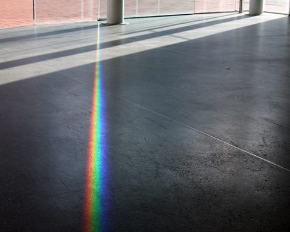
Cahaya dapat diuraikan menjadi warna-warna karena sifat gelombangnya. (Kredit: "wonderferret"/Flickr)
Cahaya putih, seperti cahaya dari matahari, sebenarnya sama sekali tidak putih. Sebaliknya, itu adalah komposisi dari semua warna pelangi dalam bentuk gelombang. Warna-warna individu hanya dapat dilihat ketika cahaya putih melewati prisma optik yang memisahkan gelombang sesuai panjang gelombang mereka untuk membentuk pelangi.
Gelombang cahaya dapat digambarkan secara grafis oleh fungsi sinus. Fungsi trigonometri, kita telah mempelajari fungsi trigonometri seperti fungsi sinus. Dalam bagian ini, kita akan menafsirkan dan membuat grafik fungsi sinus dan kosinus.
Grafik Fungsi Sinus dan Kosinus
Ingatlah bahwa fungsi sinus dan kosinus mengaitkan nilai bilangan real dengan koordinat x dan y dari suatu titik pada lingkaran satuan. Jadi, seperti apa bentuk kedua fungsi tersebut pada grafik di bidang koordinat? Mari kita mulai dengan fungsi sinus. Kita dapat membuat tabel nilai dan menggunakannya untuk membuat sketsa grafik. rujukan memuat beberapa nilai fungsi sinus pada lingkaran satuan.
Memplot titik-titik dari tabel dan meneruskannya sepanjang sumbu x menghasilkan bentuk grafik fungsi sinus. Lihat rujukan.
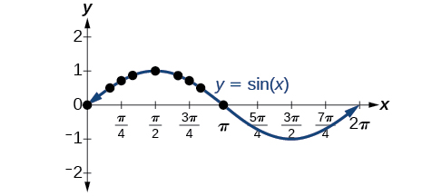
Fungsi sinus
Perhatikan bagaimana nilai sinus positif antara 0 dan yang sesuai dengan nilai fungsi sinus dalam kuadran I dan II pada lingkaran satuan, dan nilai sinus adalah negatif antara dan yang sesuai dengan nilai fungsi sinus dalam kuadran III dan IV pada lingkaran satuan. Lihat rujukan.
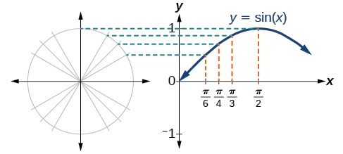
Memplot nilai-nilai fungsi sinus
Sekarang mari kita lihat yang serupa pada fungsi kosinus. Sekali lagi, kita dapat membuat tabel nilai dan menggunakannya untuk membuat sketsa grafik. rujukan memuat beberapa nilai fungsi kosinus pada lingkaran satuan.
Seperti pada fungsi sinus, kita dapat memplot titik-titik untuk membuat grafik fungsi kosinus seperti pada rujukan.
Fungsi kosinus
Karena kita dapat mengevaluasi sinus dan kosinus dari setiap bilangan real, kedua fungsi ini didefinisikan untuk semua bilangan real. Dengan berpikir nilai sinus dan kosinus sebagai koordinat titik pada lingkaran satuan, menjadi jelas bahwa range kedua fungsi harus interval
Pada kedua grafik, bentuk grafik berulang setelah yang berarti fungsi adalah periodik dengan periode Sebuah fungsi periodik adalah fungsi yang jika mengalami suatu pergeseran horizontal, P, menghasilkan fungsi yang sama dengan fungsi asli: untuk semua nilai dalam domain Jika hal ini terjadi, pergeseran horizontal positif terkecil dengan disebut sebagai periode fungsi. rujukan menunjukkan beberapa periode fungsi sinus dan kosinus.
Melihat kembali fungsi sinus dan kosinus pada domain yang berpusat pada sumbu y membantu memperlihatkan simetrinya. Seperti terlihat pada rujukan, fungsi sinus simetris terhadap titik asal. Ingat dari Fungsi Trigonometri Lain bahwa kita menentukan dari lingkaran satuan bahwa fungsi sinus adalah fungsi ganjil karena
Sekarang sifat ini tampak jelas pada grafik.
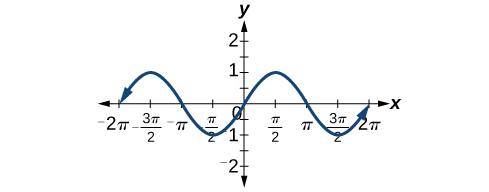
Simetri ganjil fungsi sinus
rujukan menunjukkan bahwa fungsi kosinus simetris terhadap sumbu y. Sebelumnya kita telah menentukan bahwa fungsi kosinus adalah fungsi genap. Sekarang grafik memperlihatkan bahwa
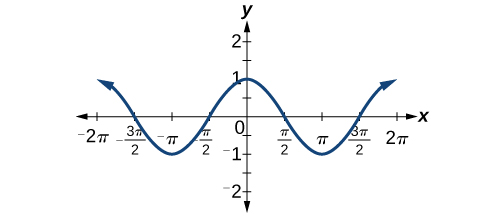
Simetri genap fungsi kosinus
Mengkaji Fungsi Sinusoidal
Seperti yang kita lihat, fungsi sinus dan kosinus memiliki periode dan range yang teratur. Jika kita melihat gelombang laut atau gelombang di kolam, kita akan melihat bahwa mereka menyerupai fungsi sinus atau kosinus. Namun, mereka tidak selalu identik. Beberapa lebih tinggi atau lebih panjang dari yang lain. Fungsi yang memiliki bentuk umum yang sama dengan sinus atau fungsi kosinus dikenal sebagai fungsi sinusoidal. Bentuk umum fungsi sinusoidal adalah
Menentukan Periode Fungsi sinusoidal
Dari bentuk fungsi sinusoidal, kita melihat bahwa fungsi-fungsi tersebut merupakan transformasi fungsi sinus dan kosinus. Pengetahuan tentang transformasi dapat digunakan untuk menentukan periodenya.
Dalam rumus umum, berhubungan dengan periode Jika maka periode kurang dari dan fungsi mengalami pemampatan horizontal, sedangkan jika maka periode tersebut lebih besar dari dan fungsi mengalami peregangan horizontal. Sebagai contoh, Jadi periode adalah yang sudah kita ketahui. Jika maka Jadi periode adalah dan grafiknya dimampatkan. maka sehingga periodenya adalah dan grafik mengalami peregangan horizontal. Perhatikan pada rujukan bagaimana periode berbanding terbalik dengan
Mengidentifikasi Periode Fungsi Sinus atau Kosinus
Menentukan periode fungsi
Penyelesaian
Mari kita mulai dengan membandingkan persamaan dengan bentuk umum
Dalam persamaan yang diberikan, sehingga periodenya adalah
Menentukan amplitudo
Kembali ke rumus umum untuk fungsi sinusoidal, kita telah menganalisis bagaimana variabel Sekarang mari kita beralih ke variabel sehingga kita dapat menganalisis bagaimana hal itu terkait dengan amplitudo, yaitu jarak terbesar dari posisi setimbang. mewakili faktor peregangan vertikal, dan nilai mutlaknya adalah amplitudonya. Maksimum lokal berjarak di atas garis tengah dari grafik, yang merupakan garis karena dalam hal ini, garis tengah adalah x. Minimum lokal berjarak sama di bawah garis tengah. Jika fungsi diregangkan secara vertikal. Sebagai contoh, amplitudo adalah dua kali amplitudo dari Jika fungsi dimampatkan. rujukan membandingkan beberapa fungsi sinus dengan amplitudo yang berbeda.
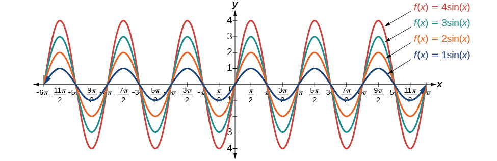
Mengidentifikasi Amplitudo Fungsi Sinus atau Kosinus
Berapa amplitudo fungsi sinusoidal Apakah fungsi tersebut diregangkan atau dimampatkan secara vertikal?
Penyelesaian
Mari kita mulai dengan membandingkan fungsi dengan bentuk yang disederhanakan
Dalam fungsi yang diberikan, Jadi amplitudo adalah Fungsi tersebut diregangkan.
Analisis
Nilai negatif dari menghasilkan pencerminan terhadap sumbu x dari fungsi sinus, seperti yang ditunjukkan dalam rujukan.
Menganalisis Grafik Variasi dari y = sin x dan y = cos x
Sekarang kita mengerti bagaimana dan berhubungan dengan persamaan bentuk umum untuk fungsi sinus dan kosinus, kita akan mengeksplorasi variabel dan Ingatlah bentuk umum:
Nilai untuk suatu fungsi sinusoidal disebut pergeseran fase, atau pergeseran horizontal sinus dasar atau fungsi kosinus. Jika grafik bergeser ke kanan. Jika grafik bergeser ke kiri. Semakin besar nilai semakin jauh grafik bergeser. rujukan menunjukkan bahwa grafik dari bergeser ke kanan dengan satuan, lebih besar daripada pergeseran pada grafik yang bergeser ke kanan dengan satuan.
Sementara berhubungan dengan pergeseran horizontal, menunjukkan pergeseran vertikal dari garis tengah dalam rumus umum untuk fungsi sinusoidal. Lihat rujukan. Fungsi memiliki garis tengahnya di
Setiap nilai dari selain nol menggeser grafik ke atas atau ke bawah. rujukan membandingkan dengan yang digeser 2 satuan ke atas pada grafik.
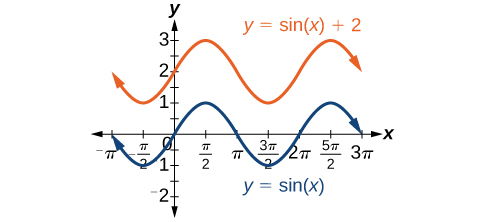
Mengidentifikasi Pergeseran Fase Fungsi
Tentukan arah dan ukuran pergeseran fase untuk
Penyelesaian
Mari kita mulai dengan membandingkan persamaan dengan bentuk umum
Dalam persamaan yang diberikan, perhatikan bahwa dan Jadi pergeseran fase adalah
atau satuan ke kiri.
Analisis
Kita harus memperhatikan tanda pada persamaan bentuk umum fungsi sinusoidal. Persamaan tersebut memuat tanda minus sebelum Oleh karena itu dapat ditulis ulang sebagai Jika nilai dari adalah negatif, pergeseran ke kiri.
Mengidentifikasi Pergeseran Vertikal Fungsi
Tentukan arah dan magnitudo pergeseran vertikal untuk
Penyelesaian
Mari kita mulai dengan membandingkan persamaan dengan bentuk umum
Dalam persamaan yang diberikan, sehingga pergeserannya 3 satuan ke bawah.
Mengidentifikasi Variasi Fungsi Sinusoidal dari Persamaan
Tentukan garis tengah, amplitudo, periode, dan pergeseran fase fungsi
Penyelesaian
Mari kita mulai dengan membandingkan persamaan dengan bentuk umum
Jadi amplitudo adalah
Selanjutnya, Jadi periode adalah
Tidak ada konstanta tambahan di dalam tanda kurung, sehingga dan pergeseran fase adalah
Akhirnya, Jadi garis tengah adalah
Analisis
Dengan memeriksa grafik, kita dapat menentukan bahwa periode adalah garis tengah adalah dan amplitudonya 3. Lihat rujukan.
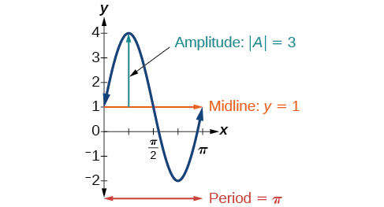
Mengidentifikasi persamaan untuk fungsi sinusoidal dari grafik
Untuk menentukan persamaan, kita perlu mengidentifikasi setiap nilai dalam bentuk umum fungsi sinusoidal.
Grafik dapat mewakili fungsi sinus atau fungsi kosinus yang digeser dan/atau dicerminkan. Ketika grafik memiliki titik ekstrem, Karena fungsi kosinus memiliki titik ekstrim untuk Mari kita menulis persamaan kita dalam bentuk fungsi kosinus.
Mari kita mulai dengan garis tengah. Kita bisa melihat bahwa grafik naik dan turun jarak yang sama di atas dan di bawah Nilai ini, yang merupakan garis tengah, adalah di persamaan, jadi
Jarak terbesar di atas atau di bawah garis tengah adalah amplitudo. Maksimum berada 0.5 satuan di atas garis tengah dan minimum berada 0.5 satuan di bawahnya. Jadi, Cara lain untuk menentukan amplitudo adalah dengan memperhatikan bahwa selisih tinggi maksimum lokal dan minimum lokal adalah 1, sehingga Selain itu, grafik dicerminkan terhadap sumbu x sehingga
Grafik tidak diregangkan maupun dimampatkan secara horizontal, sehingga dan grafik tidak bergeser secara horizontal, jadi
Menggabungkan semua ini,
Mengidentifikasi persamaan untuk fungsi sinusoidal dari grafik
Tentukan persamaan untuk fungsi sinusoidal pada rujukan.
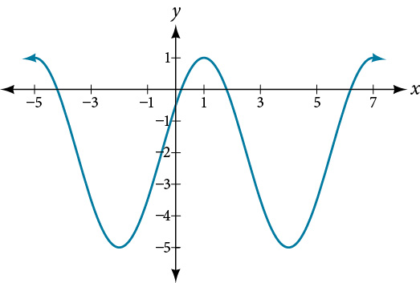
Penyelesaian
Dengan nilai tertinggi pada 1 dan nilai terendah pada garis tengah berada tepat di pertengahan kedua nilai tersebut, yaitu Jadi,
Jarak dari garis tengah ke nilai tertinggi atau terendah memberikan amplitudo
Periode grafik adalah 6, yang dapat diukur dari puncak pada ke puncak berikutnya di atau dari jarak antara titik-titik terendah. Oleh karena itu, Menggunakan nilai positif untuk kita menemukan bahwa
Sejauh ini, persamaan kita dapat berupa atau Untuk bentuk dan pergeseran, kita memiliki lebih dari satu pilihan. Kita dapat menuliskannya sebagai salah satu bentuk berikut:
kosinus bergeser ke kanan
kosinus negatif bergeser ke kiri
sinus bergeser ke kiri
sinus negatif bergeser ke kanan
Memilih untuk menggunakan fungsi kosinus, kita mengamati bahwa puncak, yang biasanya akan berada di , adalah pada , dan dengan faktor pemampatan horizontal sebesar , kita mendapatkan .
Semua bentuk ini benar, tetapi dalam kasus ini pergeseran kosinus lebih mudah digunakan daripada pergeseran sinus karena melibatkan nilai bilangan bulat. Jadi, fungsi kita menjadi
Sekali lagi, fungsi-fungsi ini ekuivalen, sehingga keduanya menghasilkan grafik yang sama.
Grafik Variasi dari y = sin x dan y = cos x
Sepanjang bagian ini, kita telah belajar tentang jenis variasi fungsi sinus dan kosinus dan menggunakan informasi itu untuk menulis persamaan dari grafik. Sekarang kita bisa menggunakan informasi yang sama untuk membuat grafik dari persamaan.
Alih-alih berfokus pada persamaan bentuk umum
kita akan menetapkan dan dan bekerja dengan bentuk disederhanakan dari persamaan dalam contoh berikut.
Menggambar Fungsi serta Mengidentifikasi Amplitudo dan Periodenya
Lukiskan grafik dari
Penyelesaian
Mari kita mulai dengan membandingkan persamaan dengan bentuk
Langkah 1. Kita bisa melihat dari persamaan bahwa sehingga amplitudonya 2.
Langkah 2. Persamaan menunjukkan bahwa Jadi periode adalah
Langkah 3. Karena bernilai negatif, grafik menurun ketika kita bergerak ke kanan dari titik asal.
Langkah 4–7. Titik potong sumbu x berada pada awal satu periode, titik tengah horizontal berada di dan pada akhir satu periode pada
Titik-titik seperempat periode mencakup minimum pada dan maksimum pada Minimum lokal terjadi 2 satuan di bawah garis tengah, pada dan maksimum lokal terjadi 2 satuan di atas garis tengah, pada rujukan menunjukkan grafik fungsi.
Menggambar Grafik Sinusoidal yang Ditransformasi
Lukiskan grafik dari
Penyelesaian
Langkah 1. Fungsi sudah ditulis dalam bentuk umum: Grafik ini akan memiliki bentuk fungsi sinus, mulai dari garis tengah dan naik ke kanan.
Langkah 2. Amplitudonya 3.
Langkah 3. Karena kita menentukan periode sebagai berikut.
Grafik sinusoidal yang dimampatkan secara horizontal, diregangkan secara vertikal, dan digeser secara horizontal
Mengidentifikasi Sifat-Sifat Fungsi sinusoidal
Diberi tentukan amplitudo, periode, pergeseran fase, dan pergeseran vertikalnya. Kemudian gambarkan fungsi tersebut.
Penyelesaian
Mulailah dengan membandingkan persamaan dengan bentuk umum dan gunakan langkah-langkah yang diuraikan di rujukan.
Langkah 1. Fungsi sudah ditulis dalam bentuk umum.
Langkah 2. Karena amplitudonya adalah
Langkah 3. Jadi periode adalah Periode adalah 4.
Langkah 4. Jadi kita menghitung pergeseran fase sebagai Pergeseran fasenya adalah
Langkah 5. Jadi garis tengah adalah dan pergeseran vertikalnya 3 satuan ke atas.
Karena bernilai negatif, grafik fungsi kosinus telah dicerminkan terhadap sumbu x.
rujukan menunjukkan satu siklus dari grafik fungsi.
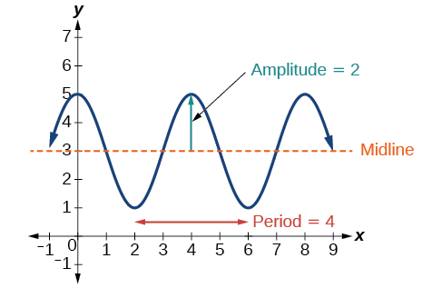
Menggunakan Transformasi Fungsi Sinus dan Kosinus
Transformasi fungsi sinus dan kosinus dapat digunakan dalam banyak penerapan. Sebagaimana disebutkan pada awal bab, gerak melingkar dapat dimodelkan menggunakan sinus atau fungsi kosinus.
Menentukan Komponen Vertikal Gerak Melingkar
Sebuah titik berputar mengelilingi lingkaran berjari-jari 3 yang berpusat di titik asal. Gambarkan grafik koordinat y titik tersebut sebagai fungsi sudut rotasi.
Penyelesaian
Ingatlah bahwa, untuk titik pada lingkaran berjari-jari r, koordinat y titik tersebut adalah
Jadi dalam hal ini, kita mendapatkan persamaan
Konstanta 3 menyebabkan peregangan vertikal nilai y fungsi sebesar faktor 3, sebagaimana terlihat pada grafik di rujukan.
Analisis
Perhatikan bahwa periode fungsi masih Saat kita mengelilingi lingkaran, kita kembali ke titik untuk Karena keluaran grafik kini akan berosilasi di antara dan amplitudo gelombang sinus adalah
Menemukan Komponen Vertikal Gerakan Sirkular
Lingkaran berjari-jari 3 kaki dipasang dengan pusat 4 kaki di atas tanah. Titik yang paling dekat dengan tanah diberi label P, seperti yang ditunjukkan dalam rujukan. Gambarkan grafik ketinggian titik ketika lingkaran berputar; kemudian cari fungsi yang memberikan ketinggian dalam hal sudut putaran.
Penyelesaian
Ketika menggambarkan ketinggiannya, kita perhatikan bahwa titik bermula 1 kaki di atas tanah, naik hingga 7 kaki di atas tanah, lalu terus berosilasi 3 kaki di atas dan di bawah nilai tengah 4 kaki, seperti ditunjukkan pada rujukan.
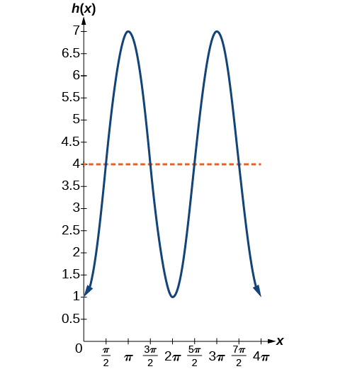
Walaupun kita dapat menggunakan transformasi fungsi sinus maupun kosinus, mula-mula kita mencari ciri yang membuat salah satunya lebih mudah digunakan. Kita gunakan fungsi kosinus karena fungsi ini bermula pada nilai tertinggi atau terendah, sedangkan fungsi sinus bermula pada nilai tengah. Fungsi kosinus standar bermula pada nilai tertinggi, sedangkan grafik ini bermula pada nilai terendah; karena itu kita perlu menyertakan pencerminan vertikal.
Kedua, grafik berosilasi 3 satuan di atas dan di bawah pusat, sedangkan kosinus dasar beramplitudo 1. Jadi, seperti pada contoh sebelumnya, grafik ini diregangkan secara vertikal dengan faktor 3.
Terakhir, agar pusat lingkaran berada pada ketinggian 4, grafik digeser secara vertikal ke atas sebesar 4. Dengan menggabungkan transformasi-transformasi ini, diperoleh
Menentukan Ketinggian Penumpang pada Bianglala
London Eye adalah bianglala besar berdiameter 135 meter (443 kaki). Bianglala ini menyelesaikan satu putaran setiap 30 menit. Penumpang naik dari peron 2 meter di atas tanah. Nyatakan ketinggian penumpang dari tanah sebagai fungsi waktu dalam menit.
Penyelesaian
Dengan diameter 135 m, bianglala memiliki jari-jari 67.5 m. Ketinggian akan berosilasi dengan amplitudo 67.5 m di atas dan di bawah pusat.
Penumpang naik 2 m di atas permukaan tanah, sehingga pusat bianglala harus berada m di atas permukaan tanah. Garis tengah osilasi berada pada 69.5 m.
Bianglala memerlukan 30 menit untuk menyelesaikan 1 putaran, sehingga ketinggian berosilasi dengan periode 30 menit.
Terakhir, karena penumpang naik pada titik terendah, ketinggian bermula dari nilai terkecil lalu meningkat, mengikuti bentuk kurva kosinus yang dicerminkan secara vertikal.
Amplitudo: Jadi
Garis tengah: Jadi
Periode: Jadi
Bentuk:
Persamaan untuk ketinggian penumpang adalah
di mana dinyatakan dalam menit dan diukur dalam meter.
Persamaan Utama
fungsi sinusoidal
Konsep Utama
Fungsi periodik berulang setelah nilai tertentu. Nilai positif terkecil tersebut adalah periode. Fungsi dasar sinus dan kosinus memiliki periode
Fungsi adalah ganjil, sehingga grafiknya simetris terhadap titik asal. merupakan fungsi genap, sehingga grafiknya simetris terhadap sumbu y.
Grafik fungsi sinusoidal memiliki bentuk umum yang sama dengan fungsi sinus atau kosinus.
Dalam rumus umum untuk fungsi sinusoidal, periode adalah Lihatlah rujukan.
Dalam rumus umum untuk fungsi sinusoidal, menyatakan amplitudo. Jika fungsi diregangkan, sedangkan jika fungsi dimampatkan. Lihat rujukan.
Nilai dalam rumus umum fungsi sinusoidal menunjukkan pergeseran fase. Lihat rujukan.
Nilai dalam rumus umum fungsi sinusoidal menunjukkan pergeseran vertikal dari garis tengah. Lihat rujukan.
Kombinasi variasi fungsi sinusoidal dapat dikenali dari persamaan. Lihat rujukan.
Persamaan fungsi sinusoidal dapat ditentukan dari grafik. Lihat rujukan dan rujukan.
Suatu fungsi dapat digambar dengan mengidentifikasi amplitudo dan periodenya. Lihat rujukan dan rujukan.
Suatu fungsi juga dapat digambar dengan mengidentifikasi amplitudo, periode, pergeseran fase, dan pergeseran horizontalnya. Lihat rujukan.
Fungsi sinusoidal dapat digunakan untuk menyelesaikan masalah dunia nyata. Lihat rujukan, rujukan, dan rujukan.
Latihan Bagian
Verbal
Mengapa fungsi sinus dan kosinus disebut fungsi periodik?
Penyelesaian
Fungsi sinus dan kosinus memiliki sifat yang untuk suatu Ini berarti bahwa nilai fungsi berulang setiap satuan pada sumbu x.
Bagaimana grafik
dibandingkan dengan grafik
Jelaskan bagaimana grafik
untuk memperoleh
Untuk persamaan Konstanta apa yang memengaruhi range fungsi dan bagaimana pengaruhnya terhadap range?
Penyelesaian
Nilai mutlak konstanta (amplitudo) memperlebar keseluruhan range, sedangkan konstanta (pergeseran vertikal) menggeser grafik secara vertikal.
Bagaimana range fungsi sinus yang digeser berkaitan dengan persamaan
Bagaimana lingkaran satuan dapat digunakan untuk membangun grafik dari
Penyelesaian
Pada titik di mana sisi terminal dari memotong lingkaran satuan, Anda dapat menentukan bahwa sama dengan koordinat y titik tersebut.
Grafis
Untuk latihan berikut, gambarkan dua periode penuh setiap fungsi dan nyatakan amplitudo, periode, serta garis tengahnya. Nyatakan nilai maksimum dan minimum y serta nilai x yang bersesuaian dalam satu periode untuk Bulatkan jawaban hingga dua tempat desimal jika perlu.
Penyelesaian
amplitudo: Periode: garis tengah: maksimum: terjadi pada minimum: terjadi pada Untuk satu periode, grafik dimulai pada 0 dan berakhir pada
Penyelesaian
amplitudo: 4; periode: garis tengah: maksimum terjadi pada minimum: terjadi pada satu periode penuh terjadi dari hingga
Penyelesaian
amplitudo: 1; periode: garis tengah: maksimum: terjadi pada minimum: terjadi pada satu periode penuh digambar dari hingga
Penyelesaian
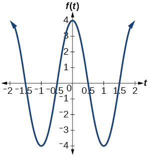
Amplitudo: 4; periode: 2; garis tengah: maksimum: terjadi pada minimum: terjadi pada
Penyelesaian
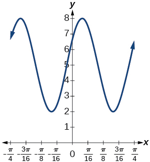
amplitudo: 3; periode: garis tengah: maksimum: terjadi pada minimum: terjadi pada Pergeseran horizontal: pergeseran vertikal 5; satu periode berlangsung dari hingga
Penyelesaian
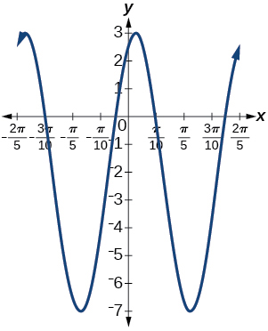
Amplitudo: 5; periode: garis tengah: maksimum: terjadi pada minimum: terjadi pada Pergeseran fase: pergeseran vertikal: satu periode penuh dapat digambar pada interval hingga
Untuk latihan berikut, gambarkan satu periode penuh setiap fungsi, dimulai dari Untuk setiap fungsi, nyatakan amplitudo, periode, dan garis tengahnya. Nyatakan nilai maksimum dan minimum y serta nilai x yang bersesuaian dalam satu periode untuk Nyatakan pergeseran fase dan pergeseran vertikal, jika ada. Bulatkan jawaban hingga dua tempat desimal jika perlu.
Penyelesaian
Amplitudo: 1; periode: garis tengah: maksimum: terjadi pada minimum: terjadi pada Pergeseran fase: pergeseran vertikal: 1; satu periode penuh adalah dari hingga
Penyelesaian
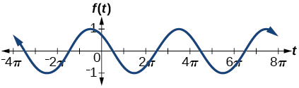
amplitudo: 1; periode: garis tengah: maksimum: terjadi pada minimum: terjadi pada Pergeseran fase: Pergeseran vertikal: 0
Tentukan amplitudo, garis tengah, periode, dan persamaan yang melibatkan fungsi sinus untuk grafik yang ditunjukkan di rujukan.
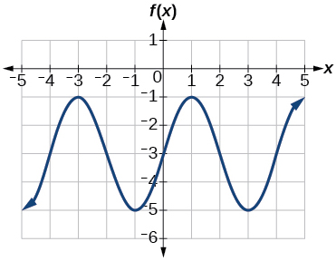
Penyelesaian
Amplitudo: 2; garis tengah: periode: 4; persamaan:
Tentukan amplitudo, periode, garis tengah, dan persamaan yang melibatkan kosinus untuk grafik yang ditunjukkan di rujukan.
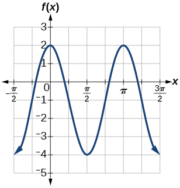
Tentukan amplitudo, periode, garis tengah, dan persamaan yang melibatkan kosinus untuk grafik yang ditunjukkan di rujukan.
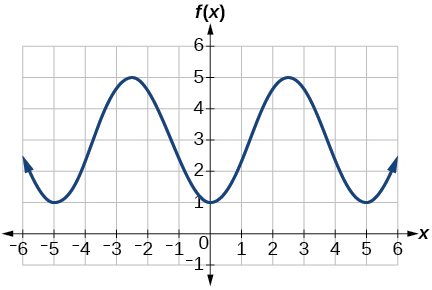
Penyelesaian
Amplitudo: 2; periode: 5; garis tengah: persamaan:
Tentukan amplitudo, periode, garis tengah, dan persamaan yang melibatkan sinus untuk grafik yang ditunjukkan di rujukan.
Tentukan amplitudo, periode, garis tengah, dan persamaan yang melibatkan kosinus untuk grafik yang ditunjukkan di rujukan.
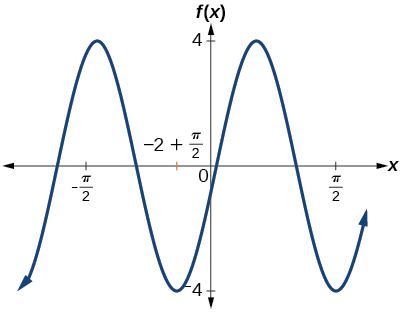
Penyelesaian
Amplitudo: 4; periode: 2; garis tengah: persamaan:
Tentukan amplitudo, periode, garis tengah, dan persamaan yang melibatkan sinus untuk grafik yang ditunjukkan di rujukan.
Tentukan amplitudo, periode, garis tengah, dan persamaan yang melibatkan kosinus untuk grafik yang ditunjukkan di rujukan.
Penyelesaian
amplitudo: 2; periode: 2; garis tengah persamaan:
Tentukan amplitudo, periode, garis tengah, dan persamaan yang melibatkan sinus untuk grafik yang ditunjukkan di rujukan.
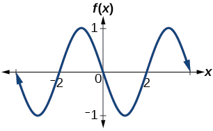
Aljabar
Untuk latihan berikut, tetapkan
Pada selesaikan
Penyelesaian
Pada selesaikan
Hitung
Penyelesaian
Pada Temukan semua nilai dari
Pada nilai maksimum fungsi terjadi pada nilai x berapa?
Penyelesaian
Pada nilai minimum fungsi terjadi pada nilai x berapa?
Tunjukkan bahwa Ini berarti bahwa adalah fungsi ganjil dan memiliki simetri terhadap ________________.
Penyelesaian
adalah simetris
Untuk latihan berikut, tetapkan
Pada selesaikan persamaan
Pada selesaikan
Penyelesaian
Pada tentukan titik potong sumbu x dari
Pada tentukan nilai x tempat fungsi mencapai nilai maksimum atau minimum.
Penyelesaian
Maksimum:
di
; minimum:
di
Pada selesaikan persamaan
Teknologi
Gambarkan grafik pada Jelaskan mengapa grafik tampak demikian.
Penyelesaian
Sebuah fungsi linear ditambahkan pada fungsi sinus periodik. Grafik tidak memiliki amplitudo karena ketika fungsi linear meningkat tanpa batas, fungsi gabungan
juga akan meningkat tanpa batas. Grafik dibatasi oleh grafik
dan
karena sinus berosilasi di antara −1 dan 1.
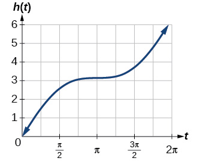
Gambarkan grafik pada Apakah grafik muncul seperti yang diprediksi dalam latihan sebelumnya?
Gambarkan grafik pada dan jelaskan dengan kata-kata bagaimana grafik tersebut berbeda dari grafik
Penyelesaian
Tidak ada amplitudo karena fungsi tidak terbatas.
Gambarkan grafik pada jendela dan jelaskan apa yang ditunjukkan grafik.
Gambarkan grafik pada jendela dan jelaskan apa yang ditunjukkan grafik.
Penyelesaian
Grafik simetris terhadap sumbu y dan tidak memiliki amplitudo karena batas fungsi mengecil ketika
bertambah. Tampaknya terdapat asimtot horizontal pada
.
Aplikasi Dunia Nyata
Sebuah bianglala berdiameter 25 meter dan dinaiki dari peron 1 meter di atas tanah. Posisi pukul enam pada bianglala sejajar dengan peron naik. Roda menyelesaikan 1 putaran penuh dalam 10 menit. Fungsi memberikan ketinggian seseorang dalam meter di atas tanah t menit setelah roda mulai berputar.
ⓐ Temukan amplitudo, garis tengah, dan periode
ⓑ Temukan rumus untuk fungsi ketinggian
ⓒ Seberapa tinggi seseorang di atas tanah setelah 5 menit?
amplitudo
ketinggian vertikal suatu fungsi; konstanta muncul dalam definisi fungsi sinusoidal
garis tengah
garis horizontal di mana muncul dalam bentuk umum fungsi sinusoidal
fungsi periodik
fungsi yang memenuhi untuk konstanta tertentu dan nilai apa pun dari
pergeseran fase
pergeseran horizontal fungsi sinus atau kosinus dasar; konstanta
fungsi sinusoidal
fungsi apa pun yang dapat dinyatakan dalam bentuk atau
Bab 6 · Urutan sumber 40 · m49389
Grafik Fungsi Trigonometri Lainnya
Kita mengetahui bahwa fungsi tangen dapat digunakan untuk mencari jarak, misalnya tinggi gedung, gunung, atau tiang bendera. Namun, bagaimana jika kita ingin mengukur kejadian berulang dari suatu jarak? Bayangkan, misalnya, sebuah mobil pemadam kebakaran yang diparkir di samping gudang. Lampu berputar pada mobil itu akan menyapu dinding gudang secara berkala. Jika masukannya adalah waktu, keluarannya adalah jarak yang ditempuh berkas cahaya. Berkas cahaya akan menempuh pola jarak yang berulang secara berkala. Fungsi tangen dapat digunakan untuk menghampiri jarak ini. Ketika berkas sejajar dengan dinding, asimtot diperlukan untuk menggambarkan siklus berulang tersebut karena berkas seolah-olah dapat memanjang tanpa batas. Grafik fungsi tangen memperlihatkan interval-interval berulang itu dengan jelas. Pada bagian ini, kita akan mempelajari grafik fungsi tangen dan fungsi trigonometri lainnya.
Menganalisis Grafik y = tan x
Kita akan mulai dengan menggambar grafik fungsi tangen, dengan memplot titik-titik seperti pada fungsi sinus dan kosinus. Ingatlah bahwa
periode fungsi tangen adalah karena grafik berulang pada interval dengan adalah sebuah konstanta. Jika kita membuat grafik fungsi tangen pada hingga kita dapat melihat perilaku grafik dalam satu siklus penuh. Jika kita melihat interval yang lebih besar, kita akan melihat bahwa karakteristik grafik berulang.
Kita dapat menentukan apakah tangen merupakan fungsi ganjil atau genap dengan menggunakan definisi tangen.
Oleh karena itu, tangen merupakan fungsi ganjil. Kita dapat menganalisis lebih lanjut perilaku grafis fungsi tangen dengan melihat nilai beberapa sudut istimewa, seperti yang tercantum dalam rujukan.
0
tidak terdefinisi
–1
0
1
tidak terdefinisi
Titik-titik ini membantu kita menggambar grafik, tetapi kita perlu menentukan perilakunya di tempat fungsi tidak terdefinisi. Jika kita mencermati nilai-nilai ketika kita dapat menggunakan tabel untuk mencari kecenderungannya. Karena dan kita akan mengevaluasi pada ukuran radian seperti yang ditunjukkan pada rujukan.
1.3
1.5
1.55
1.56
3.6
14.1
48.1
92.6
Ketika mendekat keluaran fungsi menjadi semakin besar. Karena merupakan fungsi ganjil, tabel nilai negatif yang bersesuaian ditunjukkan pada rujukan.
−1.3
−1.5
−1.55
−1.56
−3.6
−14.1
−48.1
−92.6
Kita dapat melihat bahwa, ketika mendekat keluarannya menjadi semakin kecil. Ingatlah bahwa ada nilai-nilai yang membuat Misalnya, dan Pada nilai ini, fungsi tangen tidak terdefinisi, sehingga grafik memiliki diskontinuitas pada Pada nilai ini, grafik tangen memiliki asimtot vertikal. rujukan mewakili grafik Tangen bernilai positif dari 0 hingga dan dari hingga sesuai dengan kuadran I dan III lingkaran satuan.
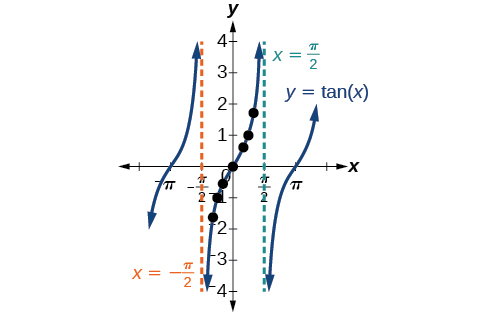
Grafik fungsi tangen
Variasi Grafik dari y = tan x
Seperti halnya fungsi sinus dan kosinus, tangen dapat dijelaskan dengan persamaan umum.
Kita dapat mengidentifikasi regangan dan pemampatan horizontal dan vertikal menggunakan nilai dan Peregangan horizontal biasanya dapat ditentukan dari periode grafik. Pada grafik tangen, peregangan vertikal sering perlu ditentukan menggunakan sebuah titik pada grafik.
Karena fungsi tangen tidak memiliki nilai maksimum atau minimum, istilah amplitudo tidak dapat ditafsirkan dengan cara yang sama seperti pada fungsi sinus dan kosinus. Sebagai gantinya, kita akan menggunakan istilah faktor peregangan/pemampatan ketika mengacu pada konstanta
Membuat Grafik Satu Periode Fungsi Tangen yang Diregangkan atau Dimampatkan
Kita dapat menggunakan sifat-sifat fungsi tangen untuk dengan cepat membuat sketsa grafik fungsi tangen yang diregangkan dan/atau dimampatkan dalam bentuk Kita memusatkan perhatian pada satu periode dari fungsi yang mencakup titik asal, karena sifat periodiknya memungkinkan kita memperluas grafik ke seluruh domain fungsi jika diinginkan. Domain terbatas yang kita gunakan adalah interval dan grafiknya memiliki asimtot vertikal di dengan Pada grafik akan muncul dari asimtot kiri di melintasi titik asal, dan terus meningkat saat mendekati asimtot kanan di Untuk membuat fungsi mendekati asimtot pada laju yang benar, kita juga perlu mengatur skala vertikal dengan benar-benar mengevaluasi fungsi tersebut untuk setidaknya satu titik yang akan dilewati grafik. Misalnya kita bisa menggunakan
karena
Membuat Sketsa Tangen yang Dimampatkan
Buatlah sketsa grafik satu periode fungsi
Penyelesaian
Pertama, kita identifikasi dan
Karena dan kita dapat menentukan faktor peregangan/pemampatan dan periodenya. Periodenya adalah jadi asimtotnya ada di Pada seperempat periode dari titik asal, diperoleh
Artinya kurva harus melalui titik-titik tersebut dan Satu-satunya titik belok ada di titik asal. rujukan menunjukkan grafik satu periode fungsi.
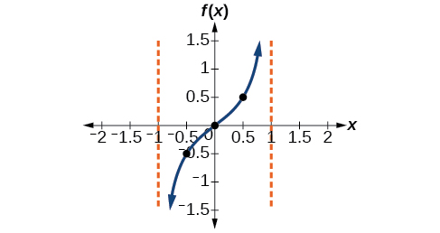
Membuat Grafik Satu Periode dari Fungsi Tangen Bergeser
Sekarang kita dapat menggambar fungsi tangen yang diregangkan atau dimampatkan, lalu menambahkan pergeseran vertikal dan/atau horizontal (fase). Dalam hal ini, kita menambahkan dan ke bentuk umum fungsi tangen.
Grafik fungsi tangen yang ditransformasi berbeda dengan fungsi tangen dasar dalam beberapa cara:
Membuat Grafik Satu Periode dari Fungsi Tangen Bergeser
Gambarkan satu periode fungsi
Penyelesaian
Langkah 1. Fungsi tersebut sudah ditulis dalam bentuk
Langkah 2. sehingga faktor peregangannya adalah
Langkah 3. jadi periodenya adalah
Langkah 4. jadi pergeseran fasenya adalah
Langkah 5-7. Asimtotnya ada di dan dan tiga titik referensi yang direkomendasikan adalah dan Grafiknya ditunjukkan pada rujukan.
Analisis
Perhatikan bahwa ini adalah fungsi menurun karena
Mengidentifikasi Grafik Tangen yang Diregangkan
Temukan rumus untuk fungsi yang digambarkan dalam grafik rujukan.
fungsi tangen yang diregangkan
Penyelesaian
Grafik tersebut berbentuk seperti fungsi tangen.
Langkah 1. Satu siklus berlangsung dari –4 hingga 4, jadi periodenya adalah Karena kita punya
Langkah 2. Persamaannya harus berbentuk
Langkah 3. Untuk mencari peregangan vertikal kita dapat menggunakan titik
Karena
Fungsi ini akan memiliki rumus
Menganalisis Grafik y = sec x dan y = cscx
sekan didefinisikan melalui identitas resiprokal Perhatikan bahwa fungsinya tidak terdefinisi ketika kosinusnya adalah 0, sehingga menghasilkan asimtot vertikal pada dan seterusnya. Karena nilai absolut kosinus tidak pernah melebihi 1, nilai absolut sekan, sebagai resiprokalnya, tidak pernah kurang dari 1.
Kita dapat membuat grafik dengan mengamati grafik fungsi kosinus karena kedua fungsi tersebut saling resiprokal. Lihat rujukan. Grafik kosinus ditampilkan sebagai gelombang oranye putus-putus agar hubungannya terlihat. Ketika grafik fungsi kosinus menurun, grafik fungsi sekan meningkat. Ketika grafik fungsi kosinus meningkat, grafik fungsi sekan menurun. Ketika fungsi kosinus bernilai nol, sekan tidak terdefinisi.
Grafik sekan memiliki asimtot vertikal pada setiap nilai saat grafik kosinus memotong sumbu x; asimtot tersebut ditampilkan pada grafik di bawah sebagai garis vertikal putus-putus, tetapi selanjutnya tidak semua asimtot pada grafik sekan dan kosekan ditampilkan secara eksplisit.
Perhatikan bahwa, karena kosinus merupakan fungsi genap, sekan juga merupakan fungsi genap. Artinya,
Grafik fungsi sekan,
Seperti yang kita lakukan untuk fungsi tangen, kita akan mengacu lagi pada konstanta sebagai faktor peregangan, bukan amplitudo.
Seperti halnya sekan, fungsi kosekan ditentukan oleh identitas resiprokal Perhatikan bahwa fungsi tersebut tidak terdefinisi ketika sinusnya adalah 0, yang menyebabkan asimtot vertikal pada grafik di dan seterusnya. Karena nilai absolut sinus tidak pernah melebihi 1, nilai absolut kosekan, sebagai resiprokalnya, tidak pernah kurang dari 1.
Kita dapat membuat grafik dengan mengamati grafik fungsi sinus karena kedua fungsi tersebut saling resiprokal. Lihat rujukan. Grafik sinus ditampilkan sebagai gelombang oranye putus-putus agar hubungannya terlihat. Ketika grafik fungsi sinus menurun, grafik fungsi kosekan meningkat. Ketika grafik fungsi sinus meningkat, grafik fungsi kosekan menurun.
Grafik kosekan memiliki asimtot vertikal pada setiap nilai saat grafik sinus memotong sumbu x; asimtot tersebut ditampilkan pada grafik di bawah sebagai garis vertikal putus-putus.
Perhatikan bahwa, karena sinus merupakan fungsi ganjil, maka fungsi kosekan juga merupakan fungsi ganjil. Artinya,
Grafik kosekan yang ditunjukkan pada rujukan, serupa dengan grafik sekan.
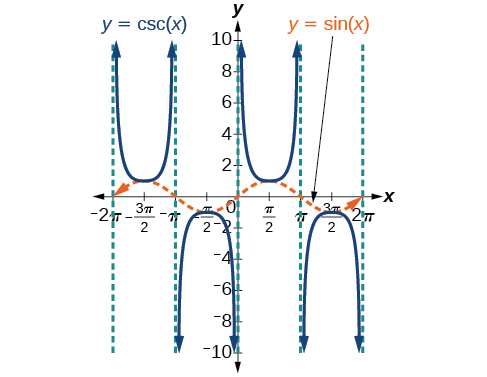
Grafik fungsi kosekan,
Variasi Grafik dari y = sec x dan y= csc x
Untuk versi fungsi sekan dan kosekan yang digeser, dimampatkan, dan/atau diregangkan, kita dapat mengikuti metode yang serupa dengan metode untuk tangen dan kotangen. Kita menentukan letak asimtot vertikal dan mengevaluasi fungsi di beberapa titik, khususnya titik-titik ekstrem lokal. Jika hanya satu periode yang akan digambar, interval periodenya dapat dipilih dengan lebih dari satu cara. Prosedur untuk sekan sangat serupa, karena identitas kofungsi menyatakan bahwa grafik sekan sama dengan grafik kosekan yang digeser setengah periode ke kiri. Pergeseran vertikal dan pergeseran fase dapat diterapkan pada fungsi kosekan dengan cara yang sama seperti untuk fungsi sekan dan fungsi lainnya. Persamaannya menjadi sebagai berikut.
Membuat Grafik Variasi Fungsi Sekan
Gambarkan satu periode
Penyelesaian
Langkah 1. Fungsi yang diberikan sudah ditulis dalam bentuk umum,
Langkah 2. sehingga faktor peregangannya adalah
Langkah 3. jadi Periodenya adalah unit.
Langkah 4. Buat sketsa grafik fungsi
Langkah 5. Gunakan hubungan resiprokal fungsi kosinus dan sekan untuk menggambar fungsi sekan.
Langkah 6–7. Buat sketsa dua asimtot di dan Kita dapat menggunakan dua titik referensi, minimum lokal di dan maksimum lokal pada rujukan menunjukkan grafik.
Membuat Grafik Variasi Fungsi Sekan
Gambarkan satu periode
Penyelesaian
Langkah 1. Nyatakan fungsi yang diberikan dalam bentuk
Langkah 2. Faktor peregangan/pemampatannya adalah
Langkah 3. Periodenya adalah
Langkah 4. pergeseran fase adalah
Langkah 5. Gambarlah grafik tapi geser ke kanan sebesar dan ke atas sebesar
Langkah 6. Buat sketsa asimtot vertikal yang muncul di dan Ada minimum lokal di dan maksimum lokal pada rujukan menunjukkan grafik.
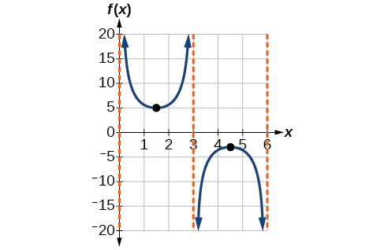
Membuat Grafik Variasi Fungsi Kosekan
Gambarkan satu periode
Penyelesaian
Langkah 1. Fungsi yang diberikan sudah ditulis dalam bentuk umum,
Langkah 2. sehingga faktor peregangannya adalah 3.
Langkah 3. jadi Periodenya adalah satuan.
Langkah 4. Buat sketsa grafik fungsi
Langkah 5. Gunakan hubungan resiprokal fungsi sinus dan kosekan untuk menggambar fungsi kosekan.
Langkah 6–7. Buat sketsa tiga asimtot di dan Kita dapat menggunakan dua titik referensi, maksimum lokal di dan minimum lokal pada rujukan menunjukkan grafik.
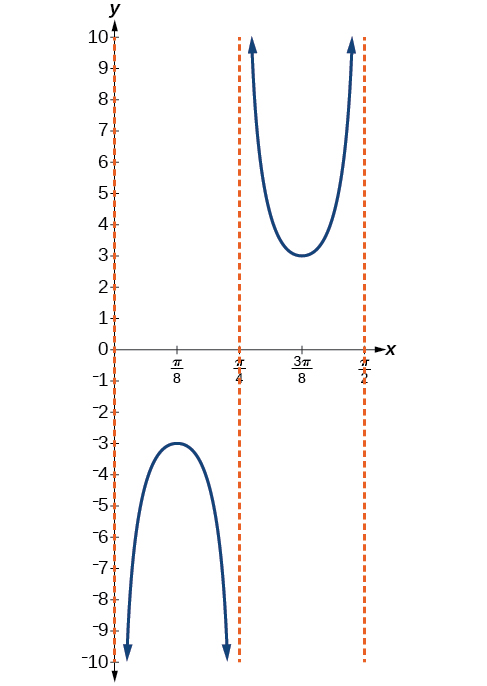
Membuat Grafik Kosekan yang Diregangkan Vertikal, Dimampatkan Horizontal, dan Digeser Vertikal
Buat sketsa grafik Apa domain dan range fungsi ini?
Penyelesaian
Langkah 1. Nyatakan fungsi yang diberikan dalam bentuk
Langkah 2. Tentukan faktor peregangan/pemampatan,
Langkah 3. Periodenya adalah
Langkah 4. pergeseran fasenya adalah
Langkah 5. Gambarlah grafik tetapi geser ke atas sebesar
Langkah 6. Buat sketsa asimtot vertikal yang muncul di
Asimtot vertikal yang ditunjukkan pada grafik menandai satu periode fungsi, dan ekstrem lokal dalam interval ini ditunjukkan dengan titik. Perhatikan bagaimana grafik kosekan yang ditransformasi berhubungan dengan grafik ditampilkan sebagai gelombang putus-putus berwarna oranye.
Menganalisis Grafik y = cot x
Fungsi trigonometri terakhir yang perlu kita jelajahi adalah kotangen. Kotangen ditentukan oleh identitas resiprokal Perhatikan bahwa fungsi tersebut tidak terdefinisi ketika fungsi tangennya adalah 0, yang menyebabkan asimtot vertikal pada grafik di dll. Karena keluaran dari fungsi tangen semuanya bilangan real, keluaran dari fungsi kotangen juga semuanya bilangan real.
Kita dapat membuat grafik dengan mengamati grafik fungsi tangen karena kedua fungsi tersebut saling resiprokal. Lihat rujukan. Ketika grafik fungsi tangen menurun, grafik fungsi kotangen meningkat. Ketika grafik fungsi tangen meningkat, grafik fungsi kotangen menurun.
Grafik kotangen mempunyai asimtot vertikal pada setiap nilai dengan asimtot tersebut ditampilkan pada grafik di bawah sebagai garis putus-putus. Karena kotangen adalah resiprokal tangen, memiliki asimtot vertikal di semua nilai dengan dan di semua nilai dengan memiliki asimtot vertikalnya.
Fungsi kotangen
Variasi Grafik dari y = cot x
Kita dapat mentransformasi grafik kotangen dengan cara yang hampir sama seperti untuk grafik tangen. Persamaannya menjadi sebagai berikut.
Membuat Grafik Variasi Fungsi Kotangen
Tentukan faktor peregangan, periode, dan pergeseran fase lalu buat sketsa grafiknya.
Penyelesaian
Langkah 1. Menuliskan fungsi dalam bentuk menghasilkan
Langkah 2. Faktor peregangannya adalah
Langkah 3. Periodenya adalah
Langkah 4. Buat sketsa grafik
Langkah 5. Plotkan dua titik acuan. Dua titik tersebut adalah dan
Langkah 6. Gunakan hubungan resiprokal untuk menggambar
Langkah 7. Buat sketsa asimtotnya,
Grafik biru di rujukan menunjukkan dan grafik hijau menunjukkan
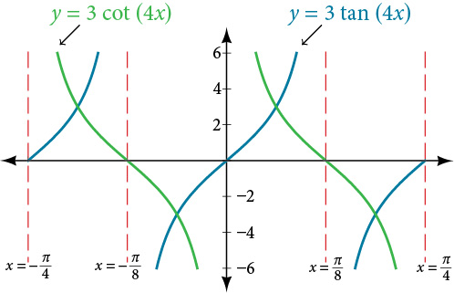
Membuat Grafik Kotangen yang Dimodifikasi
Buatlah sketsa grafik satu periode fungsi
Penyelesaian
Langkah 1. Fungsi tersebut sudah ditulis dalam bentuk umum
Langkah 2. sehingga faktor peregangannya adalah 4.
Langkah 3. jadi periodenya adalah
Langkah 4. jadi pergeseran fasenya adalah
Langkah 5. Kita menggambar
Langkah 6-7. Tiga titik yang dapat kita gunakan untuk memandu grafik adalah dan Kita menggunakan hubungan resiprokal tangen dan kotangen untuk menggambar
Satu periode dari fungsi kotangen yang dimodifikasi
Menggunakan Grafik Fungsi Trigonometri untuk Menyelesaikan Masalah Dunia Nyata
Banyak situasi dunia nyata menyatakan fungsi periodik dan dapat dimodelkan dengan fungsi trigonometri. Sebagai contoh, mari kembali ke skenario pembuka bagian. Pernahkah Anda mengamati berkas yang dihasilkan lampu berputar pada mobil pemadam dan bertanya-tanya tentang gerak berkas itu pada dinding? Sifat periodik jarak yang ditempuh cahaya sebagai fungsi waktu tampak jelas, tetapi bagaimana jarak itu ditentukan? Kita dapat menggunakan fungsi tangen.
Menggunakan Fungsi Trigonometri untuk Menyelesaikan Skenario Dunia Nyata
Misalkan fungsi menandai jarak pergerakan berkas cahaya dari atas mobil polisi melintasi dinding tempat adalah waktu dalam detik dan adalah jarak dalam kaki dari suatu titik di dinding tepat di seberang mobil polisi.
ⓐ Tentukan dan tafsirkan faktor peregangan dan periodenya.
ⓑ Grafik pada interval
ⓒ Hitung dan bahas nilai fungsi pada masukan tersebut.
Penyelesaian
ⓐ Dari bentuk umum kita mengetahui bahwa adalah faktor peregangan dan adalah periodenya.
Faktor peregangan vertikal 5 berarti berkas telah bergerak 5 kaki dalam seperempat periode sebelum atau sesudah tanda setengah periode. Hal ini bersesuaian dengan nilai y fungsi tangen standar yang bernilai 1 pada jarak seperempat periode dari pusat periode, dikalikan faktor peregangan 5.
Periodenya adalah Artinya setiap 4 detik, berkas cahaya menyapu dinding. Jarak dari tempat di seberang mobil polisi semakin besar seiring mendekatnya mobil polisi.
ⓑ Untuk membuat grafik fungsi, kita menggambar asimtot di dan gunakan faktor peregangan serta periodenya. Lihat rujukan
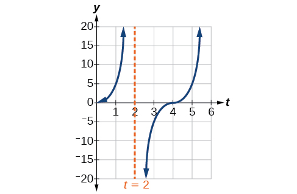
ⓒ periode: setelah 1 detik, sinar telah berpindah 5 kaki dari titik di seberang mobil polisi.
Persamaan Utama
Fungsi tangen yang digeser, dimampatkan, dan/atau diregangkan
fungsi sekan yang digeser, dimampatkan, dan/atau diregangkan
Fungsi kosekan yang digeser, dimampatkan, dan/atau diregangkan
Fungsi kotangen yang digeser, dimampatkan, dan/atau diregangkan
Konsep Utama
Fungsi tangen memiliki periode
merupakan fungsi tangen dengan peregangan/pemampatan dan pergeseran vertikal dan/atau horizontal. Lihat rujukan, rujukan, dan rujukan.
Sekan dan kosekan keduanya merupakan fungsi periodik dengan periode memberikan grafik fungsi sekan yang digeser, dimampatkan, dan/atau diregangkan. Lihat rujukan dan rujukan.
memberikan grafik fungsi kosekan yang digeser, dimampatkan, dan/atau diregangkan. Lihat rujukan dan rujukan.
Fungsi kotangen memiliki periode dan asimtot vertikal di
range kotangen adalah dan fungsinya menurun di setiap titik dalam rentangnya.
Kotangen bernilai nol pada
adalah kotangen dengan peregangan/pemampatan dan pergeseran vertikal dan/atau horizontal. Lihat rujukan dan rujukan.
Skenario dunia nyata dapat diselesaikan menggunakan grafik fungsi trigonometri. Lihat rujukan.
Latihan Bagian
Verbal
Jelaskan bagaimana grafik fungsi sinus dapat digunakan untuk membuat grafik
Penyelesaian
Karena adalah fungsi resiprokal dari Anda dapat memplot resiprokal koordinat-koordinat pada grafik untuk memperoleh koordinat y dari Titik potong sumbu x pada grafik adalah asimtot vertikal untuk grafik
Bagaimana grafik digunakan untuk membuat grafik
Jelaskan mengapa periode sama dengan
Penyelesaian
Jawaban dapat bervariasi. Dengan lingkaran satuan, dapat ditunjukkan bahwa
Mengapa tidak ada intersep pada grafik
Bagaimana periode dibandingkan dengan periode
Penyelesaian
Periodenya sama:
Aljabar
Untuk latihan berikut, cocokkan setiap fungsi trigonometri dengan salah satu grafik berikut.
Penyelesaian
IV
Penyelesaian
III
Untuk latihan berikut, tentukan periode dan pergeseran horizontal dari masing-masing fungsi.
Penyelesaian
periode: 8; pergeseran horizontal: 1 satuan ke kiri
Untuk latihan berikut, evaluasi fungsi yang diubah.
Jika tentukan
Penyelesaian
1.5
Jika tentukan
Jika tentukan
Penyelesaian
5
Jika tentukan
Untuk latihan berikut, tulis ulang setiap ekspresi sehingga argumen positif.
Penyelesaian
Grafis
Untuk latihan berikut, buat sketsa dua periode grafik setiap fungsi. Tentukan faktor peregangan, periode, dan asimtotnya.
Penyelesaian
faktor peregangan: 2; periode: asimtot:
Penyelesaian
faktor peregangan: 6; periode: 6; asimtot:
Penyelesaian
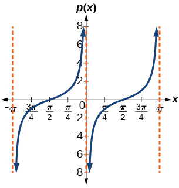
faktor peregangan: 1; periode: asimtot:
Penyelesaian
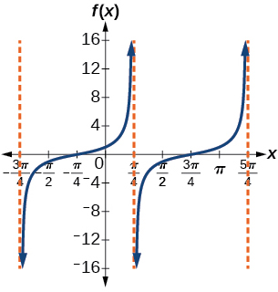
faktor peregangan: 1; periode: asimtot:
Penyelesaian
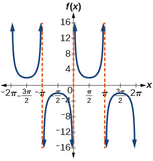
faktor peregangan: 2; periode: asimtot:
Penyelesaian
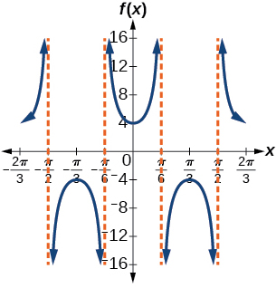
faktor peregangan: 4; periode: asimtot:
Penyelesaian
faktor peregangan: 7; periode: asimtot:
Penyelesaian
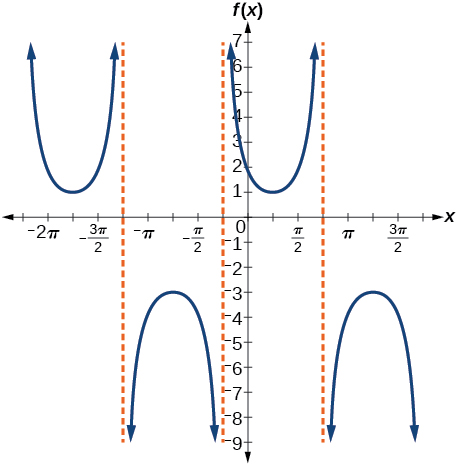
faktor peregangan: 2; periode: asimtot:
Penyelesaian
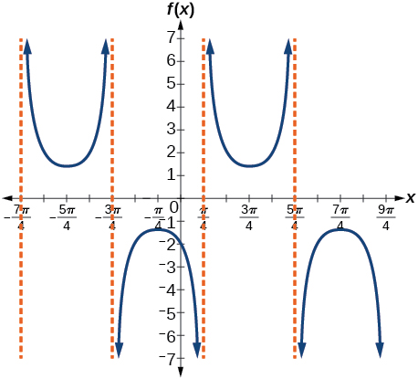
faktor peregangan: periode: asimtot:
Untuk latihan berikut, tentukan dan gambarkan dua periode fungsi periodik dengan faktor peregangan yang diberikan, periode, dan pergeseran fase.
Kurva tangen, periode dan pergeseran fase
Penyelesaian
Kurva tangen, periode dan pergeseran fase
Untuk latihan berikut, carilah persamaan grafik setiap fungsi.
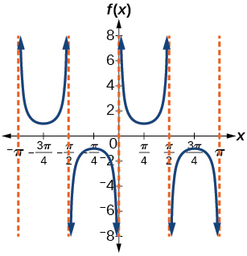
Penyelesaian
Penyelesaian
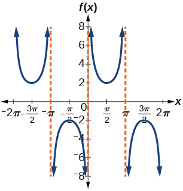
Penyelesaian
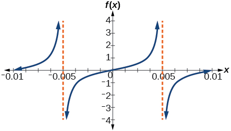
Penyelesaian
Teknologi
Untuk latihan berikut, gunakan kalkulator grafik untuk membuat grafik dua periode dari fungsi yang diberikan. Catatan: sebagian besar kalkulator grafik tidak memiliki tombol kosekan; oleh karena itu, Anda perlu memasukkan sebagai
Penyelesaian
Penyelesaian
Gambarkan grafik Apa fungsi yang ditunjukkan pada grafik?
Penyelesaian
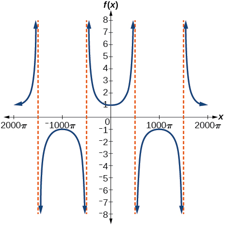
Penyelesaian
Penerapan Dunia Nyata
Fungsi menandai jarak pergerakan berkas cahaya dari mobil polisi melintasi dinding dalam waktu dalam hitungan detik, dan jarak
dalam satuan kaki.
ⓐ Grafik pada interval
ⓑ Tentukan dan tafsirkan faktor peregangan, periode, dan asimtotnya.
ⓒ Hitung dan dan bahas nilai fungsi pada masukan-masukan tersebut.
Seorang nelayan yang berdiri di tepi danau melihat sebuah perahu jauh di sebelah kirinya. Misalkan diukur dalam radian, yaitu sudut yang dibentuk oleh garis pandang kapal dan garis ke arah utara dari posisinya. Asumsikan arah utara adalah 0 dan diukur negatif ke kiri dan positif ke kanan. (Lihat rujukan.) Perahu bergerak dari arah barat ke timur dan, dengan mengabaikan kelengkungan bumi, jaraknya dari nelayan ke perahu, dalam kilometer, diberikan oleh fungsi
ⓐApakah domain yang wajar untuk
ⓑGambarkan grafik di domain ini.
ⓒTemukan dan diskusikan arti dari setiap asimtot vertikal pada grafik
ⓓHitung dan tafsirkan Bulatkan hingga dua tempat desimal.
ⓔHitung dan tafsirkan Bulatkan hingga dua tempat desimal.
ⓕBerapa jarak minimum antara nelayan dan perahu? Kapan hal ini terjadi?
Penyelesaian
ⓐ
ⓑ
ⓒ dan jaraknya bertambah tanpa batas mendekat —yakni, pada sudut siku-siku terhadap garis yang menunjukkan arah utara, perahu akan berada begitu jauh sehingga nelayan tidak dapat melihatnya;
ⓓ3; ketika perahu berjarak 3 km;
ⓔ 1.73; ketika perahu berjarak sekitar 1.73 km;
ⓕ 1.5 km; ketika
Pengukur jarak laser mengunci sebuah komet yang mendekati Bumi. Jarak komet setelah hari, untuk dalam interval 0 hingga 30 hari, diberikan oleh
ⓐ Gambarkan grafik pada interval
ⓑ Hitung
dan tafsirkan informasinya.
ⓒ Berapa jarak minimum antara komet dan Bumi? Kapan hal ini terjadi? Konstanta manakah dalam persamaan yang berhubungan dengan hal ini?
ⓓ Temukan dan diskusikan arti dari setiap asimtot vertikal.
Sebuah kamera video diarahkan pada roket di landasan peluncuran yang berjarak 2 mil dari kamera. Sudut elevasi dari tanah ke roket setelah detik adalah
ⓐTulis fungsi yang menyatakan ketinggian roket di atas tanah, dalam mil, setelah detik. Abaikan kelengkungan bumi.
ⓑGambarkan grafik pada interval
ⓒHitung dan tafsirkan nilai dan
ⓓApa yang terjadi pada nilai ketika
mendekati 60 detik? Tafsirkan makna ini dari sudut pandang masalahnya.
Penyelesaian
ⓐ
ⓑ
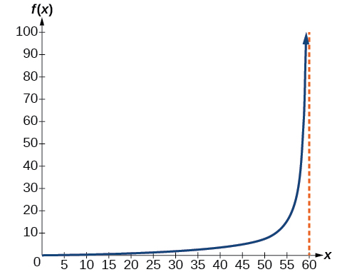
ⓒ setelah 0 detik, roket berada 0 mil di atas tanah; setelah 30 detik, tinggi roket mencapai 2 mil;
ⓓKetika mendekati 60 detik, nilai tumbuh semakin besar. Jarak ke roket semakin jauh sehingga kamera tidak dapat lagi melacaknya.
Bab 6 · Urutan sumber 41 · m49390
Fungsi Trigonometri Invers
Untuk setiap segitiga siku-siku, jika diketahui satu sudut lain dan panjang salah satu sisinya, kita dapat mengetahui berapa sudut dan sisi lainnya. Namun bagaimana jika kita hanya diberikan dua sisi pada sebuah segitiga siku-siku? Kita memerlukan prosedur yang mengarahkan kita dari perbandingan sisi ke sudut. Di sinilah gagasan tentang invers fungsi trigonometri berperan. Di bagian ini, kita akan menjelajahi fungsi trigonometri invers.
Memahami dan Menggunakan Fungsi Sinus, Kosinus, dan Tangen Invers
Untuk menggunakan fungsi trigonometri invers, kita perlu memahami bahwa fungsi trigonometri invers “membalikkan” tindakan fungsi trigonometri asal, sama seperti fungsi lain dan inversnya. Dengan kata lain, domain fungsi invers adalah range fungsi asal dan sebaliknya, sebagaimana dirangkum dalam rujukan.
Misalnya, jika maka kita menulis Perhatikan bahwa tidak berarti Contoh berikut menggambarkan fungsi trigonometri invers:
Karena maka
Karena maka
Karena maka
Pada bagian-bagian sebelumnya, kita menghitung fungsi trigonometri pada berbagai sudut, tetapi kadang-kadang kita perlu mengetahui sudut yang menghasilkan nilai sinus, kosinus, atau tangen tertentu. Untuk itu diperlukan fungsi invers. Ingatlah bahwa, untuk fungsi satu-ke-satu, jika maka fungsi invers memenuhi
Perlu diingat bahwa fungsi sinus, kosinus, dan tangen bukan fungsi satu-ke-satu. Grafik setiap fungsi tidak lulus uji garis horizontal. Bahkan, tidak ada fungsi periodik yang dapat bersifat satu-ke-satu karena setiap keluaran dalam range-nya berkaitan dengan sedikitnya satu masukan pada setiap periode, sedangkan jumlah periodenya tak terhingga. Seperti fungsi lain yang tidak satu-ke-satu, kita perlu membatasi domain dari setiap fungsi untuk menghasilkan fungsi baru yang bersifat satu-ke-satu. Kita memilih domain setiap fungsi yang mencakup bilangan 0. rujukan menunjukkan grafik fungsi sinus yang dibatasi dan grafik fungsi kosinus dibatasi
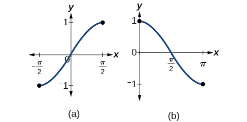
(a) Fungsi sinus pada domain terbatas (b) Fungsi kosinus pada domain terbatas
rujukan menunjukkan grafik fungsi tangen yang dibatasi pada
Fungsi tangen pada domain terbatas
Pilihan konvensional untuk domain terbatas ini agak arbitrer, tetapi mempunyai karakteristik penting dan berguna. Setiap domain mencakup titik asal dan beberapa nilai positif; yang terpenting, setiap domain menghasilkan fungsi satu-ke-satu yang memiliki invers. Pilihan konvensional untuk domain terbatas fungsi tangen juga memiliki sifat berguna, yaitu membentang dari satu asimtot vertikal ke asimtot berikutnya, alih-alih terbagi menjadi dua bagian oleh sebuah asimtot.
Pada domain terbatas ini, kita dapat mendefinisikan fungsi trigonometri invers.
fungsi sinus invers artinya Fungsi sinus invers kadang-kadang disebut fungsi arkus sinus fungsi, dan dinotasikan
fungsi kosinus invers artinya Fungsi kosinus invers kadang-kadang disebut fungsi arkus kosinus fungsi, dan dinotasikan
fungsi tangen invers artinya Fungsi tangen invers kadang-kadang disebut fungsi arkus tangen fungsi, dan dinotasikan
Grafik fungsi invers ditunjukkan pada rujukan, rujukan, dan rujukan. Perhatikan bahwa keluaran setiap fungsi invers ini adalah bilangan, sudut dalam ukuran radian. Kita melihat bahwa memiliki domain dan range memiliki domain dan range dan memiliki domain semua bilangan real dan range Untuk menemukan domain dan range fungsi trigonometri invers dengan mempertukarkan domain dan range fungsi asal. Setiap grafik fungsi trigonometri invers merupakan pencerminan grafik fungsi asal terhadap garis
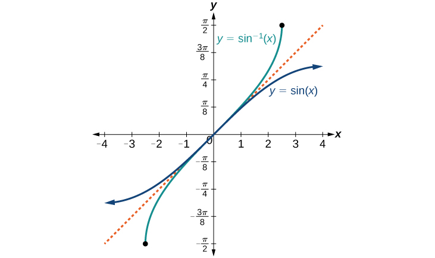
Fungsi sinus dan fungsi sinus invers (atau arkus sinus)
Fungsi kosinus dan fungsi kosinus invers (atau arkus kosinus)
Fungsi tangen dan fungsi tangen invers (atau arkus tangen)
Menulis Relasi untuk Fungsi Invers
Diketahui tuliskan relasi yang melibatkan invers sinus.
Penyelesaian
Gunakan relasi untuk sinus invers. Jika maka .
Dalam soal ini, dan
Menentukan Nilai Eksak Ekspresi yang Melibatkan Fungsi Sinus, Kosinus, dan Tangen Invers
Setelah dapat mengidentifikasi fungsi invers, kita akan belajar mengevaluasinya. Untuk sebagian besar nilai dalam domainnya, fungsi trigonometri invers harus dievaluasi dengan kalkulator, interpolasi dari tabel, atau teknik numerik lain. Seperti pada fungsi trigonometri asal, kita dapat memberikan nilai eksak fungsi invers ketika menggunakan sudut istimewa, khususnya (30°), (45°), dan (60°), dan refleksinya ke kuadran lain.
Mengevaluasi Fungsi Trigonometri Invers untuk Nilai Masukan Khusus
Hitung nilai setiap ekspresi berikut.
ⓐ
ⓑ
ⓒ
ⓓ
Penyelesaian
ⓐ Mengevaluasi sama dengan menentukan sudut yang mempunyai nilai sinus sebesar Dengan kata lain, sudut berapakah memenuhi Ada beberapa nilai yang akan memenuhi hubungan ini, seperti dan tetapi kita memerlukan sudut dalam interval jadi jawabannya Ingatlah bahwa invers adalah sebuah fungsi, jadi untuk setiap masukan, kita akan mendapatkan tepat satu keluaran.
ⓑ Untuk mengevaluasi kita mengetahui bahwa dan keduanya memiliki nilai sinus tetapi tidak ada satu pun yang berada dalam interval Untuk itu, kita memerlukan sudut negatif yang koterminal dengan
ⓒUntuk mengevaluasi kita mencari sudut pada interval dengan nilai kosinus Sudut yang memenuhi ini adalah
ⓓ Mengevaluasi kita mencari sudut pada interval dengan nilai tangen 1. Sudut yang benar adalah
Menggunakan Kalkulator untuk Mengevaluasi Fungsi Trigonometri Invers
Untuk mengevaluasi fungsi trigonometri invers yang tidak melibatkan sudut istimewa yang telah dibahas, kita perlu menggunakan kalkulator atau teknologi lain. Sebagian besar kalkulator ilmiah dan aplikasi kalkulator memiliki tombol khusus untuk fungsi sinus, kosinus, dan tangen invers. Tombol-tombol itu dapat berlabel, misalnya, SIN
, ARCSIN, atau ASIN.
Pada bab sebelumnya, kita mempelajari trigonometri pada segitiga siku-siku untuk menyelesaikan sisi-sisi segitiga jika diberi satu sisi dan tambahan sudut. Dengan menggunakan fungsi trigonometri invers, kita dapat mencari sudut suatu segitiga siku-siku jika terdapat dua sisi, dan kita dapat menggunakan kalkulator untuk mencari nilai hingga beberapa tempat desimal.
Dalam contoh dan latihan ini, jawabannya akan diartikan sebagai sudut dan kita akan menggunakan sebagai variabel independen. Nilai yang ditampilkan pada kalkulator mungkin dalam derajat atau radian, jadi pastikan untuk mengatur mode yang sesuai dengan aplikasi.
Mengevaluasi Sinus Invers dengan Kalkulator
Hitung menggunakan kalkulator.
Penyelesaian
Karena keluaran fungsi invers berupa sudut, kalkulator akan memberi kita nilai derajat jika dalam mode derajat dan nilai radian jika dalam mode radian. Kalkulator juga menggunakan batasan domain yang sama pada sudut seperti yang kita gunakan.
Dalam mode radian, Dalam mode derajat, Perhatikan bahwa dalam kalkulus dan seterusnya kita akan menggunakan radian di hampir semua kasus.
Karena kita mengetahui sisi miring dan sisi yang berdekatan dengan sudut, masuk akal jika kita menggunakan fungsi kosinus.
Menentukan Nilai Eksak Fungsi Komposit dengan Fungsi Trigonometri Invers
Ada kalanya kita perlu mengomposisikan fungsi trigonometri dengan fungsi trigonometri invers. Dalam kasus tersebut, nilai eksak ekspresi yang dihasilkan biasanya dapat ditentukan tanpa kalkulator. Bahkan ketika masukan fungsi komposit berupa variabel atau ekspresi, bentuk keluarannya sering dapat ditentukan. Untuk membedakan berbagai kasus, misalkan dan adalah dua fungsi trigonometri berbeda dalam himpunan , serta misalkan dan adalah inversnya.
Mengevaluasi Komposisi Berbentuk f(f−1(y)) dan f−1(f(x))
Untuk fungsi trigonometri apa pun, untuk semua dalam domain yang sesuai bagi fungsi tersebut. Hal ini mengikuti definisi invers dan fakta bahwa range didefinisikan identik dengan domain Namun, kita harus sedikit lebih berhati-hati dengan ekspresi bentuk
Menggunakan Fungsi Trigonometri Invers
Hitung nilai berikut:
ⓐ
ⓑ
ⓒ
ⓓ
Penyelesaian
ⓐ jadi
ⓑ tapi jadi
ⓒ jadi
ⓓ tapi karena kosinus merupakan fungsi genap.
jadi
Mengevaluasi Komposisi Berbentuk f−1(g(x))
Setelah dapat mengomposisikan fungsi trigonometri dengan inversnya, kita dapat mempelajari cara mengevaluasi komposisi suatu fungsi trigonometri dengan invers fungsi trigonometri lain. Kita mulai dengan komposisi berbentuk Untuk nilai khusus kita dapat mengevaluasi fungsi bagian dalam dengan tepat dan kemudian fungsi invers bagian luar. Namun, kita dapat menemukan pendekatan yang lebih umum dengan mempertimbangkan hubungan antara dua sudut lancip pada segitiga siku-siku yang salah satunya berada membuat yang lain Perhatikan sinus dan kosinus setiap sudut segitiga siku-siku di rujukan.
Segitiga siku-siku yang menggambarkan hubungan kofungsi
Karena kita punya jika Jika tidak berada dalam domain ini, maka kita perlu mencari sudut lain yang kosinusnya sama dengan dan termasuk dalam domain terbatas; kemudian kita mengurangkan sudut ini dari Demikian pula, jadi jika Ini hanyalah hubungan fungsi-kofungsi yang disajikan dengan cara lain.
Mengevaluasi Komposisi Sinus Invers dengan Kosinus
Hitung
ⓐdengan evaluasi langsung.
ⓑ dengan metode yang dijelaskan sebelumnya.
Penyelesaian
ⓐ Di sini kita bisa langsung mengevaluasi bagian dalam komposisinya.
Sekarang, kita dapat mengevaluasi fungsi invers seperti yang kita lakukan sebelumnya.
ⓑ Kita memiliki dan
Mengevaluasi Komposisi Berbentuk f(g−1(x))
Untuk mengevaluasi komposisi berbentuk dengan dan adalah dua fungsi sinus, kosinus, atau tangen dan adalah masukan apa pun dalam domain kita memiliki rumus eksak, misalnya Jika diperlukan, rumus-rumus ini dapat diturunkan dari hubungan trigonometri antara sudut dan sisi segitiga siku-siku, bersama dengan hubungan Pythagoras antara panjang sisi-sisinya. Kita dapat menggunakan identitas Pythagoras, untuk menentukan yang satu jika yang lain diketahui. Kita juga dapat menggunakan fungsi trigonometri invers untuk menemukan komposisi yang melibatkan ekspresi aljabar.
Mengevaluasi Komposisi Sinus dengan Kosinus Invers
Tentukan nilai eksak
Penyelesaian
Dari fungsi bagian dalam, misalkan ada sudut yang memenuhi yang artinya dan kita mencari Kita dapat menggunakan identitas Pythagoras untuk melakukan ini.
Karena berada di kuadran I, harus positif, jadi solusinya Lihat rujukan.
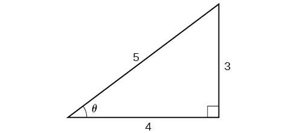
Segitiga siku-siku yang menunjukkan bahwa jika maka
Kita mengetahui bahwa kosinus invers selalu menghasilkan sudut pada interval jadi kita tahu bahwa sinus sudut itu pasti positif; oleh karena itu
Mengevaluasi Komposisi Sinus dengan Tangen Invers
Tentukan nilai eksak
Penyelesaian
Meskipun kita bisa menggunakan teknik serupa seperti pada rujukan, di sini kita akan menunjukkan teknik lain. Dari fungsi bagian dalam, kita mengetahui bahwa ada sudut yang memenuhi Kita dapat membayangkannya sebagai sisi berhadapan dan berdekatan pada segitiga siku-siku, seperti ditunjukkan pada rujukan.
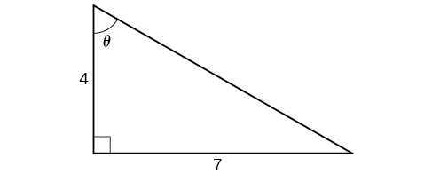
Segitiga siku-siku yang dua sisinya diketahui
Dengan menggunakan Teorema Pythagoras, kita dapat mencari sisi miring segitiga ini.
Sekarang, kita dapat menghitung sinus sudut sebagai sisi berlawanan dibagi sisi miring.
Ini memberi kita komposisi yang kita inginkan.
Menentukan Kosinus dari Sinus Invers suatu Ekspresi Aljabar
Tentukan bentuk sederhana untuk untuk
Penyelesaian
Kita mengetahui bahwa ada sudut sedemikian sehingga
Karena kita tahu bahwa sinus invers harus memberikan sudut pada interval kita dapat menyimpulkan bahwa kosinus sudut tersebut pasti positif.
Konsep Utama
Fungsi invers adalah fungsi yang “membalikkan” tindakan fungsi lain. Domain fungsi invers adalah range fungsi asal, sedangkan range fungsi invers adalah domain fungsi asal.
Karena fungsi trigonometri tidak satu-ke-satu pada domain alaminya, fungsi trigonometri invers didefinisikan pada domain terbatas.
Untuk fungsi trigonometri apa pun jika maka Namun, hanya menyiratkan jika berada dalam domain terbatas Lihat rujukan.
Sudut istimewa adalah keluaran fungsi trigonometri invers untuk nilai masukan khusus; misalnya, Lihat rujukan.
Kalkulator akan mengembalikan sudut dalam domain terbatas dari fungsi trigonometri asli. Lihat rujukan.
Fungsi invers memungkinkan kita mencari sudut jika diketahui dua sisi segitiga siku-siku. Lihat rujukan.
Dalam komposisi fungsi, jika fungsi di dalamnya merupakan fungsi trigonometri invers, maka terdapat ekspresi eksak; misalnya, Lihat rujukan.
Jika fungsi di dalamnya adalah fungsi trigonometri, maka kombinasi yang mungkin hanyalah jika dan jika Lihat rujukan dan rujukan.
Saat mengevaluasi komposisi fungsi trigonometri dengan fungsi trigonometri invers, gambarlah segitiga acuan untuk membantu menentukan perbandingan sisi-sisi yang mewakili keluaran fungsi trigonometri. Lihat rujukan.
Saat mengevaluasi komposisi fungsi trigonometri dengan fungsi trigonometri invers, Anda dapat menggunakan identitas trigonometri untuk membantu menentukan perbandingan sisi. Lihat rujukan.
Latihan Bagian
Verbal
Mengapa fungsi dan memiliki range yang berbeda?
Penyelesaian
Fungsi bersifat satu-ke-satu pada sehingga interval ini merupakan range fungsi invers Fungsi bersifat satu-ke-satu pada sehingga interval ini merupakan range fungsi invers
Karena fungsi dan saling invers, mengapa tidak sama dengan
Jelaskan makna
Penyelesaian
adalah ukuran radian sudut antara dan yang sinusnya 0.5.
Sebagian besar kalkulator tidak memiliki tombol untuk mengevaluasi Jelaskan bagaimana hal ini dapat dilakukan dengan menggunakan fungsi kosinus atau fungsi kosinus invers.
Mengapa domain fungsi sinus, dibatasi agar fungsi sinus invers ada?
Penyelesaian
Agar suatu fungsi memiliki invers, fungsi tersebut harus satu-ke-satu dan lulus uji garis horizontal. Fungsi sinus biasa tidak satu-ke-satu kecuali domainnya dibatasi. Para matematikawan telah bersepakat untuk membatasi fungsi sinus pada interval agar fungsi tersebut satu-ke-satu dan memiliki invers.
Diskusikan mengapa pernyataan ini salah: untuk semua
Tentukan apakah pernyataan berikut ini benar atau salah dan jelaskan jawaban Anda:
Penyelesaian
Benar. Sudut yang sama dengan , dengan , merupakan sudut kuadran II dengan sudut acuan , dengan sama dengan , dengan . Karena adalah sudut acuan bagi , berlaku dan = -
Aljabar
Untuk latihan berikut, hitunglah nilai ekspresi.
Penyelesaian
Penyelesaian
Penyelesaian
Penyelesaian
Untuk latihan berikut, gunakan kalkulator untuk mengevaluasi setiap ekspresi. Nyatakan jawaban ke perseratus terdekat.
Penyelesaian
1.98
Penyelesaian
0.93
Penyelesaian
1.41
Untuk latihan berikut, carilah sudut pada segitiga siku-siku yang diberikan. Bulatkan jawaban ke perseratus terdekat.
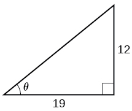
Penyelesaian
0.56 radian
Untuk latihan berikut, carilah nilai eksaknya, jika memungkinkan, tanpa kalkulator. Jika tidak memungkinkan, jelaskan alasannya.
Penyelesaian
0
Penyelesaian
0.71
Penyelesaian
-0.71
Penyelesaian
Penyelesaian
0.8
Penyelesaian
Untuk latihan berikut, tentukan nilai eksak ekspresi dalam bentuk
dengan bantuan segitiga referensi.
Penyelesaian
Penyelesaian
Penyelesaian
Pengayaan
Untuk latihan berikut, evaluasi ekspresi tanpa menggunakan kalkulator. Berikan nilai eksak.
Untuk latihan berikut, carilah fungsi jika
Penyelesaian
Penyelesaian
Penyelesaian
Grafis
Gambarkan grafik dan sebutkan domain dan range fungsinya.
Gambarkan grafik dan sebutkan domain dan range fungsinya.
Penyelesaian
domain range
Gambarkan satu siklus dan sebutkan domain dan range fungsinya.
Untuk nilai berapakah Gunakan kalkulator grafik untuk memperkirakan jawabannya.
Penyelesaian
kira-kira
Untuk nilai berapakah Gunakan kalkulator grafik untuk memperkirakan jawabannya.
Penerapan Dunia Nyata
Misalkan sebuah tangga setinggi 13 kaki bersandar pada sebuah bangunan, mencapai bagian bawah jendela lantai dua yang berjarak 12 kaki di atas tanah. Berapa sudut dalam radian yang dibentuk tangga terhadap bangunan?
Penyelesaian
0.395 radian
Misalkan Anda berkendara sejauh 0.6 mil di jalan sehingga jarak vertikal berubah dari 0 menjadi 150 kaki. Berapakah sudut elevasi jalan tersebut?
Sebuah segitiga sama kaki memiliki dua sisi yang kongruen dengan panjang 9 inci. Sisi sisanya memiliki panjang 8 inci. Temukan sudut yang dibuat oleh sisi 9 inci dengan sisi 8 inci.
Penyelesaian
1.11 radian
Tanpa menggunakan kalkulator, perkirakan nilai Jelaskan mengapa jawaban Anda masuk akal.
Rangka (struktur balok interior) untuk atap rumah dibuat dari dua segitiga siku-siku yang identik. Masing-masing memiliki alas 12 kaki dan tinggi 4 kaki. Temukan ukuran sudut lancip yang berdekatan dengan sisi 4 kaki.
Penyelesaian
1.25 radian
Garis melewati titik asal pada bidang x,y. Berapakah besar sudut yang dibentuk garis tersebut terhadap arah positif sumbu x?
Garis melewati titik asal pada bidang x,y. Berapakah besar sudut yang dibentuk garis tersebut terhadap arah negatif sumbu x?
Penyelesaian
0.405 radian
Berapa persentase kemiringan suatu jalan jika sudut elevasi jalan adalah 4 derajat? (Persentase kemiringan didefinisikan sebagai perubahan ketinggian jalan pada jarak horizontal 100 kaki. Misalnya kemiringan 5% berarti jalan meningkat 5 kaki untuk setiap jarak horizontal 100 kaki.)
Sebuah tangga setinggi 20 kaki disandarkan pada sisi sebuah bangunan sehingga kaki tangga berjarak 10 kaki dari dasar bangunan. Jika spesifikasi mengharuskan sudut elevasi tangga antara 35 dan 45 derajat, apakah penempatan tangga tersebut memenuhi spesifikasi keselamatan?
Penyelesaian
Tidak. Sudut yang dibuat tangga terhadap horizontal adalah 60 derajat.
Misalkan sebuah tangga setinggi 15 kaki bersandar pada sisi sebuah rumah sehingga sudut elevasi tangga tersebut adalah 42 derajat. Berapa jarak kaki tangga dari samping rumah?
Untuk latihan berikut, gambarkan fungsi selama dua periode dan tentukan amplitudo atau faktor peregangan, periode, persamaan garis tengah, dan asimtotnya.
Penyelesaian
amplitudo: 3; periode: garis tengah: tidak ada asimtot
Penyelesaian
amplitudo: 3; periode: garis tengah: tidak ada asimtot
Penyelesaian
amplitudo: 3; periode: garis tengah: tidak ada asimtot
Penyelesaian
amplitudo: 6; periode: garis tengah: tidak ada asimtot
Untuk latihan berikut, gambarkan fungsi selama dua periode dan tentukan amplitudo atau faktor peregangan, periode,
persamaan garis tengah, dan asimtotnya.
Penyelesaian
faktor peregangan: tidak ada; periode: garis tengah: asimtot: dengan adalah bilangan bulat
Penyelesaian
faktor peregangan: 3; periode: garis tengah: asimtot: dengan adalah bilangan bulat
Untuk latihan berikut, buatlah grafik dua periode penuh. Tentukan periode, pergeseran fase, amplitudo, dan asimtotnya.
Penyelesaian
amplitudo: tidak ada; periode: tidak ada pergeseran fase; asimtot: dengan adalah bilangan bulat ganjil
Penyelesaian
amplitudo: tidak ada; periode: tidak ada pergeseran fase; asimtot: dengan adalah bilangan bulat
Penyelesaian
amplitudo: tidak ada; periode: tidak ada pergeseran fase; asimtot: dengan adalah bilangan bulat
Untuk latihan berikut, gunakan skenario ini: Populasi suatu kota meningkat dan menurun dalam interval 20 tahun. Populasinya dapat dimodelkan dengan fungsi berikut: dengan domain berupa banyaknya tahun sejak 1980 dan range berupa populasi kota.
Berapa populasi terbesar dan terkecil yang mungkin dimiliki kota ini?
Penyelesaian
terbesar: 20,000; terkecil: 4,000
Gambarkan fungsi pada domain .
Berapa amplitudo, periode, dan pergeseran fase untuk fungsi tersebut?
Penyelesaian
amplitudo: 8,000; periode: 10; pergeseran fase: 0
Dalam domain ini, kapan populasi mencapai 18,000? 13,000?
Berapa perkiraan jumlah penduduk pada tahun 2007? 2010?
Penyelesaian
Pada 2007, populasi yang diprediksi adalah 4,413. Pada 2010, populasinya menjadi 11,924.
Untuk latihan berikut, misalkan sebuah beban diikat pada pegas dan bergerak naik turun secara simetris.
Misalkan grafik fungsi perpindahan ditunjukkan pada rujukan, dengan sumbu x menyatakan waktu dalam detik dan sumbu y menyatakan perpindahan dalam inci. Berikan persamaan yang memodelkan perpindahan vertikal beban pada pegas.
Pada waktu = 0, berapakah perpindahan beban tersebut?
Penyelesaian
5 inci.
Pada waktu berapa perpindahan dari titik setimbang sama dengan nol?
Berapa waktu yang diperlukan agar beban kembali ke ketinggian awal 5 inci? Dengan kata lain, berapa periode fungsi perpindahannya?
Untuk latihan berikut, carilah nilai eksaknya tanpa bantuan kalkulator.
Penyelesaian
Penyelesaian
Penyelesaian
Penyelesaian
Tidak ada solusi
Penyelesaian
Gambarkan grafik dan pada interval dan jelaskan pengamatan apa pun.
Penyelesaian
Grafiknya tidak simetris terhadap garis Grafik-grafik tersebut simetris terhadap sumbu .
Gambarkan grafik dan dan jelaskan pengamatan apa pun.
Gambarkan fungsi pada interval dan bandingkan grafiknya dengan grafik pada interval yang sama. Jelaskan pengamatan apa pun.
Penyelesaian
Grafiknya tampak identik.
Tes Latihan Bab
Untuk latihan berikut, buat sketsa grafik setiap fungsi untuk dua periode penuh. Tentukan amplitudo, periode, dan persamaan garis tengahnya.
Penyelesaian
amplitudo: 0.5; periode: garis tengah
Penyelesaian
amplitudo: 5; periode: garis tengah:
Penyelesaian
amplitudo: 1; periode: garis tengah:
Penyelesaian
amplitudo: 3; periode: garis tengah:
Penyelesaian
amplitudo: tidak ada; periode: garis tengah: asimtot: dengan adalah bilangan bulat
Penyelesaian
amplitudo: tidak ada; periode: garis tengah: asimtot: dengan adalah bilangan bulat
Penyelesaian
amplitudo: tidak ada; periode: garis tengah:
Untuk latihan berikut, tentukan amplitudo, periode, dan garis tengah grafik, lalu cari rumus fungsinya.
Berikan dalam bentuk fungsi sinus.
Berikan dalam bentuk fungsi sinus.
Penyelesaian
amplitudo: 2; periode: 2; garis tengah:
Berikan dalam bentuk fungsi tangen.
Untuk latihan berikut, carilah amplitudo, periode, pergeseran fase, dan garis tengah.
Penyelesaian
amplitudo: 1; periode: 12; pergeseran fase: garis tengah
Suhu luar sepanjang hari dapat dimodelkan sebagai fungsi sinusoidal. Misalkan suhu pada tengah malam adalah 68°F, sedangkan suhu tertinggi dan terendah pada hari itu masing-masing adalah 80°F dan 56°F. Dengan menganggap menyatakan jumlah jam sejak tengah malam, tentukan fungsi suhu sebagai fungsi
Penyelesaian
Air dipompa ke dalam bak penyimpanan dan keluar dengan laju periodik. Kedalaman air mencapai nilai terendah 3 kaki pada pukul 2:00 dini hari dan nilai tertinggi 71 kaki setiap 5 jam. Tuliskan fungsi kosinus yang memodelkan kedalaman air sebagai fungsi waktu, lalu gambarkan fungsi itu untuk satu periode.
Untuk latihan berikut, tentukan periode dan pergeseran horizontal setiap fungsi.
Penyelesaian
periode: pergeseran horizontal:
Tuliskan persamaan grafik di rujukan dalam bentuk fungsi sekan serta berikan periode dan pergeseran fasenya.
Penyelesaian
periode: 2; pergeseran fase: 0
Jika tentukan
Jika tentukan
Penyelesaian
Untuk latihan berikut, buat grafik fungsi pada jendela yang ditentukan dan jawab pertanyaannya.
Gambarkan grafik pada jendela tampilan dengan Perkirakan periode grafik.
Gambarkan grafik pada domain berikut di dan Misalkan fungsi ini memodelkan gelombang suara. Mengapa pandangan ini terlihat sangat berbeda?
Penyelesaian
Pandangannya berbeda karena periode gelombangnya Pada domain yang lebih besar, akan ada lebih banyak siklus grafik.
Gambarkan grafik pada dan jelaskan pengamatan apa pun.
Untuk latihan berikut, misalkan
Berapa nilai terbesar yang mungkin untuk
Penyelesaian
Berapa nilai terkecil yang mungkin untuk
Pada bagian mana fungsi meningkat dalam interval
Penyelesaian
Pada interval perkiraan
Untuk latihan berikut, cari dan buat grafik satu periode fungsi periodik dengan amplitudo, periode, dan pergeseran fase tertentu.
Kurva sinus dengan amplitudo 3, periode dan pergeseran fase
Kurva kosinus dengan amplitudo 2, periode dan pergeseran fase
Penyelesaian
Untuk latihan berikut, buat grafik fungsinya. Jelaskan grafiknya dan, jika memungkinkan, setiap perilaku periodik, amplitudo, asimtot, atau titik yang tidak terdefinisi.
Penyelesaian
Grafik ini periodik dengan periode
Untuk latihan berikut, carilah nilai eksaknya.
Penyelesaian
Penyelesaian
Penyelesaian
Penyelesaian
Untuk latihan berikut, misalkan
Evaluasilah ekspresi berikut.
Penyelesaian
Diketahui rujukan, carilah besar sudut hingga tiga angka desimal. Jawab dalam radian.
Untuk latihan berikut, tentukan apakah persamaan tersebut benar atau salah.
Penyelesaian
Salah
Kemiringan suatu jalan adalah 7%. Artinya untuk setiap jarak horizontal 100 kaki di jalan, kenaikan vertikalnya adalah 7 kaki. Tentukan sudut jalan terhadap garis horizontal dalam radian.
Penyelesaian
sekitar 0.07 radian
arkus kosinus
nama lain dari kosinus invers;
arkus sinus
nama lain dari sinus invers;
arkus tangen
nama lain untuk tangen invers;
fungsi kosinus invers fungsi yang merupakan invers fungsi kosinus, yaitu sudut yang kosinusnya sama dengan bilangan yang diberikan
fungsi sinus invers fungsi yang merupakan invers fungsi sinus, yaitu sudut yang sinusnya sama dengan bilangan yang diberikan
fungsi tangen invers fungsi yang merupakan invers fungsi tangen, yaitu sudut yang tangennya sama dengan bilangan yang diberikan
Bab 7 · Urutan sumber 42 · m49392
Pengantar Identitas dan Persamaan Trigonometri
Gelombang sinus memodelkan gangguan. (kredit: modifikasi karya Mikael Altemark, Flickr).
Matematika ada di mana-mana, bahkan di tempat yang mungkin tidak langsung kita kenali. Misalnya, hubungan matematis menggambarkan transmisi gambar, cahaya, dan suara. Grafik sinusoidal pada gambar di atas memodelkan musik yang diputar melalui telepon, radio, atau komputer. Grafik seperti itu dideskripsikan menggunakan persamaan dan fungsi trigonometri. Dalam bab ini, kita membahas cara memanipulasi persamaan trigonometri secara aljabar dengan menerapkan berbagai rumus dan identitas trigonometri. Kita juga akan menyelidiki beberapa cara penggunaan persamaan trigonometri untuk memodelkan fenomena kehidupan nyata.
Bab 7 · Urutan sumber 43 · m49393
Menyederhanakan dan Memverifikasi Identitas Trigonometri
Paspor internasional dan dokumen perjalanan
Dalam film spionase, kita melihat mata-mata internasional membawa beberapa paspor yang masing-masing menyatakan identitas berbeda. Namun, kita tahu bahwa semua paspor itu mewakili orang yang sama. Identitas trigonometri bekerja serupa dengan paspor-paspor tersebut—ekspresi trigonometri yang sama dapat dinyatakan dengan berbagai cara. Sebagaimana mata-mata memilih paspor Italia ketika bepergian ke Italia, kita memilih identitas yang sesuai dengan situasi yang diberikan ketika menyelesaikan persamaan trigonometri.
Pada bagian ini, kita mulai mempelajari identitas trigonometri dasar, termasuk cara memverifikasinya dan menggunakannya untuk menyederhanakan ekspresi trigonometri.
Memverifikasi Identitas Trigonometri Dasar
Identitas memungkinkan kita menyederhanakan ekspresi yang rumit. Identitas merupakan alat dasar trigonometri untuk menyelesaikan persamaan trigonometri, sebagaimana pemfaktoran, penentuan penyebut yang sama, dan penggunaan rumus khusus merupakan alat dasar untuk menyelesaikan persamaan aljabar. Kita terus menggunakan teknik aljabar untuk menyederhanakan ekspresi trigonometri. Sifat dan rumus dasar aljabar, seperti rumus selisih kuadrat dan rumus kuadrat sempurna, menyederhanakan pekerjaan yang melibatkan ekspresi dan persamaan trigonometri. Kita telah mengetahui bahwa semua fungsi trigonometri saling berkaitan karena semuanya didefinisikan berdasarkan lingkaran satuan. Oleh karena itu, setiap identitas trigonometri dapat ditulis dalam berbagai bentuk.
Untuk memverifikasi identitas trigonometri, kita biasanya memulai dari ruas persamaan yang lebih rumit, lalu menulis ulang ekspresinya hingga berubah menjadi ekspresi yang sama dengan ruas lainnya. Kadang-kadang kita perlu memfaktorkan atau mengembangkan ekspresi, mencari penyebut yang sama, atau menggunakan strategi aljabar lain untuk memperoleh hasil yang diinginkan. Pada bagian pertama ini, kita akan menggunakan identitas dasar: Identitas Pythagoras, identitas genap-ganjil, identitas resiprokal, dan identitas hasil bagi.
Kita akan mulai dengan Identitas Pythagoras (lihat rujukan), yaitu persamaan yang melibatkan fungsi trigonometri berdasarkan sifat-sifat segitiga siku-siku. Kita telah melihat dan menggunakan identitas pertama, tetapi sekarang kita juga akan menggunakan identitas-identitas lainnya.
Identitas Pythagoras
Identitas kedua dan ketiga dapat diperoleh dengan memanipulasi identitas pertama. Identitas diperoleh dengan menulis ulang ruas kiri persamaan dalam bentuk sinus dan kosinus.
Buktikan:
Demikian juga, dapat diperoleh dengan cara serupa, yaitu menulis ulang ruas kiri identitas ini dalam bentuk sinus dan kosinus. Hasilnya adalah
Kelompok identitas dasar berikutnya adalah identitas genap-ganjil. identitas genap-ganjil menghubungkan nilai fungsi trigonometri pada suatu sudut dengan nilai fungsi tersebut pada sudut yang berlawanan, serta menentukan apakah fungsinya ganjil atau genap. (Lihat rujukan).
Identitas Genap-Ganjil
Ingatlah bahwa fungsi ganjil memenuhi untuk semua dalam domain Fungsi sinus merupakan fungsi ganjil karena Grafik fungsi ganjil simetris terhadap titik asal. Sebagai contoh, perhatikan pasangan masukan dan Nilai keluaran untuk merupakan lawan dari nilai keluaran untuk Jadi,
Grafik fungsi genap simetris terhadap sumbu-y. Fungsi kosinus merupakan fungsi genap karena
Sebagai contoh, perhatikan pasangan masukan dan Nilai keluaran untuk sama dengan nilai keluaran untuk Jadi,
Untuk semua dalam domain fungsi sinus dan kosinus secara berturut-turut, kita dapat menyatakan hal berikut:
Karena sinus merupakan fungsi ganjil.
Karena kosinus merupakan fungsi genap.
Identitas genap-ganjil lainnya mengikuti sifat genap dan ganjil fungsi sinus dan kosinus. Sebagai contoh, perhatikan identitas tangen, Tangen sudut negatif dapat kita tafsirkan sebagai Oleh karena itu, tangen merupakan fungsi ganjil, yang berarti bahwa untuk semua dalam domain fungsi tangen.
Identitas kotangen, juga mengikuti identitas sinus dan kosinus. Kotangen sudut negatif dapat kita tafsirkan sebagai Oleh karena itu, kotangen merupakan fungsi ganjil, yang berarti bahwa untuk semua dalam domain fungsi kotangen.
Fungsi kosekan merupakan resiprokal fungsi sinus, sehingga kosekan sudut negatif ditafsirkan sebagai Oleh karena itu, fungsi kosekan merupakan fungsi ganjil.
Terakhir, fungsi sekan merupakan resiprokal fungsi kosinus, dan sekan sudut negatif ditafsirkan sebagai Oleh karena itu, fungsi sekan merupakan fungsi genap.
Singkatnya, hanya dua fungsi trigonometri, yaitu kosinus dan sekan, yang merupakan fungsi genap. Empat fungsi lainnya merupakan fungsi ganjil; hal ini memverifikasi identitas genap-ganjil.
Kelompok identitas dasar berikutnya adalah identitas resiprokal, yang sesuai namanya menghubungkan fungsi-fungsi trigonometri yang saling resiprokal. Lihat rujukan.
Identitas Resiprokal
Kelompok identitas terakhir adalah identitas hasil bagi, yang mendefinisikan hubungan di antara fungsi-fungsi trigonometri tertentu dan sangat membantu untuk memverifikasi identitas lain. Lihat rujukan.
Identitas Hasil Bagi
Identitas resiprokal dan identitas hasil bagi diturunkan dari definisi fungsi-fungsi trigonometri dasar.
Menggambar Grafik Kedua Ekspresi dalam Suatu Identitas
Gambarkan kedua ruas identitas Dengan kata lain, pada kalkulator grafik, gambarkan dan
Kita hanya melihat satu grafik karena kedua ekspresi menghasilkan gambar yang sama; satu grafik bertumpuk tepat di atas yang lain. Ini merupakan cara yang baik untuk mengonfirmasi identitas yang telah diverifikasi secara analitis. Jika kedua ekspresi menghasilkan grafik yang sama, kemungkinan besar keduanya merupakan identitas.
Memverifikasi Identitas Trigonometri
Verifikasi
Penyelesaian
Kita akan mulai dari sisi kiri, karena itu adalah sisi yang lebih rumit:
Analisis
Identitas ini cukup mudah diverifikasi karena kita hanya perlu menulis dalam hal dan
Memverifikasi Kesetaraan dengan Identitas Genap-Ganjil
Verifikasi kesetaraan berikut menggunakan identitas genap-ganjil:
Penyelesaian
Dengan mengolah ruas kiri persamaan, kita memperoleh
Memverifikasi identitas trigonometri yang melibatkan sec2θ
Memverifikasi identitas
Penyelesaian
Karena sisi kiri lebih rumit, mari kita mulai dari sana.
Ada lebih dari satu cara untuk memverifikasi identitas. Ada kemungkinan lain. Sekali lagi, kita bisa mulai dari sisi kiri.
Analisis
Dalam metode pertama, kita menggunakan identitas lalu melanjutkan penyederhanaan. Pada metode kedua, kita memisahkan pecahan dengan menempatkan setiap suku pembilang di atas penyebut yang sama. Masalah ini menunjukkan bahwa terdapat beberapa cara untuk memverifikasi identitas. Sedikit kreativitas kadang-kadang dapat menyederhanakan prosedur. Selama substitusinya benar, jawabannya akan sama.
Membuat dan Memverifikasi Identitas
Buat identitas untuk ekspresi dengan menulis ulang secara ketat dalam hal sinus.
Penyelesaian
Ada beberapa cara untuk memulai, tetapi di sini kita akan menggunakan identitas hasil bagi dan resiprokal untuk menulis ulang ekspresi:
Jadi,
Memverifikasi Identitas dengan Aljabar dan Identitas Genap-Ganjil
Verifikasi identitas:
Penyelesaian
Mari kita mulai dari sisi kiri dan menyederhanakan:
Memverifikasi Identitas yang Melibatkan Kosinus dan Kotangen
Verifikasi identitas:
Penyelesaian
Kita akan bekerja di sisi kiri persamaan.
Menggunakan Aljabar untuk Menyederhanakan Ekspresi Trigonometri
Kita telah melihat bahwa aljabar sangat penting untuk memverifikasi identitas trigonometri, dan sama pentingnya untuk menyederhanakan ekspresi trigonometri sebelum penyelesaian. Keakraban dengan sifat dan rumus dasar aljabar, seperti rumus selisih kuadrat, rumus kuadrat sempurna, atau substitusi, akan menyederhanakan pekerjaan yang melibatkan ekspresi dan persamaan trigonometri.
Misalnya, persamaan mirip dengan persamaan yang menggunakan bentuk terfaktor dari selisih kuadrat. Penggunaan aljabar membuat pencarian solusi menjadi langsung dan akrab. Kita dapat menyamakan setiap faktor dengan nol lalu menyelesaikannya. Ini merupakan salah satu contoh pengenalan pola aljabar dalam ekspresi atau persamaan trigonometri.
Contoh lain adalah rumus selisih kuadrat, yang banyak digunakan dalam berbagai bidang di luar matematika, seperti teknik, arsitektur, dan fisika. Kita juga dapat membuat identitas sendiri dengan terus mengembangkan suatu ekspresi dan melakukan substitusi yang sesuai. Penggunaan sifat dan rumus aljabar membuat banyak persamaan trigonometri lebih mudah dipahami dan diselesaikan.
Menulis Ekspresi Trigonometri sebagai Ekspresi Aljabar
Tulislah ekspresi trigonometri berikut sebagai ekspresi aljabar:
Penyelesaian
Perhatikan bahwa pola yang ditampilkan memiliki bentuk yang sama dengan ekspresi kuadrat standar, Dengan memisalkan kita bisa menulis ulang ungkapan sebagai berikut:
Ekspresi ini dapat difaktorkan menjadi Jika ekspresi itu disamakan dengan nol dan kita ingin menyelesaikan persamaannya, kita akan menggunakan sifat faktor nol dan menyelesaikan setiap faktor untuk Pada titik ini, kita akan menggantikan dengan dan menyelesaikan untuk
Menulis Ulang Ekspresi Trigonometri Menggunakan Selisih Kuadrat
Tulis ulang ekspresi trigonometri:
Penyelesaian
Perhatikan bahwa koefisien maupun ekspresi trigonometri pada suku pertama dikuadratkan, dan kuadrat bilangan 1 adalah 1. Ini merupakan selisih kuadrat. Jadi,
Analisis
Jika ekspresi ini ditulis sebagai persamaan yang disamakan dengan nol, kita dapat menyelesaikan setiap faktor menggunakan sifat faktor nol. Kita juga dapat menggunakan substitusi seperti pada masalah sebelumnya dengan memisalkan menulis ulang ungkapan sebagai dan memfaktorkan Kemudian ganti dengan lalu menyelesaikan sudutnya.
Menyederhanakan dengan Menulis Ulang dan Menggunakan Substitusi
Sederhanakan ekspresi dengan menulis ulang dan menggunakan identitas:
Penyelesaian
Kita bisa mulai dengan identitas Pythagoras.
Sekarang kita dapat menyederhanakan dengan mensubstitusikan sebagai pengganti Kita memperoleh
Persamaan Utama
Identitas Pythagoras
Identitas Genap-Ganjil
Identitas Resiprokal
Identitas Hasil Bagi
Konsep Utama
Ada beberapa cara untuk mewakili ekspresi trigonometri. Memverifikasi identitas menunjukkan bagaimana ekspresi dapat ditulis ulang untuk menyederhanakan masalah.
Menggambar grafik kedua ruas identitas akan memverifikasinya. Lihat rujukan.
Menyederhanakan satu sisi persamaan untuk sama dengan sisi lain adalah metode lain untuk memverifikasi identitas. Lihat rujukan dan rujukan.
Pendekatan untuk memverifikasi identitas bergantung pada bentuk identitas tersebut. Sering kali berguna untuk memulai dari ruas persamaan yang lebih rumit. Lihat rujukan.
Kita bisa menciptakan identitas dengan menyederhanakan ekspresi dan kemudian memverifikasinya. Lihat rujukan.
Memverifikasi identitas mungkin melibatkan aljabar dengan identitas dasar. Lihat rujukan dan rujukan.
Teknik aljabar dapat digunakan untuk menyederhanakan ekspresi trigonometri. Teknik ini digunakan di seluruh buku karena mencakup aturan-aturan dasar matematika. Lihat rujukan, rujukan, dan rujukan.
Latihan Bagian
Verbal
Kita mengetahui bahwa adalah fungsi genap, dan dan merupakan fungsi ganjil. Bagaimana dengan dan ? Apakah keduanya genap, ganjil, atau bukan keduanya? Mengapa?
Penyelesaian
Ketiga fungsi, , , dan merupakan fungsi genap.
Ini karena dan
Periksa grafik dari pada interval Bagaimana kita bisa tahu apakah fungsi itu genap atau ganjil hanya dengan mengamati grafik dari
Setelah memeriksa identitas resiprokal untuk jelaskan mengapa fungsi tersebut tidak terdefinisi pada titik-titik tertentu.
Penyelesaian
Ketika maka yang tidak terdefinisi.
Semua Identitas Pythagoras saling berkaitan. Jelaskan cara memanipulasi persamaan untuk beralih dari ke bentuk-bentuk lainnya.
Aljabar
Untuk latihan berikut, gunakan identitas dasar untuk menyederhanakan ekspresi sepenuhnya.
Penyelesaian
Penyelesaian
Penyelesaian
Penyelesaian
Penyelesaian
Penyelesaian
Untuk latihan berikut, sederhanakan ekspresi trigonometri pertama dengan menuliskan bentuk sederhananya dalam bentuk ekspresi kedua.
Penyelesaian
Penyelesaian
Penyelesaian
Penyelesaian
Penyelesaian
Penyelesaian
Untuk latihan berikut, periksa identitasnya.
Penyelesaian
Jawaban dapat bervariasi. Contoh pembuktian:
Penyelesaian
Jawaban dapat bervariasi. Contoh pembuktian:
Penyelesaian
Jawaban dapat bervariasi. Contoh pembuktian:
Pengayaan
Untuk latihan berikut, buktikan atau sangkal identitas tersebut.
Penyelesaian
Salah
Penyelesaian
Salah
Penyelesaian
Dibuktikan dengan identitas negatif dan Identitas Pythagoras
Untuk latihan berikut, tentukan apakah identitas tersebut benar atau salah. Jika salah, carilah ekspresi ekuivalen yang sesuai.
Penyelesaian
Benar
identitas genap-ganjil
himpunan persamaan yang melibatkan fungsi trigonometri sedemikian sehingga jika identitasnya ganjil, dan jika identitasnya genap
Identitas Pythagoras
himpunan persamaan yang melibatkan fungsi trigonometri berdasarkan sifat segitiga siku-siku
identitas hasil bagi
pasangan identitas berdasarkan fakta bahwa tangen adalah rasio sinus terhadap kosinus, sedangkan kotangen adalah rasio kosinus terhadap sinus
identitas resiprokal
himpunan persamaan yang melibatkan resiprokal dari definisi-definisi trigonometri dasar
Bab 7 · Urutan sumber 44 · m49395
Identitas Jumlah dan Selisih
Denali, yang secara resmi dinamai Gunung McKinley oleh pemerintah federal, menjulang 20.237 kaki (6.168 m) di atas permukaan laut di Taman Nasional Denali, Alaska. Denali adalah puncak tertinggi di Amerika Utara. (Kredit: Daniel A. Leifheit, Flickr)
Bagaimana ketinggian gunung dapat diukur? Bagaimana dengan jarak Bumi ke Matahari? Seperti banyak masalah yang tampaknya mustahil, kita mengandalkan rumus matematika untuk memperoleh jawaban. Identitas trigonometri, yang lazim digunakan dalam pembuktian matematika, telah diterapkan di dunia nyata selama berabad-abad, termasuk untuk menghitung jarak yang sangat jauh.
Identitas trigonometri yang akan kita pelajari dalam bagian ini dapat ditelusuri hingga seorang astronom Persia yang hidup sekitar tahun 950 M. Namun, bangsa Yunani kuno telah menemukan rumus yang sama jauh sebelumnya dan menyatakannya dalam bentuk tali busur. Identitas-identitas ini merupakan persamaan atau postulat khusus yang benar untuk setiap nilai masukan dan memiliki tak terhitung banyak penerapan.
Di bagian ini, kita akan mempelajari teknik yang akan memungkinkan kita memecahkan masalah seperti yang diungkapkan di atas. Rumus berikut akan menyederhanakan banyak ekspresi trigonometri dan persamaan. Perlu diingat bahwa, di seluruh bagian ini, istilah rumus digunakan secara sinonim dengan kata identitas.
Menggunakan Rumus Jumlah dan Selisih untuk Kosinus
Menemukan nilai eksak dari sinus, kosinus, atau tangen sudut sering lebih mudah jika kita dapat menulis ulang sudut yang diberikan dalam hal dua sudut yang memiliki nilai trigonometri yang diketahui. Kita bisa menggunakan sudut khusus, yang dapat kita lihat di lingkaran satuan yang ditunjukkan di rujukan.
Lingkaran Satuan
Kita akan mulai dengan rumus jumlah dan selisih untuk kosinus, sehingga kita dapat mencari kosinus suatu sudut dengan menguraikan sudut tersebut menjadi jumlah atau selisih dua sudut khusus. Lihat rujukan.
Rumus jumlah untuk kosinus
Rumus selisih untuk kosinus
Pertama, kita akan membuktikan rumus selisih untuk kosinus. Mari kita pertimbangkan dua titik pada lingkaran satuan. Lihat rujukan. Titik membentuk sudut dari arah positif sumbu x dengan koordinat dan titik membentuk sudut dari arah positif sumbu x dengan koordinat Perhatikan ukuran sudut adalah
Beri label pada dua titik lagi: pada sudut dari arah positif sumbu x dengan koordinat dan titik dengan koordinat Segitiga merupakan hasil rotasi dari segitiga dan dengan demikian jarak dari ke adalah sama dengan jarak dari ke
Kita bisa menemukan jarak dari ke menggunakan rumus jarak.
Kemudian kita menerapkan Identitas Pythagoras dan menyederhanakannya.
Demikian pula, menggunakan rumus jarak kita dapat menemukan jarak dari ke
Dengan menerapkan Identitas Pythagoras dan menyederhanakannya, diperoleh:
Karena kedua jarak sama, kita menyamakannya lalu menyederhanakan.
Akhirnya kita mengurangi dari kedua sisi dan membagi kedua sisi dengan
Jadi, kita telah memperoleh rumus selisih untuk kosinus. Cara serupa dapat digunakan untuk menurunkan kosinus jumlah dua sudut.
Menentukan Nilai Eksak dengan Rumus Kosinus Selisih Dua Sudut
Menggunakan rumus untuk kosinus selisih dua sudut, temukan nilai eksak dari
Penyelesaian
Gunakan rumus kosinus selisih dua sudut. Kita peroleh
Menentukan Nilai Eksak dengan Rumus Kosinus Jumlah Dua Sudut
Temukan nilai eksak dari
Penyelesaian
Karena kita bisa mengevaluasi sebagai Jadi,
Menggunakan Rumus Jumlah dan Selisih untuk Sinus
Rumus jumlah dan selisih untuk sinus dapat diturunkan dengan cara yang sama seperti rumus kosinus, dan bentuknya serupa dengan rumus-rumus tersebut.
Menggunakan Identitas Jumlah dan Selisih untuk Menghitung Selisih Sudut
Gunakan identitas jumlah dan selisih untuk menghitung selisih sudut dan tunjukkan bahwa bagian a sama dengan bagian b.
ⓐ
ⓑ
Penyelesaian
ⓐ Mari kita mulai dengan menulis rumus dan mensubstitusikan sudut-sudut yang diberikan.
Selanjutnya, kita perlu menemukan nilai ekspresi trigonometri.
Sekarang kita bisa mengganti nilai-nilai ini ke dalam persamaan dan menyederhanakan.
ⓑ Sekali lagi, kita menulis rumus dan menggantikan sudut yang diberikan.
Selanjutnya, kita menemukan nilai ekspresi trigonometri.
Sekarang kita bisa mengganti nilai-nilai ini ke dalam persamaan dan menyederhanakan.
Menentukan Nilai Eksak Ekspresi yang Melibatkan Fungsi Trigonometri Invers
Temukan nilai eksak dari
Penyelesaian
Pola yang ditampilkan dalam masalah ini adalah Misalkan dan Lalu kita bisa menulis
Kita akan menggunakan identitas Pythagoras untuk menemukan dan
Dengan menggunakan rumus jumlah untuk sinus,
Menggunakan Rumus jumlah dan selisih untuk tangen
Menentukan nilai eksak tangen jumlah atau selisih dua sudut sedikit lebih rumit, tetapi sekali lagi, kuncinya adalah mengenali pola.
Penurunan rumus tangen jumlah dua sudut dilakukan dengan membagi rumus jumlah sinus dengan rumus jumlah kosinus lalu menyederhanakannya. Ingat,
Mari kita turunkan rumus jumlah untuk tangen.
Kita bisa mendapatkan rumus selisih untuk tangen dengan cara yang sama.
Menentukan Nilai Eksak Ekspresi yang Melibatkan Tangen
Temukan nilai eksak dari
Penyelesaian
Mula-mula tulis rumus jumlah untuk tangen, lalu substitusikan kedua sudut yang diberikan ke dalam rumus.
Selanjutnya, tentukan nilai masing-masing tangen dalam rumus:
Jadi, diperoleh
Menentukan Beberapa Jumlah dan Selisih Sudut
Diberi tentukan
ⓐ
ⓑ
ⓒ
ⓓ
Penyelesaian
Rumus jumlah dan selisih dapat digunakan untuk menentukan jumlah atau selisih sudut jika rasio sinus, kosinus, atau tangen setiap sudut diketahui. Untuk itu, kita membuat segitiga acuan guna menentukan setiap komponen dalam rumus jumlah dan selisih.
ⓐ Untuk menentukan kita mulai dengan dan Sisi di hadapan sudut panjangnya 3, hipotenusanya panjang 5, dan berada di kuadran pertama. Lihat rujukan. Dengan Teorema Pythagoras, kita dapat menentukan panjang sisi
Karena dan sisi yang berdekatan dengan sudut adalah hipotenusanya panjang 13, dan berada di kuadran ketiga. Lihat rujukan. Sekali lagi, dengan menggunakan Teorema Pythagoras, diperoleh
Karena berada di kuadran ketiga,
Langkah selanjutnya adalah menemukan kosinus dari dan sinus dari Kosinus dari adalah sisi samping dibagi hipotenusa. Nilainya dapat ditentukan dari segitiga pada rujukan: Kita juga bisa menemukan sinus dari dari segitiga di rujukan, sebagai perbandingan sisi depan terhadap hipotenusa: Sekarang kita siap untuk mengevaluasi
ⓑ Kita bisa menemukan dengan cara yang sama. Kita menggantikan nilai sesuai dengan rumus.
ⓒ Untuk jika dan Lalu
Jika dan
Lalu
Lalu,
ⓓ Untuk menentukan kita sudah memiliki nilai-nilai yang diperlukan. Kita dapat mensubstitusikannya dan menghitung hasilnya.
Analisis
Kesalahan umum ketika menangani masalah seperti ini adalah bahwa kita mungkin tergoda untuk berpikir bahwa dan merupakan sudut-sudut dalam segitiga yang sama, padahal tentu saja bukan. Perhatikan juga bahwa
Menggunakan Rumus Jumlah dan Selisih untuk Kofungsi
Setelah dapat menentukan fungsi sinus, kosinus, dan tangen untuk jumlah dan selisih sudut, kita dapat melakukan hal yang sama untuk kofungsinya. Anda mungkin ingat dari Trigonometri Segitiga Siku-Siku bahwa jika jumlah dua sudut positif adalah kedua sudut itu saling berkomplemen; jumlah dua sudut lancip dalam segitiga siku-siku adalah sehingga kedua sudut itu juga saling berkomplemen. Pada rujukan, perhatikan bahwa jika salah satu sudut lancip diberi label sudut lancip lainnya harus diberi label
Perhatikan juga bahwa adalah sisi depan dibagi hipotenusa. Jadi, jika dua sudut saling berkomplemen, kita dapat mengatakan bahwa sinus sama dengan kofungsi dari komplemen dari Demikian juga, tangen dan kotangen adalah kofungsi, dan sekan dan kosekan adalah kofungsi.
Dari hubungan ini terbentuk identitas kofungsi.
Perhatikan bahwa rumus dalam tabel juga dapat dibuktikan secara aljabar menggunakan rumus jumlah dan selisih. Misalnya, dengan menggunakan
Kita bisa menulis
Menentukan Kofungsi yang Bernilai Sama dengan Ekspresi yang Diberikan
Tuliskan dalam hal kofungsi.
Penyelesaian
Kofungsi dari Jadi,
Menggunakan Rumus Jumlah dan Selisih untuk Memverifikasi Identitas
Memverifikasi identitas berarti menunjukkan bahwa persamaan berlaku untuk semua nilai variabel. Sebaiknya kita menguasai identitas-identitas tersebut atau menyediakan daftarnya ketika mengerjakan soal. Meninjau aturan umum dari Menyederhanakan dan Memverifikasi Identitas Trigonometri dapat membantu menyederhanakan proses verifikasi identitas.
Memverifikasi Identitas yang Melibatkan Sinus
Verifikasilah identitas
Penyelesaian
Ruas kiri persamaan memuat sinus jumlah dan selisih sudut.
Kita bisa menulis ulang masing-masing menggunakan rumus jumlah dan selisih.
Kita melihat bahwa identitas telah diverifikasi.
Memverifikasi Identitas yang Melibatkan Tangen
Verifikasi identitas berikut.
Penyelesaian
Kita dapat mulai dengan menulis ulang pembilang di sisi kiri persamaan.
Identitas tersebut telah diverifikasi. Dalam banyak kasus, identitas tangen dapat diverifikasi dengan menulis tangen dalam bentuk sinus dan kosinus.
Menggunakan Rumus Jumlah dan Selisih untuk Menyelesaikan Masalah Penerapan
Misalkan dan menyatakan dua garis tak vertikal yang berpotongan, dan misalkan menunjukkan sudut akut antara dan Lihatlah rujukan. Tunjukkan bahwa
di mana dan merupakan gradien dari dan secara berturut-turut. (Petunjuk: Gunakan fakta bahwa dan )
Penyelesaian
Dengan rumus selisih untuk tangen, masalah ini tidak sesulit yang tampak.
Mengkaji Masalah Kawat Penyangga
Untuk sebuah dinding panjat, kawat penyangga dipasang pada ketinggian 47 kaki di sebuah tiang vertikal. Penyangga tambahan diberikan oleh kawat penyangga lain dipasang 40 kaki di atas tanah pada tiang yang sama. Jika kedua kawat ditambatkan ke tanah sejauh 50 kaki dari tiang, tentukan sudut di antara kedua kawat. Lihat rujukan.
Penyelesaian
Pertama, mari kita rangkum informasi dari diagram. Karena hanya sisi-sisi yang mengapit sudut siku-siku yang diketahui, kita dapat menggunakan fungsi tangen. Perhatikan bahwa dan Kita kemudian bisa menggunakan rumus selisih untuk tangen.
Dengan mensubstitusikan nilai-nilai yang diketahui ke dalam rumus, diperoleh
Gunakan sifat distributif, lalu sederhanakan fungsi-fungsinya.
Sekarang kita bisa menghitung sudut dalam derajat.
Analisis
Kadang-kadang, ketika suatu penerapan melibatkan segitiga siku-siku, kita mungkin mengira bahwa penyelesaiannya cukup dengan menerapkan Teorema Pythagoras. Anggapan itu mungkin sebagian benar, tetapi jawabannya bergantung pada apa yang ditanyakan dan informasi yang diberikan.
Persamaan Utama
Rumus Jumlah untuk Kosinus
Rumus Selisih untuk Kosinus
Rumus Jumlah untuk Sinus
Rumus Selisih untuk Sinus
Rumus Jumlah untuk Tangen
Rumus Selisih untuk Tangen
Identitas kofungsi
Konsep Utama
Rumus jumlah untuk kosinus menyatakan bahwa kosinus jumlah dua sudut sama dengan hasil kali kosinus kedua sudut dikurangi hasil kali sinus kedua sudut. Rumus selisih untuk kosinus menyatakan bahwa kosinus selisih dua sudut sama dengan hasil kali kosinus kedua sudut ditambah hasil kali sinus kedua sudut.
Rumus jumlah dan selisih dapat digunakan untuk menemukan nilai-nilai eksak dari sinus, kosinus, atau tangen sudut. Lihat rujukan dan rujukan.
Rumus jumlah untuk sinus menyatakan bahwa sinus jumlah dua sudut sama dengan hasil kali sinus sudut pertama dan kosinus sudut kedua ditambah hasil kali kosinus sudut pertama dan sinus sudut kedua. Rumus selisih untuk sinus menyatakan bahwa sinus selisih dua sudut sama dengan hasil kali sinus sudut pertama dan kosinus sudut kedua dikurangi hasil kali kosinus sudut pertama dan sinus sudut kedua. Lihat rujukan.
Rumus jumlah dan selisih untuk sinus dan kosinus juga dapat digunakan pada fungsi trigonometri invers. Lihat rujukan.
Rumus jumlah untuk tangen menyatakan bahwa tangen jumlah dua sudut sama dengan jumlah tangen kedua sudut dibagi 1 dikurangi hasil kali tangen kedua sudut. Rumus selisih untuk tangen menyatakan bahwa tangen selisih dua sudut sama dengan selisih tangen kedua sudut dibagi 1 ditambah hasil kali tangen kedua sudut. Lihat rujukan.
Teorema Pythagoras bersama rumus jumlah dan selisih dapat digunakan untuk menentukan beberapa jumlah dan selisih sudut. Lihat rujukan.
Identitas kofungsi berlaku untuk sudut komplementer dan pasangan fungsi resiprokal. Lihat rujukan.
Rumus jumlah dan selisih berguna untuk memverifikasi identitas. Lihat rujukan dan rujukan.
Masalah penerapan sering lebih mudah diselesaikan dengan rumus jumlah dan selisih. Lihat rujukan dan rujukan.
Latihan Bagian
Verbal
Jelaskan dasar identitas kofungsi dan kapan identitas tersebut berlaku.
Penyelesaian
Identitas kofungsi berlaku untuk sudut komplementer. Jika salah satu dari dua sudut lancip pada segitiga siku-siku berukuran ukuran sudut kedua Lalu Hal yang sama berlaku untuk identitas kofungsi lainnya. Kuncinya adalah bahwa sudut-sudut itu saling melengkapi.
Apakah hanya ada satu cara untuk mengevaluasi Jelaskan cara menyusun penyelesaian dengan dua cara berbeda, lalu hitunglah untuk memastikan bahwa keduanya memberikan jawaban yang sama.
Jelaskan kepada seseorang yang lupa sifat genap-ganjil fungsi sinusoidal bagaimana rumus jumlah dan selisih dapat menentukan sifat ini untuk dan (Petunjuk: )
Penyelesaian
sehingga merupakan fungsi ganjil. sehingga merupakan fungsi genap.
Aljabar
Untuk latihan berikut, carilah nilai eksaknya.
Penyelesaian
Penyelesaian
Penyelesaian
Untuk latihan berikut, tulis ulang dalam bentuk dan
Penyelesaian
Penyelesaian
Untuk latihan berikut, sederhanakan ekspresi yang diberikan.
Penyelesaian
Penyelesaian
Penyelesaian
Untuk latihan berikut, tentukan informasi yang diminta.
Mengingat bahwa dan dengan dan keduanya dalam interval tentukan dan
Mengingat bahwa dan dengan dan keduanya dalam interval tentukan dan
Penyelesaian
Untuk latihan berikut, carilah nilai eksak dari setiap ekspresi.
Penyelesaian
Grafis
Untuk latihan berikut, sederhanakan ekspresinya, lalu gambarkan kedua ekspresi sebagai fungsi untuk memverifikasi bahwa grafiknya identik.
Penyelesaian
Penyelesaian
Penyelesaian
Penyelesaian
Untuk latihan berikut, gunakan grafik untuk menentukan apakah kedua fungsi sama atau berbeda. Jika sama, tunjukkan alasannya. Jika berbeda, ganti fungsi kedua dengan fungsi yang identik dengan fungsi pertama. (Petunjuk: pikirkan
)
,
Penyelesaian
Mereka sama.
,
Penyelesaian
Mereka berbeda, cobalah
,
,
Penyelesaian
Mereka sama.
,
,
Penyelesaian
Mereka berbeda, cobalah
,
,
Penyelesaian
Mereka berbeda, cobalah
Teknologi
Untuk latihan berikut, carilah nilai eksaknya secara aljabar, lalu konfirmasikan jawaban dengan kalkulator hingga empat tempat desimal.
Penyelesaian
Penyelesaian
atau 0.9659
Pengayaan
Untuk latihan berikut, buktikan identitas yang diberikan.
Penyelesaian
Penyelesaian
Penyelesaian
Untuk latihan berikut, buktikan atau sangkal pernyataan-pernyataan tersebut.
Penyelesaian
Benar
Jika dan merupakan sudut-sudut dalam segitiga yang sama, buktikan atau sangkal
Penyelesaian
Benar. Perhatikan bahwa dan uraikan ruas kanan.
Jika dan merupakan sudut-sudut dalam segitiga yang sama, buktikan atau sangkal
Bab 7 · Urutan sumber 45 · m49396
Rumus Sudut Rangkap, Setengah Sudut, dan Penurunan Pangkat
Landasan sepeda untuk pengendara mahir memiliki kemiringan lebih curam daripada landasan yang dirancang untuk pemula.
Landasan sepeda untuk kompetisi (lihat rujukan) harus memiliki ketinggian yang berbeda sesuai tingkat keterampilan peserta. Untuk peserta mahir, sudut antara landasan dan tanah harus sedemikian sehingga Untuk pemula, sudut tersebut dibagi dua. Berapakah kemiringan landasan bagi pemula? Pada bagian ini, kita akan mempelajari tiga kategori identitas tambahan yang dapat digunakan untuk menjawab pertanyaan semacam ini.
Menggunakan Rumus Sudut Rangkap untuk Menentukan Nilai Eksak
Pada bagian sebelumnya, kita menggunakan rumus jumlah dan selisih untuk fungsi trigonometri. Sekarang kita meninjau kembali rumus-rumus tersebut. Rumus sudut rangkap merupakan kasus khusus rumus jumlah, dengan Penurunan rumus sudut rangkap sinus dimulai dari rumus jumlah,
Jika kita misalkan maka diperoleh
Penurunan rumus sudut rangkap untuk kosinus memberi kita tiga bentuk. Pertama, mulai dari rumus penjumlahan, dan dengan memisalkan diperoleh
Dengan menggunakan identitas Pythagoras, kita dapat mengembangkan rumus sudut rangkap untuk kosinus ini dan memperoleh dua bentuk lain. Bentuk pertama adalah:
Bentuk kedua adalah:
Demikian pula, untuk menurunkan rumus sudut rangkap bagi tangen, gantikan dalam rumus penjumlahan sehingga diperoleh
Menggunakan Rumus Sudut Rangkap untuk Menentukan Nilai Eksak yang Melibatkan Tangen
Mengingat bahwa dan terletak di kuadran II, tentukan hal-hal berikut:
ⓐ
ⓑ
ⓒ
Penyelesaian
Jika kita menggambar segitiga yang merepresentasikan informasi tersebut, kita dapat menentukan nilai-nilai yang diperlukan untuk menyelesaikan soal pada gambar. Diketahui dengan berada di kuadran II. Tangen suatu sudut sama dengan perbandingan sisi di hadapan sudut terhadap sisi sampingnya, dan karena berada di kuadran II, sisi samping berada pada sumbu x dan bernilai negatif. Gunakan Teorema Pythagoras untuk menentukan panjang hipotenusa:
Sekarang kita bisa menggambar segitiga mirip dengan yang ditunjukkan di rujukan.
ⓐMari kita mulai dengan menulis rumus sudut rangkap untuk sinus.
Kita perlu menentukan dan Berdasarkan rujukan, terlihat bahwa hipotenusanya sama dengan 5, sehingga dan Substitusikan nilai-nilai ini ke dalam persamaan, lalu sederhanakan.
Jadi,
ⓑ Tuliskan rumus sudut rangkap untuk kosinus.
Sekali lagi, substitusikan nilai sinus dan kosinus ke dalam persamaan, lalu sederhanakan.
ⓒ Tuliskan rumus sudut rangkap untuk tangen.
Dalam rumus ini, kita memerlukan nilai tangen yang telah diketahui, yaitu Substitusikan nilai ini ke dalam persamaan, lalu sederhanakan.
Menggunakan Rumus Sudut Rangkap untuk Kosinus tanpa Nilai Eksak
Gunakan rumus sudut rangkap untuk kosinus guna menulis dalam bentuk
Penyelesaian
Analisis
Contoh ini menunjukkan bahwa rumus sudut rangkap dapat digunakan tanpa mengetahui nilai eksak. Hal ini menekankan bahwa yang perlu diingat adalah polanya dan bahwa identitas berlaku untuk semua nilai dalam domain fungsi trigonometri.
Menggunakan Rumus Sudut Rangkap untuk Memverifikasi Identitas
Pembuktian identitas dengan rumus sudut rangkap mengikuti langkah yang sama seperti saat menurunkan rumus jumlah dan selisih. Pilih ruas persamaan yang lebih rumit dan tulis ulang hingga sama dengan ruas lainnya.
Menggunakan Rumus Sudut Rangkap untuk Membuktikan Identitas
Buktikan identitas berikut menggunakan rumus sudut rangkap:
Penyelesaian
Kita akan mengolah ruas kanan tanda sama dengan dan menulis ulang ekspresinya hingga sama dengan ruas kiri.
Analisis
Proses ini tidak rumit selama kita mengingat rumus kuadrat sempurna dari aljabar:
dengan dan Kemampuan mengenali pola merupakan bagian penting dari keberhasilan dalam matematika. Meskipun suku atau simbolnya berubah, kaidah aljabarnya tetap sama.
Memverifikasi Identitas Sudut Rangkap untuk Tangen
Verifikasilah identitas:
Penyelesaian
Dalam hal ini, kita akan mengolah ruas kiri persamaan dan menyederhanakan atau menulis ulang hingga sama dengan ruas kanan persamaan.
Analisis
Ini merupakan kasus ketika ruas yang lebih rumit pada persamaan awal berada di kanan, tetapi kita memilih mengolah ruas kiri. Namun, seandainya kita memilih ruas kiri untuk ditulis ulang, kita akan bekerja mundur untuk mencapai kesetaraan. Misalnya, anggaplah kita ingin menunjukkan
Mari kita mengolah ruas kanan.
Saat menggunakan identitas untuk menyederhanakan ekspresi atau menyelesaikan persamaan trigonometri, biasanya tersedia beberapa jalur menuju hasil yang diinginkan. Tidak ada aturan tetap mengenai ruas yang harus dimanipulasi. Namun, kita sebaiknya memulai dengan pedoman yang telah diberikan sebelumnya.
Menggunakan Rumus Penurunan Pangkat untuk Menyederhanakan Ekspresi
Rumus sudut rangkap dapat digunakan untuk menurunkan rumus penurunan pangkat, yaitu rumus untuk menurunkan pangkat genap sinus atau kosinus dalam suatu ekspresi. Rumus ini memungkinkan kita menulis ulang pangkat genap sinus atau kosinus dalam bentuk kosinus berpangkat satu. Rumus-rumus ini sangat penting dalam matematika tingkat lanjut, khususnya kalkulus. Tiga identitas yang juga disebut rumus penurunan pangkat ini mudah diturunkan dari rumus sudut rangkap.
Kita dapat menggunakan dua dari tiga rumus sudut rangkap kosinus untuk menurunkan rumus penurunan pangkat sinus dan kosinus. Mulailah dengan Selesaikan untuk
Selanjutnya, kita menggunakan rumus Selesaikan untuk
Rumus penurunan pangkat terakhir diturunkan dengan menulis tangen dalam bentuk sinus dan kosinus:
Menulis Ekspresi Ekuivalen tanpa Pangkat Lebih Besar dari 1
Tulislah ekspresi ekuivalen untuk yang tidak memuat pangkat sinus atau kosinus lebih besar dari 1.
Penyelesaian
Kita akan menerapkan rumus penurunan pangkat kosinus sebanyak dua kali.
Analisis
Solusi diperoleh dengan menggunakan rumus penurunan pangkat dua kali, seperti telah disebutkan, serta rumus kuadrat sempurna dari aljabar.
Menggunakan Rumus Penurunan Pangkat untuk Membuktikan Identitas
Gunakan rumus penurunan pangkat untuk membuktikan
Penyelesaian
Kita akan menyederhanakan ruas kiri persamaan:
Analisis
Perhatikan bahwa dalam contoh ini, kita mensubstitusikan
sebagai pengganti Rumusnya menyatakan
Kita misalkan sehingga
Menggunakan Rumus Setengah Sudut untuk Menentukan Nilai Eksak
Kelompok identitas berikutnya adalah rumus setengah sudut, yang diturunkan dari rumus penurunan pangkat dan dapat digunakan ketika suatu sudut berukuran setengah dari sudut istimewa. Jika kita mengganti dengan rumus setengah sudut untuk sinus diperoleh dengan menyederhanakan persamaan dan menyelesaikannya untuk Perhatikan bahwa rumus setengah sudut didahului oleh tanda . Ini tidak berarti bahwa bentuk positif dan negatif sama-sama berlaku. Tanda yang dipilih bergantung pada kuadran tempat sisi akhir berada.
Rumus setengah sudut untuk sinus diturunkan sebagai berikut:
Untuk menurunkan rumus setengah sudut bagi kosinus, kita memperoleh
Untuk identitas tangen, kita memperoleh
Menggunakan Rumus Setengah Sudut untuk Menentukan Nilai Eksak Fungsi Sinus
Tentukan menggunakan rumus setengah sudut.
Penyelesaian
Karena kita menggunakan rumus setengah sudut untuk sinus:
Analisis
Perhatikan bahwa kita hanya menggunakan akar positif karena adalah positif.
Menentukan Nilai Eksak dengan Identitas Setengah Sudut
Mengingat bahwa dan berada di kuadran III, tentukan nilai eksak dari:
ⓐ
ⓑ
ⓒ
Penyelesaian
Menggunakan informasi yang diberikan, kita dapat menggambar segitiga yang ditunjukkan di rujukan. Dengan Teorema Pythagoras, kita memperoleh panjang hipotenusa 17. Oleh karena itu, kita dapat menghitung dan
ⓐSebelum kita mulai, kita harus ingat bahwa, jika berada di kuadran III, maka sehingga Ini berarti bahwa sisi akhir berada di kuadran II, karena
Untuk menentukan kita mulai dengan menulis rumus setengah sudut untuk sinus. Kemudian kita mensubstitusikan nilai kosinus yang diperoleh dari segitiga pada rujukan lalu menyederhanakannya.
Kita memilih nilai positif dari karena sudut tersebut berakhir di kuadran II dan sinus bernilai positif di kuadran II.
ⓑ Untuk menentukan kita menulis rumus setengah sudut untuk kosinus, mensubstitusikan nilai kosinus yang diperoleh dari segitiga pada rujukan, lalu menyederhanakannya.
Kita memilih nilai negatif dari karena sudut tersebut berada di kuadran II, tempat kosinus bernilai negatif.
ⓒ Untuk menentukan kita menulis rumus setengah sudut untuk tangen. Sekali lagi, kita mensubstitusikan nilai kosinus yang diperoleh dari segitiga pada rujukan lalu menyederhanakannya.
Kita memilih nilai negatif dari karena berada di kuadran II, dan tangen bernilai negatif di kuadran II.
Menentukan Besar Setengah Sudut
Sekarang kita kembali ke masalah pada awal bagian. Sebuah landasan sepeda untuk kompetisi tingkat lanjut dibangun dengan sudut antara landasan dan tanah. Landasan lain akan dibuat dengan kemiringan setengahnya untuk kompetisi pemula. Jika untuk kompetisi tingkat lebih tinggi, apa ukuran sudut untuk kompetisi pemula?
Penyelesaian
Karena sudut untuk kompetisi pemula memiliki setengah kemiringan sudut pada kompetisi tingkat lanjut, dan untuk kompetisi tingkat lanjut, kita dapat menentukan dari segitiga siku-siku dan Teorema Pythagoras agar kita dapat menggunakan identitas setengah sudut. Lihat rujukan.
Kita melihat bahwa Kita dapat menggunakan rumus setengah sudut untuk tangen: Karena berada di kuadran pertama, demikian pula Jadi,
Kita dapat menggunakan invers tangen untuk menentukan sudut: Jadi sudut landasan untuk kompetisi pemula adalah
Persamaan Utama
Rumus sudut rangkap
Rumus penurunan pangkat
Rumus setengah sudut
Konsep Utama
Identitas sudut rangkap diturunkan dari rumus penjumlahan fungsi-fungsi trigonometri dasar: sinus, kosinus, dan tangen. Lihat rujukan, rujukan, rujukan, dan rujukan.
Rumus penurunan pangkat sangat berguna dalam kalkulus karena memungkinkan kita menurunkan pangkat suku trigonometri. Lihat rujukan dan rujukan.
Rumus setengah sudut memungkinkan kita menentukan nilai fungsi trigonometri yang melibatkan setengah sudut, baik sudut asalnya diketahui maupun tidak. Lihat rujukan, rujukan, dan rujukan.
Latihan Bagian
Verbal
Jelaskan cara menentukan identitas penurunan pangkat dari identitas sudut rangkap
Penyelesaian
Gunakan identitas Pythagoras dan pisahkan suku kuadratnya.
Jelaskan cara menentukan rumus sudut rangkap untuk menggunakan rumus sudut rangkap untuk dan
Kita dapat menentukan rumus setengah sudut untuk dengan membagi rumus untuk dengan Jelaskan bagaimana menentukan dua rumus untuk
yang tidak melibatkan akar persegi.
Penyelesaian
dengan mengalikan pembilang dan penyebut masing-masing dengan dan secara berturut-turut.
Untuk rumus setengah sudut yang diberikan dalam latihan sebelumnya untuk jelaskan mengapa pembagian dengan 0 tidak menjadi masalah. (Petunjuk: periksa nilai yang diperlukan agar penyebut bernilai 0.)
Aljabar
Untuk latihan berikut, tentukan nilai eksak a) (b) dan c) tanpa menentukan nilai
Jika dan berada di kuadran I.
Penyelesaian
(a) (b) (c)
Jika dan berada di kuadran I.
Jika dan berada di kuadran III.
Penyelesaian
(a) (b) (c)
Jika dan berada di kuadran IV.
Untuk latihan berikut, temukan nilai dari enam fungsi trigonometri jika kondisi yang diberikan berlaku.
dan
Penyelesaian
dan
Untuk latihan berikut, sederhanakan menjadi satu ekspresi trigonometri.
Penyelesaian
Untuk latihan berikut, temukan nilai eksak menggunakan rumus setengah sudut.
Penyelesaian
Penyelesaian
Penyelesaian
Penyelesaian
Untuk latihan berikut, tentukan nilai eksak a) (b) dan c) tanpa menyelesaikan untuk
ketika
Jika dan berada di kuadran IV.
Jika dan berada di kuadran III.
Penyelesaian
(a) (b) (c)
Jika dan berada di kuadran II.
Jika dan berada di kuadran II.
Penyelesaian
(a) (b) (c)
Untuk latihan berikut, gunakan rujukan untuk menentukan sudut setengah dan sudut rangkap yang diminta.
Tentukan dan
Tentukan dan
Penyelesaian
Tentukan dan
Tentukan dan
Penyelesaian
Untuk latihan berikut, sederhanakan setiap ekspresi. Jangan menghitung nilainya.
Penyelesaian
Penyelesaian
Penyelesaian
Untuk latihan berikut, buktikan identitas yang diberikan.
Penyelesaian
Penyelesaian
Untuk latihan berikut, tulis ulang ekspresi dengan eksponen tidak lebih besar dari 1.
Penyelesaian
Penyelesaian
Penyelesaian
Teknologi
Untuk latihan berikut, turunkan pangkat dalam persamaan menjadi satu, lalu periksa jawabannya secara grafis.
Penyelesaian
Penyelesaian
Penyelesaian
Penyelesaian
Untuk latihan berikut, tentukan secara aljabar fungsi ekuivalen yang hanya dinyatakan dalam bentuk dan/atau lalu periksa jawabannya dengan menggambar grafik kedua persamaan.
Penyelesaian
Pengayaan
Untuk latihan berikut, buktikan identitasnya.
Penyelesaian
Penyelesaian
Penyelesaian
Penyelesaian
Penyelesaian
rumus sudut rangkap
identitas yang diturunkan dari rumus penjumlahan sinus, kosinus, dan tangen ketika kedua sudutnya sama
rumus setengah sudut
identitas yang diturunkan dari rumus penurunan pangkat dan digunakan untuk menentukan nilai setengah sudut fungsi trigonometri
rumus penurunan pangkat
identitas yang diturunkan dari rumus sudut rangkap dan digunakan untuk menurunkan pangkat fungsi trigonometri
Bab 7 · Urutan sumber 46 · m49397
Rumus Jumlah Menjadi Hasil Kali dan Hasil Kali Menjadi Jumlah
Drumben UCLA (kredit: Eric Chan, Flickr).
Sebuah drumben berbaris di lapangan dan menghasilkan suara mengagumkan yang membangkitkan semangat penonton. Suara itu merambat sebagai gelombang yang dapat ditafsirkan dengan fungsi trigonometri. Sebagai contoh, rujukan merepresentasikan gelombang suara untuk nada A. Pada bagian ini, kita akan mempelajari identitas trigonometri yang mendasari gejala sehari-hari seperti gelombang suara.
Menyatakan Hasil Kali sebagai Jumlah
Kita telah mempelajari sejumlah rumus yang berguna untuk mengembangkan atau menyederhanakan ekspresi trigonometri, tetapi kadang-kadang kita perlu menyatakan hasil kali kosinus dan sinus sebagai jumlah. Kita dapat menggunakan rumus hasil kali menjadi jumlah, yang menyatakan hasil kali fungsi-fungsi trigonometri sebagai jumlah. Mari kita pelajari identitas kosinus terlebih dahulu, kemudian identitas sinus.
Menyatakan Hasil Kali Kosinus sebagai Jumlah
Kita dapat menurunkan rumus hasil kali menjadi jumlah dari identitas jumlah dan selisih untuk kosinus. Jika kedua persamaan dijumlahkan, diperoleh:
Kemudian, kita membagi dengan untuk mengisolasi hasil kali kosinus:
Menulis Hasil Kali sebagai Jumlah dengan Rumus Hasil Kali Menjadi Jumlah untuk Kosinus
Tuliskan hasil kali kosinus berikut sebagai jumlah:
Penyelesaian
Kita mulai dengan menulis rumus hasil kali kosinus:
Kemudian kita mensubstitusikan sudut-sudut yang diberikan ke dalam rumus lalu menyederhanakannya.
Menyatakan Hasil Kali Sinus dan Kosinus sebagai Jumlah
Selanjutnya, kita akan menurunkan rumus hasil kali menjadi jumlah untuk sinus dan kosinus dari rumus jumlah dan selisih untuk sinus. Jika identitas jumlah dan selisih dijumlahkan, diperoleh:
Kemudian kita membagi dengan 2 untuk mengisolasi hasil kali kosinus dan sinus:
Menulis Hasil Kali sebagai Jumlah yang Hanya Memuat Sinus atau Kosinus
Nyatakan hasil kali berikut sebagai jumlah yang hanya memuat sinus atau kosinus dan tidak memuat hasil kali:
Penyelesaian
Tuliskan rumus hasil kali sinus dan kosinus. Kemudian substitusikan nilai-nilai yang diberikan ke dalam rumus dan sederhanakan.
Menyatakan Hasil Kali Sinus dalam Bentuk Kosinus
Hasil kali sinus dalam bentuk kosinus juga diturunkan dari identitas jumlah dan selisih untuk kosinus. Dalam hal ini, pertama-tama kita kurangkan kedua rumus kosinus:
Kemudian kita membagi dengan 2 untuk mengisolasi hasil kali sinus:
Dengan cara serupa, kita dapat menyatakan hasil kali kosinus dalam bentuk sinus atau menurunkan rumus hasil kali menjadi jumlah lainnya.
Menyatakan Hasil Kali sebagai Jumlah atau Selisih
Tuliskan sebagai jumlah atau selisih.
Penyelesaian
Karena ekspresinya berupa hasil kali kosinus, kita mulai dengan menulis rumus yang sesuai. Kemudian kita mensubstitusikan sudut-sudut yang diberikan lalu menyederhanakannya.
Menyatakan Jumlah sebagai Hasil Kali
Beberapa masalah memerlukan kebalikan dari proses yang baru saja kita gunakan. rumus jumlah menjadi hasil kali memungkinkan kita menyatakan jumlah sinus atau kosinus sebagai hasil kali. Rumus-rumus ini dapat diturunkan dari identitas hasil kali menjadi jumlah. Sebagai contoh, dengan beberapa substitusi kita dapat menurunkan identitas jumlah menjadi hasil kali untuk sinus. Misalkan dan
Lalu,
Dengan demikian, menggantikan dan dalam rumus hasil kali menjadi jumlah dengan ekspresi substitusi tersebut, diperoleh
Identitas jumlah menjadi hasil kali lainnya diturunkan dengan cara serupa.
Menulis Selisih Sinus sebagai Hasil Kali
Tuliskan selisih sinus berikut sebagai hasil kali:
Penyelesaian
Kita mulai dengan menulis rumus selisih sinus.
Substitusikan nilai-nilai ke dalam rumus, lalu sederhanakan.
Menghitung Nilai dengan Rumus Jumlah Menjadi Hasil Kali
Hitung nilai
Penyelesaian
Kita mulai dengan menulis rumus selisih kosinus.
Kemudian kita mensubstitusikan sudut-sudut yang diberikan lalu menyederhanakannya.
Membuktikan Identitas
Buktikan identitasnya:
Penyelesaian
Kita akan mulai dari ruas kiri, yaitu ruas persamaan yang lebih rumit, lalu menulis ulang ekspresinya hingga sama dengan ruas kanan.
Analisis
Ingatlah bahwa verifikasi identitas trigonometri memiliki aturan tersendiri. Prosedur menyelesaikan persamaan tidak sama dengan prosedur memverifikasi identitas. Saat membuktikan identitas, kita memilih satu ruas untuk diolah dan melakukan substitusi hingga ruas itu berubah menjadi ruas lainnya.
Memverifikasi Identitas dengan Rumus Sudut Rangkap dan Identitas Resiprokal
Verifikasilah identitas
Penyelesaian
Untuk memverifikasi persamaan ini, kita menggabungkan beberapa identitas. Kita akan menggunakan rumus sudut rangkap dan identitas resiprokal. Kita mengolah ruas kanan persamaan dan menulis ulang hingga sama dengan ruas kiri.
Persamaan Utama
Rumus hasil kali menjadi jumlah
Rumus jumlah menjadi hasil kali
Konsep Utama
Dari identitas jumlah dan selisih, kita dapat menurunkan rumus hasil kali menjadi jumlah serta rumus jumlah menjadi hasil kali untuk sinus dan kosinus.
Kita dapat menggunakan rumus hasil kali menjadi jumlah untuk menulis ulang hasil kali sinus, hasil kali kosinus, serta hasil kali sinus dan kosinus sebagai jumlah atau selisih sinus dan kosinus. Lihat rujukan, rujukan, dan rujukan.
Kita juga dapat menurunkan identitas jumlah menjadi hasil kali dari identitas hasil kali menjadi jumlah dengan menggunakan substitusi.
Kita dapat menggunakan rumus jumlah menjadi hasil kali untuk menulis ulang jumlah atau selisih sinus dan kosinus sebagai hasil kali sinus dan kosinus. Lihat rujukan.
Ekspresi trigonometri sering lebih mudah dihitung nilainya dengan menggunakan rumus-rumus ini. Lihat rujukan.
Identitas dapat diverifikasi dengan rumus lain atau dengan mengubah ekspresi menjadi sinus dan kosinus. Untuk memverifikasi identitas, pilih ruas yang lebih rumit dan tulis ulang hingga berubah menjadi ruas lainnya. Lihat rujukan dan rujukan.
Latihan Bagian
Verbal
Dengan memulai dari rumus hasil kali menjadi jumlah jelaskan cara menentukan rumus untuk
Penyelesaian
Substitusikan ke dalam kosinus dan ke dalam sinus, lalu hitung nilainya.
Jelaskan dua cara berbeda untuk menghitung ; salah satunya menggunakan rumus hasil kali menjadi jumlah. Cara mana yang lebih mudah?
Jelaskan situasi di mana kita akan mengubah persamaan dari jumlah menjadi hasil kali dan berikan contoh.
Penyelesaian
Jawaban dapat bervariasi. Ada persamaan yang memuat jumlah dua ekspresi trigonometri dan menjadi lebih mudah diselesaikan setelah diubah menjadi hasil kali. Sebagai contoh: Setelah pembilang diubah menjadi hasil kali, persamaannya menjadi:
Jelaskan situasi di mana kita akan mengubah persamaan dari hasil kali ke jumlah, dan berikan contoh.
Aljabar
Untuk latihan berikut, tulis ulang hasil kali sebagai jumlah atau selisih.
Penyelesaian
Penyelesaian
Penyelesaian
Untuk latihan berikut, tulis ulang jumlah atau selisih sebagai hasil kali.
Penyelesaian
Penyelesaian
Penyelesaian
Untuk latihan berikut, hitung hasil kali menggunakan jumlah atau selisih dua fungsi.
Penyelesaian
Penyelesaian
Penyelesaian
Untuk latihan berikut, hitung hasil kali menggunakan jumlah atau selisih dua fungsi. Nyatakan jawaban dalam bentuk sinus dan kosinus.
Penyelesaian
Penyelesaian
Untuk latihan berikut, tulis ulang jumlah sebagai hasil kali dua fungsi. Nyatakan jawaban dalam bentuk sinus dan kosinus.
Penyelesaian
Penyelesaian
Penyelesaian
Untuk latihan berikut, buktikan identitasnya.
Penyelesaian
Penyelesaian
Penyelesaian
Numerik
Untuk latihan berikut, tulis ulang jumlah sebagai hasil kali dua fungsi atau hasil kali sebagai jumlah dua fungsi. Nyatakan jawaban dalam bentuk sinus dan kosinus. Kemudian hitung nilai akhir secara numerik dan bulatkan hingga empat tempat desimal.
Penyelesaian
Penyelesaian
Penyelesaian
Teknologi
Untuk latihan berikut, tentukan secara aljabar apakah setiap ekspresi yang diberikan merupakan identitas yang benar. Jika bukan identitas, ganti ruas kanan dengan ekspresi yang ekuivalen dengan ruas kiri. Verifikasi hasilnya dengan menggambar grafik kedua ekspresi pada kalkulator.
Penyelesaian
Ekspresi tersebut merupakan identitas.
Penyelesaian
Ekspresi tersebut bukan identitas, tetapi merupakan identitas.
Untuk latihan berikut, sederhanakan ekspresi menjadi satu suku, lalu gambarkan grafik fungsi asli dan bentuk sederhananya untuk memverifikasi bahwa keduanya identik.
Penyelesaian
Penyelesaian
Penyelesaian
Pengayaan
Untuk latihan berikut, buktikan rumus jumlah menjadi hasil kali berikut.
Penyelesaian
Mulailah dengan Lakukan substitusi dengan memisalkan dan misalkan sehingga menjadi
Karena dan kita dapat menyatakan dan dalam bentuk x dan y lalu mensubstitusikan hasilnya ke dalam sehingga diperoleh
Untuk latihan berikut, buktikan identitasnya.
Penyelesaian
Penyelesaian
Penyelesaian
Penyelesaian
rumus hasil kali menjadi jumlah
identitas trigonometri yang memungkinkan hasil kali fungsi-fungsi trigonometri ditulis sebagai jumlah atau selisih fungsi-fungsi trigonometri
rumus jumlah menjadi hasil kali
identitas trigonometri yang, melalui substitusi, memungkinkan jumlah fungsi-fungsi trigonometri ditulis sebagai hasil kali fungsi-fungsi trigonometri
Bab 7 · Urutan sumber 47 · m49398
Menyelesaikan Persamaan Trigonometri
Piramida-piramida Mesir berdiri di dekat sebuah kota modern. (kredit: Oisin Mulvihill)
Thales dari Miletus (sekitar 625–547 SM) dikenal sebagai pendiri geometri. Menurut legenda, ia menghitung tinggi Piramida Agung Giza di Mesir dengan menggunakan teori segitiga-segitiga sebangun, yang ia kembangkan dengan mengukur bayangan tongkatnya. Berdasarkan perbandingan, teori ini diterapkan dalam berbagai bidang, termasuk geometri fraktal, rekayasa, dan arsitektur. Sudut elevasi dan sudut depresi sering ditentukan dengan menggunakan segitiga-segitiga sebangun.
Pada bagian-bagian sebelumnya dalam bab ini, kita mempelajari identitas trigonometri. Identitas berlaku untuk semua nilai dalam domain variabelnya. Pada bagian ini, kita mulai mempelajari persamaan trigonometri untuk mengkaji situasi dunia nyata, seperti menentukan ukuran piramida.
Menyelesaikan Persamaan Trigonometri Linear dalam Sinus dan Kosinus
Sesuai namanya, persamaan trigonometri adalah persamaan yang melibatkan fungsi trigonometri. Seperti ketika menyelesaikan persamaan polinomial atau persamaan rasional, hanya nilai-nilai tertentu dari variabel yang menjadi solusi, jika solusi memang ada. Kita sering menyelesaikan persamaan trigonometri pada suatu interval tertentu. Namun, kita juga kerap diminta menentukan semua solusi yang mungkin; karena fungsi trigonometri bersifat periodik, solusi berulang pada setiap periode. Dengan kata lain, suatu persamaan trigonometri dapat memiliki tak hingga banyak solusi. Selain itu, seperti pada persamaan rasional, domain fungsi harus diperhatikan sebelum suatu kandidat dianggap sebagai solusi yang valid. Periode periode dari fungsi sinus maupun fungsi kosinus adalah Dengan kata lain, setiap satuan, nilai y-berulang. Jika kita perlu menentukan semua solusi yang mungkin, kita harus menambahkan di mana adalah bilangan bulat, pada solusi awal. Ingat kembali aturan yang memberikan bentuk untuk menyatakan semua solusi yang mungkin bagi fungsi dengan periode
Terdapat aturan serupa untuk menyatakan semua solusi yang mungkin bagi fungsi trigonometri lainnya. Penyelesaian persamaan trigonometri memerlukan teknik yang sama seperti penyelesaian persamaan aljabar. Kita membaca persamaan dari kiri ke kanan secara horizontal, seperti sebuah kalimat. Kita mencari pola yang dikenal, melakukan pemfaktoran, menentukan penyebut bersama, dan menyubstitusi ekspresi tertentu dengan sebuah variabel agar proses penyelesaian lebih langsung. Namun, pada persamaan trigonometri kita juga dapat memanfaatkan identitas yang dikembangkan pada bagian-bagian sebelumnya.
Menyelesaikan Persamaan Trigonometri Linear yang Melibatkan Fungsi Kosinus
Tentukan semua solusi eksak yang mungkin untuk persamaan
Penyelesaian
Dari lingkaran satuan, kita mengetahui bahwa
Inilah solusi-solusi pada interval Semua solusi yang mungkin diberikan oleh
di mana adalah bilangan bulat.
Menyelesaikan Persamaan Linear yang Melibatkan Fungsi Sinus
Tentukan semua solusi eksak yang mungkin untuk persamaan
Penyelesaian
Menentukan semua nilai yang mungkin dari t berarti bahwa solusi mencakup sudut-sudut di luar periode Dari rujukan, kita dapat melihat bahwa solusinya adalah dan Namun, soal meminta semua nilai yang mungkin yang memenuhi persamaan. Oleh karena itu, jawabannya adalah
di mana adalah bilangan bulat.
Menyelesaikan Persamaan Trigonometri dalam Bentuk Linear
Selesaikan persamaan berikut secara eksak:
Penyelesaian
Gunakan teknik aljabar untuk menyelesaikan persamaan.
Menyelesaikan Persamaan yang Melibatkan Satu Fungsi Trigonometri
Ketika diberikan persamaan yang hanya melibatkan satu dari enam fungsi trigonometri, kita menyelesaikannya dengan teknik aljabar dan lingkaran satuan (lihat rujukan). Beberapa hal perlu diperhatikan ketika persamaan melibatkan fungsi trigonometri selain sinus dan kosinus. Soal yang melibatkan fungsi resiprokal dari fungsi trigonometri utama perlu dipandang secara aljabar. Dengan kata lain, kita menuliskan fungsi resiprokalnya, lalu menyelesaikan sudut dengan fungsi tersebut. Persamaan yang melibatkan fungsi tangen juga sedikit berbeda dari persamaan yang memuat fungsi sinus atau kosinus. Pertama, sebagaimana diketahui, periode tangen adalah bukan Selanjutnya, domain tangen adalah semua bilangan real kecuali kelipatan bilangan bulat ganjil dari kecuali, tentu saja, jika soal menetapkan pembatasan domainnya sendiri.
Menyelesaikan Masalah yang Melibatkan Satu Fungsi Trigonometri
Selesaikan soal berikut secara eksak:
Penyelesaian
Karena masalah ini tidak mudah difaktorkan, kita akan menyelesaikannya menggunakan sifat akar kuadrat. Pertama, kita menggunakan aljabar untuk mengisolasi Kemudian kita akan menentukan sudut-sudutnya.
Menyelesaikan Persamaan Trigonometri yang Melibatkan Kosekan
Selesaikan persamaan berikut secara eksak:
Penyelesaian
Kita mencari semua nilai yang memenuhi pada interval
Analisis
Karena perhatikan bahwa keempat solusi berada di kuadran III dan IV.
Menyelesaikan Persamaan yang Melibatkan Tangen
Selesaikan persamaan berikut secara eksak:
Penyelesaian
Ingat bahwa fungsi tangen memiliki periode Pada interval dan pada sudut tangen bernilai 1. Namun, sudut yang kita inginkan adalah Dengan demikian, jika maka
Pada interval kita memperoleh dua solusi:
Mengidentifikasi Semua Solusi Persamaan yang Melibatkan Tangen
Identifikasi semua solusi eksak untuk persamaan
Penyelesaian
Kita dapat menyelesaikan persamaan ini hanya dengan aljabar. Isolasikan ekspresi di ruas kiri tanda sama dengan.
Pada lingkaran satuan terdapat dua sudut yang memiliki nilai tangen dan
Menyelesaikan Persamaan Trigonometri dengan Kalkulator
Tidak semua persamaan dapat diselesaikan secara eksak hanya dengan lingkaran satuan. Jika suatu persamaan melibatkan sudut selain sudut-sudut istimewa, kita perlu menggunakan kalkulator. Pastikan kalkulator berada pada mode yang tepat, derajat atau radian, sesuai ketentuan soal.
Menggunakan Kalkulator untuk Menyelesaikan Persamaan Trigonometri yang Melibatkan Sinus
Gunakan kalkulator untuk menyelesaikan persamaan di mana dinyatakan dalam radian.
Penyelesaian
Pastikan mode kalkulator diatur ke radian. Untuk menentukan gunakan fungsi sinus invers. Pada kebanyakan kalkulator, Anda perlu menekan tombol 2ND lalu tombol SIN untuk menampilkan fungsi . Layar menampilkan . Kalkulator siap menerima masukan di dalam tanda kurung. Untuk soal ini, kita masukkan lalu tekan ENTER. Dengan demikian, hingga empat tempat desimal,
Solusinya adalah
Ukuran sudut dalam derajat adalah
Analisis
Perhatikan bahwa untuk fungsi sinus, kalkulator hanya mengembalikan sudut di kuadran I atau IV karena itulah range fungsi sinus invers. Sudut lainnya diperoleh dengan menggunakan
Menggunakan Kalkulator untuk Menyelesaikan Persamaan Trigonometri yang Melibatkan Sekan
Gunakan kalkulator untuk menyelesaikan persamaan dan nyatakan jawaban dalam radian.
Penyelesaian
Kita dapat memulai dengan langkah-langkah aljabar.
Pastikan MODE diatur ke radian. Sekarang gunakan fungsi kosinus invers.
Karena dan 1,8235 berada di antara kedua bilangan tersebut, maka berada di kuadran II. Kosinus juga bernilai negatif di kuadran III. Perhatikan bahwa kalkulator hanya mengembalikan sudut di kuadran I atau II untuk fungsi kosinus karena itulah range fungsi kosinus invers. Lihat rujukan.
Jadi, kita juga perlu menentukan ukuran sudut di kuadran III. Di kuadran III, sudut acuannya adalah Solusi lainnya di kuadran III adalah
Solusinya adalah dan
Menyelesaikan Persamaan Trigonometri dalam Bentuk Kuadrat
Menyelesaikan suatu persamaan kuadrat dapat lebih rumit, tetapi sekali lagi kita dapat menggunakan aljabar seperti pada persamaan kuadrat lainnya. Perhatikan pola persamaannya. Apakah persamaan memuat lebih dari satu fungsi trigonometri atau hanya satu? Fungsi trigonometri manakah yang dikuadratkan? Jika hanya satu fungsi yang muncul dan salah satu sukunya dikuadratkan, pikirkan bentuk standar persamaan kuadrat. Gantilah fungsi trigonometri itu dengan variabel seperti atau Jika substitusi membuat persamaan tampak seperti persamaan kuadrat, kita dapat menggunakan metode penyelesaian persamaan kuadrat yang sama untuk menyelesaikan persamaan trigonometri tersebut.
Menyelesaikan Persamaan Trigonometri dalam Bentuk Kuadrat
Selesaikan persamaan berikut secara eksak:
Penyelesaian
Kita mulai dengan substitusi, yaitu mengganti cos dengan Substitusi tidak wajib digunakan, tetapi dapat membuat soal lebih mudah dipahami secara visual. Misalkan Kita memperoleh
Persamaan tidak dapat difaktorkan, jadi kita akan menggunakan rumus kuadrat
Ganti dengan lalu selesaikan. Dengan demikian,
Perhatikan bahwa hanya tanda + yang digunakan. Hal ini karena kalkulator menghasilkan galat ketika kita menyelesaikan pada kalkulator karena domain fungsi kosinus invers adalah Namun, ada solusi kedua:
Sisi terminal sudut ini terletak di kuadran I. Karena kosinus juga positif di kuadran IV, solusi keduanya adalah
Menyelesaikan Persamaan Trigonometri dalam Bentuk Kuadrat dengan Pemfaktoran
Selesaikan persamaan berikut secara eksak:
Penyelesaian
Dengan pengelompokan, bentuk kuadrat ini dapat difaktorkan. Anda dapat melakukan substitusi secara eksplisit, atau sekadar membayangkannya saat melakukan pemfaktoran:
Sekarang tetapkan setiap faktor sama dengan nol.
Selanjutnya, selesaikan untuk karena range fungsi sinus adalah Namun, memberikan solusi
Analisis
Pastikan semua solusi diperiksa pada domain yang diberikan karena beberapa faktor tidak menghasilkan solusi.
Menyelesaikan Persamaan Trigonometri Menggunakan Aljabar
Selesaikan secara eksak:
Penyelesaian
Soal ini seharusnya terasa familier karena bentuknya mirip persamaan kuadrat. Misalkan Persamaan menjadi Kita mulai dengan melakukan pemfaktoran:
Tetapkan setiap faktor sama dengan nol.
Kemudian substitusikan kembali ekspresi asal untuk Oleh karena itu,
Solusi dalam domain adalah
Jika memilih untuk tidak melakukan substitusi, kita dapat menyelesaikan persamaan dengan mengikuti pola yang sama: memfaktorkan dan menetapkan setiap faktor sama dengan nol.
Analisis
Kita dapat melihat solusi-solusi tersebut pada grafik dalam rujukan. Pada interval grafik melintasi sumbu x sebanyak empat kali, tepat pada solusi-solusi yang telah disebutkan. Perhatikan bahwa persamaan trigonometri berbentuk kuadrat dapat menghasilkan hingga empat solusi, bukan dua solusi yang biasanya diperoleh dari persamaan kuadrat. Dalam contoh ini, setiap solusi (sudut) yang bersesuaian dengan nilai sinus positif menghasilkan dua sudut yang memberikan nilai tersebut.
Kita bisa memverifikasi solusi pada lingkaran satuan di rujukan juga.
Menyelesaikan Persamaan Trigonometri Berbentuk Kuadrat
Selesaikan secara eksak persamaan yang berbentuk kuadrat berikut:
Penyelesaian
Kita dapat memfaktorkan dengan pengelompokan. Nilai-nilai solusi untuk dapat ditemukan pada lingkaran satuan:
Menyelesaikan Persamaan Trigonometri dengan Identitas Dasar
Meskipun aljabar dapat digunakan untuk menyelesaikan sejumlah persamaan trigonometri, kita juga dapat menggunakan identitas dasar karena identitas tersebut menyederhanakan penyelesaian. Ingat bahwa teknik untuk menyelesaikan persamaan tidak sama dengan teknik untuk memverifikasi identitas. Di sini berlaku aturan dasar aljabar, bukan menulis ulang satu ruas identitas agar sama dengan ruas lainnya. Pada contoh berikut, kita menggunakan dua identitas untuk menyederhanakan persamaan.
Gunakan Identitas untuk Menyelesaikan Persamaan
Gunakan identitas untuk menyelesaikan secara eksak persamaan trigonometri pada interval
Penyelesaian
Perhatikan bahwa ruas kiri persamaan merupakan rumus selisih untuk kosinus.
Dari lingkaran satuan di rujukan, kita melihat bahwa saat
Menyelesaikan Persamaan dengan Rumus Sudut Ganda
Selesaikan persamaan berikut secara eksak dengan rumus sudut ganda:
Penyelesaian
Kita memiliki tiga pilihan ekspresi untuk mengganti sudut ganda kosinus. Karena lebih sederhana menyelesaikan satu fungsi trigonometri pada satu waktu, kita memilih identitas sudut ganda yang hanya melibatkan kosinus:
Jadi, jika maka dan jika maka
Menyelesaikan Persamaan dengan Identitas
Selesaikan persamaan berikut secara eksak dengan identitas:
Penyelesaian
Jika ruas kanan ditulis ulang, kita dapat menyatakan persamaan dalam kosinus:
Solusi-solusi kita adalah
Menyelesaikan Persamaan Trigonometri dengan Sudut Kelipatan
Kadang-kadang persamaan trigonometri yang memuat sudut kelipatan tidak dapat diselesaikan dengan identitas, misalnya atau Ketika menghadapi persamaan seperti ini, ingat bahwa adalah pemampatan horizontal dengan faktor 2 terhadap fungsi Pada interval kita dapat menggambar dua periode dari dibandingkan dengan satu siklus dari Pemampatan grafik ini menunjukkan bahwa mungkin terdapat dua kali lebih banyak titik potong sumbu x atau solusi untuk dibandingkan dengan Informasi ini akan membantu kita memecahkan persamaan.
Kita dapat melihat bahwa ini adalah persamaan standar yang memuat kelipatan sudut. Jika kita mengetahui bahwa berada di kuadran I dan IV. Sementara hanya menghasilkan solusi di kuadran I dan II, sedangkan kita mengetahui bahwa solusi persamaan akan berada di kuadran I dan IV.
Oleh karena itu, sudut-sudut yang mungkin adalah dan Jadi, atau yang berarti bahwa atau Apakah hasil ini masuk akal? Ya, karena
Adakah jawaban lain yang mungkin? Mari kembali ke langkah pertama.
Di kuadran I, sehingga seperti telah dicatat. Mari kita berputar sekali lagi mengelilingi lingkaran:
Jadi
Satu putaran lagi menghasilkan
sehingga nilai ini lebih besar dari , sehingga bukan solusi pada
Di kuadran IV, sehingga seperti telah dicatat. Mari kita berputar sekali lagi mengelilingi lingkaran:
Jadi
Satu putaran lagi menghasilkan
sehingga nilai ini lebih besar dari , sehingga bukan solusi pada
Solusi-solusi kita adalah Perhatikan bahwa setiap kali menyelesaikan soal berbentuk kita harus mengelilingi lingkaran satuan kali.
Menyelesaikan Masalah Segitiga Siku-Siku
Sekarang kita dapat menggunakan semua metode yang telah dipelajari untuk menyelesaikan masalah yang menerapkan sifat-sifat segitiga siku-siku dan Teorema Pythagoras. Kita mulai dengan Teorema Pythagoras yang telah dikenal, dan membentuk persamaan yang sesuai dengan situasi tersebut.
Menggunakan Teorema Pythagoras untuk Memodelkan Persamaan
Gunakan Teorema Pythagoras dan sifat-sifat segitiga siku-siku untuk membentuk persamaan yang sesuai dengan soal.
Salah satu kabel yang menambatkan pusat bianglala London Eye ke tanah harus diganti. Pusat bianglala berada 69,5 meter di atas tanah, dan titik jangkar kedua di tanah berjarak 23 meter dari kaki bianglala. Kira-kira berapa panjang kabel tersebut, dan berapa sudut elevasinya (dari tanah menuju pusat bianglala)? Lihat rujukan.
Penyelesaian
Dengan informasi yang diberikan, kita dapat menggambar segitiga siku-siku. Panjang kabel dapat ditentukan dengan Teorema Pythagoras.
Sudut elevasinya adalah yang dibentuk oleh titik jangkar kedua di tanah dan kabel yang menuju pusat bianglala. Kita dapat menggunakan fungsi tangen untuk menentukan ukurannya. Bulatkan hingga dua tempat desimal.
Sudut elevasinya kira-kira dan panjang kabel adalah 73,2 meter.
Menggunakan Teorema Pythagoras untuk Memodelkan Masalah Abstrak
Peraturan keselamatan OSHA mengharuskan kaki tangga ditempatkan 1 kaki dari dinding untuk setiap 4 kaki panjang tangga. Tentukan sudut yang dibentuk tangga dengan tanah, berapa pun panjang tangga itu, serta tinggi titik tempat tangga menyentuh dinding.
Penyelesaian
Untuk tangga dengan panjang berapa pun, jarak kaki tangga dari dinding harus sama dengan seperempat panjang tangga. Dengan kata lain, jika kaki tangga berjarak “a” kaki dari dinding, panjang tangga adalah 4a kaki. Lihat rujukan.
Sisi yang berdekatan dengan adalah a dan hipotenusa adalah Oleh karena itu,
Kemiringan tangga membentuk sudut terhadap tanah. Tinggi titik tempat tangga menyentuh dinding dapat ditentukan dengan Teorema Pythagoras:
Dengan demikian, tangga menyentuh dinding pada ketinggian kaki dari tanah.
Konsep-Konsep Utama
Ketika menyelesaikan persamaan trigonometri linear, kita dapat menggunakan teknik aljabar seperti ketika menyelesaikan persamaan aljabar. Carilah pola seperti selisih kuadrat, bentuk kuadrat, atau ekspresi yang sesuai untuk substitusi. Lihat rujukan, rujukan, dan rujukan.
Persamaan yang melibatkan satu fungsi trigonometri dapat diselesaikan atau diverifikasi dengan lingkaran satuan. Lihat rujukan, rujukan, dan rujukan, dan rujukan.
Kita juga dapat menyelesaikan persamaan trigonometri dengan kalkulator grafik. Lihat rujukan dan rujukan.
Banyak persamaan tampak berbentuk kuadrat. Kita dapat menggunakan substitusi agar persamaan tampak lebih sederhana, lalu menggunakan teknik yang sama seperti ketika menyelesaikan persamaan kuadrat aljabar: pemfaktoran, rumus kuadrat, dan sebagainya. Lihat rujukan, rujukan, rujukan, dan rujukan.
Kita juga dapat menggunakan identitas untuk menyelesaikan persamaan trigonometri. Lihat rujukan, rujukan, dan rujukan.
Kita dapat menggunakan substitusi untuk menyelesaikan persamaan trigonometri sudut kelipatan, yang merupakan pemampatan fungsi trigonometri standar. Pemampatan tersebut harus diperhitungkan dan kita perlu memverifikasi bahwa semua solusi pada interval yang diberikan telah ditemukan. Lihat rujukan.
Skenario dunia nyata dapat dimodelkan dan diselesaikan menggunakan Teorema Pythagoras dan fungsi trigonometri. Lihat rujukan.
Latihan Bagian
Verbal
Apakah persamaan fungsi trigonometri selalu memiliki solusi? Jika tidak, berikan contoh persamaan yang tidak memiliki solusi. Jelaskan alasannya.
Penyelesaian
Tidak akan selalu ada solusi untuk persamaan fungsi trigonometri. Sebagai contoh dasar,
Ketika menyelesaikan persamaan trigonometri yang melibatkan lebih dari satu fungsi trigonometri, apakah kita harus selalu mencoba menulis ulang persamaan agar dinyatakan dalam satu fungsi trigonometri? Mengapa atau mengapa tidak?
Ketika menyelesaikan persamaan trigonometri linear yang hanya memuat sinus atau kosinus, bagaimana kita mengetahui apakah persamaan tersebut memiliki solusi?
Penyelesaian
Jika fungsi sinus atau kosinus memiliki koefisien satu, isolasikan suku itu pada salah satu ruas tanda sama dengan. Jika nilai mutlak bilangan pada ruas lainnya kurang dari atau sama dengan satu, persamaan memiliki solusi; jika tidak, persamaan tidak memiliki solusi. Jika koefisien sinus atau kosinus tidak sama dengan satu, tetap isolasikan sukunya lalu bagi kedua ruas persamaan dengan koefisien tersebut. Kemudian, jika nilai mutlak bilangan pada ruas lainnya lebih besar dari satu, persamaan tidak memiliki solusi.
Aljabar
Untuk latihan berikut, tentukan semua solusi secara eksak pada interval
Penyelesaian
Penyelesaian
Penyelesaian
Penyelesaian
Untuk latihan berikut, selesaikan secara eksak pada
Penyelesaian
Penyelesaian
Penyelesaian
, , , , ,
Penyelesaian
Penyelesaian
Untuk latihan berikut, carilah semua solusi eksak pada
Penyelesaian
Penyelesaian
Penyelesaian
Penyelesaian
Penyelesaian
Untuk latihan berikut, gunakan metode-metode yang ditunjukkan dalam bagian ini untuk menyelesaikan secara eksak pada interval
Penyelesaian
Penyelesaian
Penyelesaian
Penyelesaian
Untuk latihan berikut, selesaikan secara eksak pada interval Gunakan rumus kuadrat jika persamaan tidak dapat difaktorkan.
Penyelesaian
Penyelesaian
Tidak ada solusi.
Penyelesaian
Penyelesaian
Penyelesaian
Tidak ada solusi.
Untuk latihan berikut, carilah solusi eksak pada interval Carilah cara untuk menggunakan identitas trigonometri.
Penyelesaian
Tidak ada solusi.
Penyelesaian
Penyelesaian
Penyelesaian
Penyelesaian
,
Penyelesaian
Penyelesaian
,
Penyelesaian
Grafis
Untuk latihan berikut, tentukan semua solusi persamaan trigonometri secara aljabar dan eksak, lalu verifikasi hasilnya dengan menggambar grafik persamaan serta menentukan titik-titik nolnya. Gunakan interval .
Penyelesaian
Penyelesaian
Tidak ada solusi.
Penyelesaian
,
Teknologi
Untuk latihan berikut, gunakan kalkulator untuk menentukan semua solusi hingga empat tempat desimal.
Penyelesaian
Penyelesaian
Untuk latihan berikut, selesaikan persamaan secara aljabar, lalu gunakan kalkulator untuk menentukan nilainya pada interval Bulatkan hingga empat tempat desimal.
Penyelesaian
Penyelesaian
Penyelesaian
Ekstensi
Untuk latihan berikut, tentukan semua solusi eksak persamaan pada interval
Penyelesaian
Penyelesaian
Penyelesaian
Tidak ada solusi.
Penyelesaian
Penyelesaian
Tidak ada solusi.
Aplikasi Dunia Nyata
Sebuah pesawat hanya memiliki bahan bakar yang cukup untuk terbang ke sebuah kota yang berjarak 200 mil di sebelah timur laut posisinya saat ini. Jika pilot mengetahui bahwa kota itu berada 25 mil ke utara, berapa derajat ke utara dari arah timur pesawat harus terbang?
Penyelesaian
Sebuah ramp pemuatan ditempatkan di samping truk pada ketinggian 4 kaki. Jika ramp itu panjangnya 15 kaki, berapa sudut yang dibentuk ramp dengan tanah?
Sebuah ramp pemuatan ditempatkan di samping truk pada ketinggian 2 kaki. Jika ramp itu panjangnya 20 kaki, berapa sudut yang dibentuk ramp dengan tanah?
Penyelesaian
Seorang perempuan mengamati roket yang telah diluncurkan dan kini berada pada ketinggian 11 mil. Jika ia berdiri 4 mil dari landasan peluncuran, pada sudut berapa ia memandang ke atas dari garis horizontal?
Seorang astronaut berada di dalam roket yang telah diluncurkan dan kini berada pada ketinggian 15 mil. Jika seorang laki-laki berdiri 2 mil dari landasan peluncuran, pada sudut berapa astronaut itu memandang ke bawah dari garis horizontal? (Petunjuk: sudut ini disebut sudut depresi.)
Penyelesaian
Seorang perempuan berdiri 8 meter dari sebuah gedung setinggi 10 meter. Pada sudut berapa ia memandang puncak gedung?
Seorang laki-laki berdiri 10 meter dari sebuah gedung setinggi 6 meter. Seseorang di puncak gedung memandang ke bawah ke arahnya. Pada sudut berapa orang tersebut memandangnya?
Penyelesaian
Sebuah gedung setinggi 20 kaki memiliki bayangan sepanjang 55 kaki. Berapa sudut elevasi matahari?
Sebuah gedung setinggi 90 kaki memiliki bayangan sepanjang 2 kaki. Berapa sudut elevasi matahari?
Penyelesaian
Sebuah lampu sorot di tanah, 3 meter dari seorang laki-laki setinggi 2 meter, menghasilkan bayangan setinggi 6 meter pada dinding yang berjarak 6 meter dari laki-laki tersebut. Berapa sudut berkas cahayanya?
Sebuah lampu sorot di tanah, 3 kaki dari seorang perempuan setinggi 5 kaki, menghasilkan bayangan setinggi 15 kaki pada dinding yang berjarak 6 kaki dari perempuan tersebut. Berapa sudut berkas cahayanya?
Penyelesaian
Untuk latihan berikut, tentukan solusi soal cerita secara aljabar. Kemudian gunakan kalkulator untuk memverifikasi hasilnya. Bulatkan jawaban hingga sepersepuluh derajat terdekat.
Seseorang melakukan handstand dengan kaki menyentuh dinding dan tangan berjarak 1,5 kaki dari dinding. Jika tinggi orang tersebut 6 kaki, berapa sudut yang dibentuk kakinya dengan dinding?
Seseorang melakukan handstand dengan kaki menyentuh dinding dan tangan berjarak 3 kaki dari dinding. Jika tinggi orang tersebut 5 kaki, berapa sudut yang dibentuk kakinya dengan dinding?
Penyelesaian
Sebuah tangga sepanjang 23 kaki disandarkan pada sebuah rumah. Jika tangga tergelincir ketika kaki tangga berjarak 7 kaki dari rumah akibat daya cengkeram yang tidak memadai, berapa sudut yang harus dibentuk tangga dengan tanah agar tidak tergelincir?
Bab 7 · Urutan sumber 48 · m49399
Pemodelan dengan Fungsi Trigonometri
Jarum-jarum jam bergerak secara periodik: posisinya berulang setiap dua belas jam. (kredit: “zoutedrop”/Flickr)
Misalkan kita membuat grafik suhu rata-rata harian di Kota New York selama satu tahun. Suhu terendah diperkirakan terjadi pada Januari dan Februari, sedangkan suhu tertinggi pada Juli dan Agustus. Siklus yang sudah dikenal ini berulang dari tahun ke tahun; jika grafik diperpanjang untuk beberapa tahun, bentuknya akan menyerupai fungsi periodik.
Banyak fenomena alam lainnya juga bersifat periodik. Sebagai contoh, fase Bulan memiliki periode sekitar 28 hari, dan burung-burung mengetahui saat yang hampir sama setiap tahun untuk terbang ke selatan.
Lalu, bagaimana kita dapat memodelkan persamaan yang mencerminkan perilaku periodik? Pertama, kita harus mengumpulkan dan mencatat data. Kemudian kita menentukan fungsi yang menyerupai pola yang diamati. Terakhir, kita melakukan perubahan yang diperlukan pada fungsi tersebut untuk memperoleh model yang andal. Dalam bagian ini, kita akan mengkaji lebih mendalam jenis-jenis perilaku periodik tertentu dan memodelkan persamaan yang sesuai dengan data.
Menentukan Amplitudo dan Periode Fungsi Sinusoidal
Setiap gerak yang berulang dalam selang waktu tetap dianggap sebagai gerak periodik dan dapat dimodelkan dengan suatu fungsi sinusoidal. amplitudo suatu fungsi sinusoidal adalah jarak dari garis tengah ke nilai maksimum, atau dari garis tengah ke nilai minimum. garis tengah adalah nilai rata-rata. Fungsi sinusoidal berosilasi di atas dan di bawah garis tengah, bersifat periodik, dan mengulangi nilai dalam siklus-siklus tertentu. Ingat kembali dari Grafik Fungsi Sinus dan Kosinus bahwa periode fungsi sinus dan fungsi kosinus adalah Dengan kata lain, untuk setiap nilai
Menunjukkan Cara Sifat-Sifat Fungsi Trigonometri Mentransformasi Grafik
Tunjukkan transformasi grafik menjadi grafik
Penyelesaian
Perhatikan rangkaian grafik pada rujukan dan bagaimana setiap perubahan pada persamaan mengubah grafiknya.
(a) Grafik dasar (b) Mengubah amplitudo dari 1 menjadi 2 menghasilkan grafik (c) Periode fungsi sinus berubah dengan nilai sedemikian sehingga Di sini kita memiliki yang menghasilkan periode Grafik menyelesaikan satu siklus penuh dalam satuan. (d) Grafik menunjukkan pergeseran horizontal sebesar atau (e) Terakhir, grafik digeser secara vertikal sebesar nilai Dalam kasus ini, grafik digeser ke atas sebesar 2 satuan.
Menentukan Amplitudo dan Periode Fungsi
Tentukan amplitudo dan periode fungsi-fungsi berikut, lalu gambarkan satu siklusnya.
ⓐⓐ
ⓑⓑ
ⓒⓒ
Penyelesaian
Kita akan menyelesaikan soal-soal ini berdasarkan model yang sesuai.
ⓐ melibatkan sinus, sehingga kita menggunakan bentuk
Kita mengetahui bahwa adalah amplitudo, sehingga amplitudonya 2. Periodenya adalah sehingga periodenya adalah
ⓑⓑ melibatkan sinus, sehingga kita menggunakan bentuk
Amplitudonya adalah sehingga amplitudonya adalah Karena negatif, grafik dicerminkan terhadap sumbu x. Periodenya adalah sehingga periodenya adalah
Grafik digeser ke kiri sebesar satuan. Lihat rujukan.
ⓒ melibatkan kosinus, sehingga kita menggunakan bentuk
Amplitudonya adalah sehingga amplitudonya 1. Periodenya adalah Lihat rujukan. Ini adalah fungsi kosinus standar yang digeser ke atas tiga satuan.
Menentukan Persamaan dan Menggambar Grafik Fungsi Sinusoidal
Salah satu cara menggambar fungsi sinusoidal adalah menentukan lima titik kunci. Titik-titik ini bersesuaian dengan interval-interval sama panjang yang masing-masing mewakili periode. Titik-titik kunci menunjukkan letak nilai maksimum dan minimum. Jika tidak ada pergeseran vertikal, titik-titik tersebut juga menunjukkan titik potong sumbu x. Sebagai contoh, misalkan kita ingin menggambar fungsi Kita mengetahui bahwa periodenya adalah sehingga interval antartitik kunci ditentukan sebagai berikut.
Dimulai dari kita menghitung nilai y-pertama, menambahkan panjang interval pada 0, lalu menghitung nilai ykedua. Selanjutnya kita menambahkan berulang kali sampai kelima titik kunci ditentukan. Nilai terakhir harus sama dengan nilai pertama karena perhitungan mencakup satu periode penuh. Dengan membuat tabel seperti rujukan, kita dapat melihat titik-titik kunci ini dengan jelas pada grafik dalam rujukan.
Menggambar Grafik Fungsi Sinusoidal dengan Titik-Titik Kunci
Gambarkan fungsi menggunakan amplitudo, periode, dan titik kunci.
Penyelesaian
Amplitudonya adalah
Periode adalah (Ingat bahwa kita kadang-kadang menyebut sebagai Satu siklus grafik dapat digambar pada interval Untuk menentukan titik-titik kunci, kita membagi periode dengan 4. Buatlah tabel seperti rujukan, dimulai dari lalu tambahkan secara berturut-turut pada dan hitung Lihat grafik di rujukan.
Memodelkan Perilaku Periodik
Sekarang kita akan menerapkan gagasan-gagasan ini pada masalah yang melibatkan perilaku periodik.
Memodelkan Persamaan dan Membuat Sketsa Grafik Sinusoidal yang Memenuhi Kriteria
Suhu rata-rata bulanan untuk sebuah kota kecil di Oregon diberikan dalam rujukan. Tentukan fungsi sinusoidal berbentuk yang sesuai dengan data (bulatkan hingga sepersepuluh terdekat), lalu buat sketsa grafiknya.
Bulan
Suhu,
Januari
42.5
Februari
44.5
Maret
48.5
April
52.5
Mei
58
Juni
63
Juli
68.5
Agustus
69
September
64.5
Oktober
55.5
November
46.5
Desember
43.5
Penyelesaian
Ingat bahwa amplitudo ditentukan dengan rumus
Dengan demikian, amplitudo adalah
Data mencakup periode 12 bulan, sehingga yang memberikan
Pergeseran vertikal ditentukan dengan persamaan berikut.
Dengan demikian, pergeseran vertikal adalah
Sejauh ini, kita memperoleh persamaan
Untuk menentukan pergeseran horizontal, kita substitusikan nilai dan untuk bulan pertama, lalu selesaikan untuk
Kita memperoleh persamaan Lihat grafik di rujukan.
Mendeskripsikan Gerak Periodik
Jarum penunjuk jam pada jam besar di dinding Union Station panjangnya 24 inci. Pada tengah hari, ujung jarum tersebut berjarak 30 inci dari langit-langit. Pada pukul 15.00, ujungnya berjarak 54 inci dari langit-langit, dan pada pukul 18.00 berjarak 78 inci. Pada pukul 21.00 jaraknya kembali 54 inci; pada tengah malam, ujung jarum kembali ke posisi awalnya, 30 inci dari langit-langit. Misalkan sama dengan jarak dari ujung jarum penunjuk jam ke langit-langit jam setelah tengah hari. Tentukan persamaan yang memodelkan gerak jarum jam dan buat sketsa grafiknya.
Penyelesaian
Mulailah dengan membuat tabel nilai seperti pada rujukan.
Titik yang diplot
Tengah hari
30 inci
Pukul 15.00
54 inci
Pukul 18.00
78 inci
Pukul 21.00
54 inci
Tengah malam
30 inci
Untuk memodelkan persamaan, terlebih dahulu kita menentukan amplitudonya.
Siklus jam berulang setiap 12 jam. Dengan demikian,
Pergeseran vertikal adalah
Tidak ada pergeseran horizontal, jadi Karena fungsi bermula pada nilai minimum saat (bukan nilai maksimum), kita menggunakan fungsi kosinus dengan nilai negatif untuk Dalam bentuk persamaannya adalah
Ketinggian pasang surut di sebuah kota pantai kecil diukur sepanjang tembok laut. Tinggi air berosilasi antara 7 kaki saat surut dan 15 kaki saat pasang. Pada suatu hari, air surut terjadi pukul 06.00 dan air pasang terjadi pada tengah hari. Siklus tersebut berulang kira-kira setiap 12 jam. Tentukan persamaan yang memodelkan tinggi air.
Penyelesaian
Karena tinggi air bervariasi dari 7 kaki hingga 15 kaki, amplitudonya dapat dihitung sebagai
Siklus ini diulang setiap 12 jam; oleh karena itu, adalah
Terdapat pergeseran vertikal sebesar Karena nilai fungsi mencapai maksimum pada Kita akan menggunakan fungsi kosinus, dengan nilai positif untuk
Tekanan darah rata-rata seseorang dimodelkan oleh fungsi di mana menyatakan tekanan darah pada waktu
yang diukur dalam menit. Tafsirkan fungsi tersebut berdasarkan periode dan frekuensi. Buat sketsa grafiknya dan tentukan pembacaan tekanan darah.
Penyelesaian
Periode tersebut diberikan oleh
Dalam fungsi tekanan darah, frekuensi menyatakan jumlah denyut jantung per menit. Frekuensi adalah resiprokal dari periode dan diberikan oleh
Tekanan darah dianggap normal. Angka atas adalah nilai maksimum atau sistolik, yang mengukur tekanan dalam arteri ketika jantung berkontraksi. Angka bawah adalah nilai minimum atau diastolik, yang mengukur tekanan dalam arteri ketika jantung berelaksasi di antara denyut dan kembali terisi darah. Dengan demikian, tekanan darah normal dapat dimodelkan oleh fungsi periodik dengan maksimum 120 dan minimum 80.
Memodelkan Fungsi Gerak Harmonik
Gerak harmonik merupakan salah satu bentuk gerak periodik, tetapi terdapat faktor-faktor yang membedakan keduanya. Sistem yang menunjukkan gerak periodik biasa menjalani setiap siklus tanpa gangguan dari luar, sedangkan gerak harmonik memerlukan gaya pemulih. Contoh gerak harmonik antara lain gerak pegas, gaya gravitasi, dan gaya magnetik.
Gerak Harmonik Sederhana
Jenis gerak yang disebut gerak harmonik sederhana melibatkan gaya pemulih tetapi mengasumsikan bahwa gerak akan berlanjut selamanya. Bayangkan sebuah benda berbobot yang tergantung pada pegas. Ketika tidak diganggu, benda tersebut dikatakan diam atau berada dalam keseimbangan. Jika benda ditarik ke bawah lalu dilepaskan, gaya pegas menariknya kembali menuju keseimbangan dan gerak harmonik pun dimulai. Gaya pemulih berbanding lurus dengan simpangan benda dari titik keseimbangannya. Ketika
Menentukan Simpangan, Periode, dan Frekuensi serta Menggambar Grafik Fungsi
Untuk fungsi yang diberikan,
Tentukan simpangan maksimum benda.
Tentukan periode, yaitu waktu yang diperlukan untuk satu getaran.
Tentukan frekuensinya.
Buat sketsa grafiknya.
ⓐ
ⓑ
ⓒ
Penyelesaian
ⓐ
Simpangan maksimum sama dengan amplitudo, yaitu 5.
Periode adalah
Frekuensi diberikan sebagai
Lihat rujukan. Grafik menunjukkan lima titik kunci.
Pada kenyataannya, bandul tidak berayun bolak-balik selamanya dan benda pada pegas tidak bergerak naik-turun selamanya. Pada akhirnya, bandul berhenti berayun, benda berhenti bergerak, dan keduanya kembali ke keseimbangan. Gerak periodik yang dipengaruhi gaya yang mendisipasikan energi, atau faktor redaman, dikenal sebagai gerak harmonik teredam. Gesekan biasanya merupakan faktor redaman.
Dalam fisika, berbagai rumus digunakan untuk memperhitungkan faktor redaman pada benda bergerak. Sebagian di antaranya merupakan rumus berbasis kalkulus yang melibatkan turunan. Untuk keperluan ini, kita akan menggunakan rumus untuk model dasar gerak harmonik teredam.
Memodelkan Gerak Harmonik Teredam
Modelkan persamaan yang sesuai dengan dua situasi berikut dan gunakan perangkat grafik untuk menggambar fungsi-fungsinya: Dua sistem massa-pegas mengalami gerak harmonik teredam dengan frekuensi siklus per detik. Keduanya memiliki simpangan awal 10 cm. Sistem pertama memiliki faktor redaman dan sistem kedua memiliki faktor redaman
Penyelesaian
Pada waktu simpangannya mencapai maksimum 10 cm, sehingga diperlukan fungsi kosinus. Fungsi kosinus berlaku untuk kedua model.
Kita diberi frekuensi sebesar 0,5 siklus per detik. Dengan demikian,
Sistem pegas pertama memiliki faktor redaman Dengan mengikuti model umum gerak harmonik teredam, kita memperoleh
Perhatikan perbedaan pengaruh konstanta redaman. Nilai maksimum dan minimum lokal fungsi dengan faktor redaman menurun jauh lebih cepat daripada fungsi dengan
Menentukan Fungsi Kosinus yang Memodelkan Gerak Harmonik Teredam
Tentukan dan gambarkan fungsi berbentuk yang memodelkan informasi yang diberikan.
ⓐ
ⓑ
Penyelesaian
Substitusikan nilai-nilai yang diberikan ke dalam model. Ingat bahwa periodenya adalah dan frekuensinya adalah
Menentukan Fungsi Sinus yang Memodelkan Gerak Harmonik Teredam
Tentukan dan gambarkan fungsi berbentuk yang memodelkan informasi yang diberikan.
ⓐ
ⓑ
Penyelesaian
Hitung nilai dan substitusikan nilai-nilai yang diketahui ke dalam model.
ⓐ Karena periodenya adalah kita memperoleh
Faktor redamannya 10 dan amplitudonya 7. Dengan demikian, modelnya adalah Lihat rujukan.
ⓑ Karena frekuensinya adalah kita memperoleh
Faktor redamannya adalah dan amplitudo adalah Modelnya adalah Lihat rujukan.
Analisis
Perbandingan dua contoh terakhir menunjukkan cara memilih fungsi sinus atau kosinus untuk memodelkan kriteria sinusoidal. Kita melihat bahwa fungsi kosinus berada pada simpangan maksimum ketika sedangkan fungsi sinus berada di titik keseimbangan ketika Sebagai contoh, perhatikan persamaan dari rujukan. Dari grafik terlihat bahwa ketika yang merupakan amplitudo awal. Periksa hal ini dengan menetapkan dalam persamaan kosinus:
Menggunakan fungsi sinus menghasilkan
Dengan demikian, kosinus adalah fungsi yang tepat.
Memodelkan Osilasi Pegas
Sebuah pegas yang panjang alaminya 10 inci dimampatkan sejauh 5 inci lalu dilepaskan. Pegas berosilasi sekali setiap 3 detik dan amplitudonya berkurang 30% setiap detik. Tentukan persamaan yang memodelkan posisi pegas detik setelah dilepaskan.
Penyelesaian
Amplitudo awalnya 5 inci dan berkurang 30% setiap detik. Karena pegas mula-mula dimampatkan, kita menuliskan A sebagai nilai negatif. Bagian amplitudo fungsi dapat ditulis sebagai
Kita menuliskan dalam bentuk sebagai berikut:
Sekarang perhatikan periodenya. Pegas menjalani satu siklus posisi setiap 3 detik; inilah periodenya, dan kita dapat menggunakan rumus untuk menentukan omega.
Panjang alami 10 inci merupakan garis tengah. Kita menggunakan fungsi kosinus karena pegas bermula pada simpangan maksimumnya. Bagian persamaan ini dinyatakan sebagai
Terakhir, kita gabungkan kedua fungsi. Model posisi pegas pada waktu detik diberikan oleh
Menentukan Nilai Konstanta Redaman c Berdasarkan Kriteria yang Diberikan
Senar gitar dipetik dan bergetar dalam gerak harmonik teredam. Senar ditarik hingga menyimpang 2 cm dari posisi diamnya. Setelah 3 detik, simpangan senar terukur 1 cm. Tentukan konstanta redamannya.
Penyelesaian
Faktor simpangan menyatakan amplitudo dan ditentukan oleh koefisien dalam model gerak harmonik teredam. Konstanta redaman terdapat dalam suku Diketahui bahwa setelah 3 detik, maksimum lokal bernilai setengah dari nilai awalnya. Oleh karena itu, kita memperoleh persamaan
Gunakan aljabar dan sifat-sifat eksponen untuk menyelesaikan terhadap
Kemudian gunakan sifat-sifat logaritma.
Konstanta redamannya adalah
Kurva Pembatas dalam Gerak Harmonik
Grafik gerak harmonik dapat diapit oleh kurva-kurva pembatas. Ketika suatu fungsi memiliki amplitudo, sehingga amplitudonya naik dan turun beberapa kali dalam satu periode, kita dapat menentukan kurva pembatas dari salah satu bagian fungsi.
Menggambar Kurva Kosinus yang Berosilasi
Gambarkan fungsi
Penyelesaian
Grafik yang dihasilkan fungsi ini akan ditampilkan dalam dua bagian. Grafik pertama adalah fungsi eksak (lihat rujukan), sedangkan grafik kedua adalah fungsi eksak ditambah kurva pembatas (lihat rujukan). Kedua grafik tampak sangat berbeda.
Analisis
Kurva dan merupakan kurva pembatas: keduanya membatasi fungsi dari atas dan bawah dengan menelusuri titik-titik tinggi dan rendahnya. Grafik gerak harmonik berada di antara kurva pembatas tersebut. Ini adalah contoh fungsi yang amplitudonya tidak hanya menurun terhadap waktu, tetapi benar-benar naik dan turun beberapa kali dalam satu periode.
Persamaan-Persamaan Utama
Bentuk standar persamaan sinusoidal
Gerak harmonik sederhana
Gerak harmonik teredam
Konsep-Konsep Utama
Fungsi sinusoidal dinyatakan oleh grafik sinus dan kosinus. Dari bentuk standarnya, kita dapat menentukan amplitudo, periode, serta pergeseran horizontal dan vertikal. Lihat rujukan dan rujukan.
Gunakan titik-titik kunci untuk menggambar fungsi sinusoidal. Kelima titik kunci mencakup nilai minimum, nilai maksimum, dan nilai garis tengah. Lihat rujukan.
Fungsi periodik dapat memodelkan peristiwa yang berulang dalam siklus tertentu, seperti fase Bulan, gerak jarum jam, dan musim-musim dalam setahun. Lihat rujukan, rujukan, rujukan dan rujukan.
Fungsi gerak harmonik dimodelkan dari data yang diberikan. Seperti penerapan gerak periodik, gerak harmonik memerlukan gaya pemulih. Contohnya meliputi gaya gravitasi dan gerak pegas yang digerakkan oleh beban. Lihat rujukan.
Gerak harmonik teredam adalah bentuk perilaku periodik yang dipengaruhi oleh faktor redaman. Faktor yang mendisipasikan energi, seperti gesekan, menyebabkan simpangan benda menyusut. Lihat rujukan, rujukan, rujukan, rujukan, dan rujukan.
Kurva pembatas menandai batas grafik gerak harmonik yang memiliki nilai maksimum dan minimum berubah-ubah. Lihat rujukan.
Latihan Bagian
Verbal
Jelaskan jenis fenomena fisik yang paling baik dimodelkan oleh fungsi sinusoidal. Karakteristik apa yang diperlukan?
Penyelesaian
Perilaku fisiknya harus periodik atau bersiklus.
Informasi apa yang diperlukan untuk menyusun model trigonometri suhu harian? Berikan contoh dua kelompok informasi berbeda yang memungkinkan penyusunan model persamaan.
Jika kita ingin memodelkan curah hujan kumulatif selama setahun, apakah fungsi sinusoidal merupakan model yang baik? Mengapa atau mengapa tidak?
Penyelesaian
Karena curah hujan kumulatif selalu meningkat, fungsi sinus tidak akan ideal di sini.
Jelaskan pengaruh faktor redaman terhadap grafik fungsi gerak harmonik.
Aljabar
Untuk latihan berikut, tentukan salah satu rumus yang mungkin untuk fungsi trigonometri yang dinyatakan oleh tabel nilai.
Penyelesaian
Penyelesaian
Penyelesaian
Penyelesaian
Penyelesaian
Grafis
Untuk latihan berikut, gambarkan fungsi yang diberikan, lalu tentukan proses fisik yang mungkin dimodelkan oleh persamaan tersebut.
Penyelesaian
pada interval
pada interval
Penyelesaian
Teknologi
Untuk latihan berikut, susun fungsi yang memodelkan perilaku tersebut dan gunakan kalkulator untuk menentukan hasil yang diminta.
Curah hujan tahunan rata-rata sebuah kota saat ini 20 inci dan bervariasi secara musiman sebesar 5 inci. Karena keadaan tak terduga, curah hujan tampaknya menurun 15% setiap tahun. Berapa tahun lagi curah hujan diperkirakan pertama kali mencapai 0 inci? Perhatikan bahwa model tidak valid setelah memprediksi curah hujan negatif, sehingga pilih titik pertama saat nilainya turun di bawah 0.
Aplikasi Dunia Nyata
Untuk latihan berikut, susun fungsi sinusoidal berdasarkan informasi yang diberikan, lalu selesaikan persamaan untuk menentukan nilai yang diminta.
Suhu luar selama satu hari dapat dimodelkan sebagai fungsi sinusoidal. Misalkan suhu tertinggi sebesar terjadi pukul 17.00 dan suhu rata-rata harian adalah Tentukan suhu pada pukul 09.00, dibulatkan ke derajat terdekat.
Penyelesaian
75 °F
Suhu luar selama satu hari dapat dimodelkan sebagai fungsi sinusoidal. Misalkan suhu tertinggi sebesar terjadi pukul 18.00 dan suhu rata-rata harian adalah Tentukan suhu pada pukul 07.00, dibulatkan ke derajat terdekat.
Suhu luar selama satu hari dapat dimodelkan sebagai fungsi sinusoidal. Misalkan suhu bervariasi antara dan sepanjang hari dan suhu rata-rata harian pertama kali terjadi pukul 10.00. Berapa jam setelah tengah malam suhu pertama kali mencapai
Penyelesaian
pukul 08.00
Suhu luar selama satu hari dapat dimodelkan sebagai fungsi sinusoidal. Misalkan suhu bervariasi antara dan sepanjang hari dan suhu rata-rata harian pertama kali terjadi pukul 00.00. Berapa jam setelah tengah malam suhu pertama kali mencapai
Sebuah bianglala berdiameter 20 meter dan dinaiki dari peron yang berada 2 meter di atas tanah. Posisi pukul enam pada bianglala sejajar dengan peron pemuatan. Roda menyelesaikan satu putaran penuh dalam 6 menit. Berapa lama perjalanan, dalam menit dan detik, yang berlangsung pada ketinggian lebih dari 13 meter di atas tanah?
Penyelesaian
2:49
Sebuah bianglala berdiameter 45 meter dan dinaiki dari peron yang berada 1 meter di atas tanah. Posisi pukul enam pada bianglala sejajar dengan peron pemuatan. Roda menyelesaikan satu putaran penuh dalam 10 menit. Berapa menit perjalanan yang berlangsung pada ketinggian lebih dari 27 meter di atas tanah? Bulatkan hingga detik terdekat.
Luas es laut di sekitar Kutub Utara berfluktuasi dari sekitar 6 juta kilometer persegi pada 1 September hingga 14 juta kilometer persegi pada 1 Maret. Dengan mengasumsikan fluktuasi sinusoidal, kapan luas es laut kurang dari 9 juta kilometer persegi? Nyatakan jawaban sebagai rentang tanggal hingga hari terdekat.
Penyelesaian
Dari 15 Juni sampai 16 November
Luas es laut di sekitar Kutub Selatan berfluktuasi dari sekitar 18 juta kilometer persegi pada September hingga 3 juta kilometer persegi pada Maret. Dengan mengasumsikan fluktuasi sinusoidal, kapan luas es laut lebih dari 15 juta kilometer persegi? Nyatakan jawaban sebagai rentang tanggal hingga hari terdekat.
Selama musim muson 90 hari, curah hujan harian dapat dimodelkan dengan fungsi sinusoidal. Jika curah hujan berfluktuasi antara nilai terendah 2 inci pada hari ke-10 dan 12 inci pada hari ke-55, pada rentang waktu mana curah hujan harian melebihi 10 inci?
Penyelesaian
Dari hari 41 sampai hari 68
Selama musim muson 90 hari, curah hujan harian dapat dimodelkan dengan fungsi sinusoidal. Curah hujan terendah 4 inci tercatat pada hari ke-30, sedangkan rata-rata curah hujan harian keseluruhan adalah 8 inci. Pada rentang waktu mana curah hujan harian kurang dari 5 inci?
Di suatu wilayah, curah hujan bulanan mencapai puncak 8 inci pada 1 Juni dan turun ke nilai terendah 1 inci pada 1 Desember. Tentukan rentang waktu ketika wilayah tersebut mengalami kondisi banjir (lebih dari 7 inci) dan kondisi kekeringan (kurang dari 2 inci). Nyatakan jawaban hingga hari terdekat.
Penyelesaian
Banjir: 16 April sampai 15 Juli. Kekeringan: 16 Oktober sampai 15 Januari.
Di suatu wilayah, curah hujan bulanan mencapai puncak 24 inci pada September dan turun ke nilai terendah 4 inci pada Maret. Tentukan rentang waktu ketika wilayah tersebut mengalami kondisi banjir (lebih dari 22 inci) dan kondisi kekeringan (kurang dari 5 inci). Nyatakan jawaban hingga hari terdekat.
Untuk latihan berikut, tentukan amplitudo, periode, dan frekuensi fungsi yang diberikan.
Simpangan dalam sentimeter dari suatu massa yang tergantung pada pegas dimodelkan oleh fungsi di mana diukur dalam detik. Tentukan amplitudo, periode, dan frekuensi simpangan ini.
Penyelesaian
Amplitudo: 8, periode: frekuensi: 3 Hz
Simpangan dalam sentimeter dari suatu massa yang tergantung pada pegas dimodelkan oleh fungsi di mana diukur dalam detik. Tentukan amplitudo, periode, dan frekuensi simpangan ini.
Simpangan dalam sentimeter dari suatu massa yang tergantung pada pegas dimodelkan oleh fungsi di mana diukur dalam detik. Tentukan amplitudo, periode, dan frekuensi simpangan ini.
Penyelesaian
Amplitudo: 4, periode: frekuensi: Hz
Untuk latihan berikut, susun persamaan yang memodelkan perilaku yang dijelaskan.
Simpangan dalam sentimeter dari suatu massa yang tergantung pada pegas dimodelkan oleh fungsi di mana diukur dalam detik. Tentukan amplitudo, periode, dan frekuensi simpangan ini.
Untuk latihan berikut, susun persamaan yang memodelkan perilaku yang dijelaskan.
Populasi rusa berosilasi 19 ekor di atas dan di bawah rata-rata selama setahun dan mencapai nilai terendah pada Januari. Populasi rata-rata bermula dari 800 ekor rusa dan bertambah 160 ekor setiap tahun. Tentukan fungsi yang memodelkan populasi berdasarkan jumlah bulan sejak Januari,
Penyelesaian
Populasi kelinci berosilasi 15 ekor di atas dan di bawah rata-rata selama setahun dan mencapai nilai terendah pada Januari. Populasi rata-rata bermula dari 650 ekor kelinci dan bertambah 110 ekor setiap tahun. Tentukan fungsi yang memodelkan populasi berdasarkan jumlah bulan sejak Januari,
Populasi tikus kesturi berosilasi 33 ekor di atas dan di bawah rata-rata selama setahun dan mencapai nilai terendah pada Januari. Populasi rata-rata bermula dari 900 ekor dan bertambah 7% setiap bulan. Tentukan fungsi yang memodelkan populasi berdasarkan jumlah bulan sejak Januari,
Penyelesaian
Populasi ikan berosilasi 40 ekor di atas dan di bawah rata-rata selama setahun dan mencapai nilai terendah pada Januari. Populasi rata-rata bermula dari 800 ekor dan bertambah 4% setiap bulan. Tentukan fungsi yang memodelkan populasi berdasarkan jumlah bulan sejak Januari,
Sebuah pegas yang terpasang di langit-langit ditarik 10 cm ke bawah dari keseimbangan lalu dilepaskan. Amplitudonya berkurang 15% setiap detik. Pegas berosilasi 18 kali per detik. Tentukan fungsi yang memodelkan yaitu jarak ujung pegas dari posisi keseimbangan, sebagai fungsi yaitu waktu dalam detik sejak pegas dilepaskan.
Penyelesaian
Sebuah pegas yang terpasang di langit-langit ditarik 7 cm ke bawah dari keseimbangan lalu dilepaskan. Amplitudonya berkurang 11% setiap detik. Pegas berosilasi 20 kali per detik. Tentukan fungsi yang memodelkan yaitu jarak ujung pegas dari posisi keseimbangan, sebagai fungsi yaitu waktu dalam detik sejak pegas dilepaskan.
Sebuah pegas yang terpasang di langit-langit ditarik 17 cm ke bawah dari keseimbangan lalu dilepaskan. Setelah 3 detik, amplitudonya berkurang menjadi 13 cm. Pegas berosilasi 14 kali per detik. Tentukan fungsi yang memodelkan yaitu jarak ujung pegas dari posisi keseimbangan, sebagai fungsi yaitu waktu dalam detik sejak pegas dilepaskan.
Penyelesaian
Sebuah pegas yang terpasang di langit-langit ditarik 19 cm ke bawah dari keseimbangan lalu dilepaskan. Setelah 4 detik, amplitudonya berkurang menjadi 14 cm. Pegas berosilasi 13 kali per detik. Tentukan fungsi yang memodelkan yaitu jarak ujung pegas dari posisi keseimbangan, sebagai fungsi yaitu waktu dalam detik sejak pegas dilepaskan.
Untuk latihan berikut, buat fungsi yang memodelkan perilaku yang dijelaskan, lalu hitung hasil yang diminta dengan kalkulator.
Sebuah danau saat ini memiliki populasi ikan trout rata-rata 20.000 ekor. Populasinya secara alami berosilasi 2.000 ekor di atas dan di bawah rata-rata setiap tahun. Tahun ini danau dibuka untuk pemancing. Jika para pemancing menangkap 3.000 ekor ikan setiap tahun, berapa lama hingga tidak ada lagi ikan trout di danau?
Penyelesaian
6 tahun
Populasi ikan putih di sebuah danau saat ini 500 ekor. Populasinya secara alami berosilasi 25 ekor di atas dan di bawah rata-rata setiap tahun. Jika penangkapan berlebih mengambil 4% populasi setiap tahun, berapa tahun hingga populasi ikan tersebut pertama kali kurang dari 200 ekor?
Sebuah pegas yang terpasang di langit-langit ditarik 11 cm ke bawah dari keseimbangan lalu dilepaskan. Setelah 2 detik, amplitudonya berkurang menjadi 6 cm. Pegas berosilasi 8 kali per detik. Tentukan saat pegas untuk pertama kalinya berada di antara dan sehingga secara efektif diam.
Penyelesaian
15,4 detik
Sebuah pegas yang terpasang di langit-langit ditarik 21 cm ke bawah dari keseimbangan lalu dilepaskan. Setelah 6 detik, amplitudonya berkurang menjadi 4 cm. Pegas berosilasi 20 kali per detik. Tentukan saat pegas untuk pertama kalinya berada di antara dan sehingga secara efektif diam.
Dua pegas ditarik ke bawah dari langit-langit dan dilepaskan bersamaan. Pegas pertama, yang berosilasi 8 kali per detik, mula-mula ditarik 32 cm ke bawah dari keseimbangan dan amplitudonya berkurang 50% setiap detik. Pegas kedua, yang berosilasi 18 kali per detik, mula-mula ditarik 15 cm ke bawah dari keseimbangan dan setelah 4 detik amplitudonya 2 cm. Pegas mana yang lebih dahulu diam, dan pada waktu berapa? Anggap “diam” berarti amplitudonya kurang dari
Penyelesaian
Pegas 2 lebih dahulu diam, setelah 7,3 detik.
Dua pegas ditarik ke bawah dari langit-langit dan dilepaskan bersamaan. Pegas pertama, yang berosilasi 14 kali per detik, mula-mula ditarik 2 cm ke bawah dari keseimbangan dan amplitudonya berkurang 8% setiap detik. Pegas kedua, yang berosilasi 22 kali per detik, mula-mula ditarik 10 cm ke bawah dari keseimbangan dan setelah 3 detik amplitudonya 2 cm. Pegas mana yang lebih dahulu diam, dan pada waktu berapa? Anggap “diam” berarti amplitudonya kurang dari
Ekstensi
Sebuah pesawat terbang selama 1 jam dengan kecepatan 150 mph pada arah ke timur dari utara, kemudian terbang lagi selama 1,5 jam dengan kecepatan 120 mph, kali ini pada arah ke timur dari utara. Tentukan jarak total dari titik awal dan sudut lintasan langsung ke utara dari timur.
Penyelesaian
234,3 mil, pada 72,2°
Sebuah pesawat terbang selama 2 jam dengan kecepatan 200 mph pada arah kemudian terbang lagi selama 1,5 jam dengan kecepatan yang sama, kali ini pada arah Tentukan jarak dari titik awal dan arah dari titik awal. Petunjuk: arah diukur berlawanan arah jarum jam dari utara.
Untuk latihan berikut, tentukan fungsi berbentuk yang sesuai dengan data yang diberikan.
0
1
2
3
6
29
96
379
Penyelesaian
0
1
2
3
6
34
150
746
0
1
2
3
4
0
16
-40
Penyelesaian
Untuk latihan berikut, tentukan fungsi berbentuk yang sesuai dengan data yang diberikan.
Untuk latihan berikut, tentukan semua solusi eksak pada interval
Penyelesaian
Untuk latihan berikut, tentukan semua solusi eksak pada interval
Penyelesaian
Penyelesaian
Penyelesaian
Tidak ada solusi
Untuk latihan berikut, sederhanakan persamaan secara aljabar sejauh mungkin. Kemudian gunakan kalkulator untuk menentukan solusi pada interval Bulatkan hingga empat tempat desimal.
Penyelesaian
Untuk latihan berikut, gambarkan kedua ruas persamaan untuk menentukan titik-titik nol pada interval
Untuk latihan berikut, plot titik-titiknya dan tentukan salah satu rumus yang mungkin untuk nilai-nilai trigonometri pada tabel yang diberikan.
Penyelesaian
Seorang laki-laki dengan ketinggian mata 6 kaki di atas tanah berdiri 3 kaki dari kaki tangga vertikal setinggi 15 kaki. Jika ia memandang puncak tangga, pada sudut berapa di atas garis horizontal ia memandang?
Penyelesaian
Dengan menggunakan tangga pada latihan sebelumnya, seorang pekerja konstruksi setinggi 6 kaki berdiri di puncak tangga dan memandang kaki laki-laki yang berdiri di bawah. Berapa sudut pandangnya dari garis horizontal?
Untuk latihan berikut, susun fungsi yang memodelkan perilaku yang dijelaskan.
Populasi lemming bervariasi dengan nilai terendah tahunan 500 ekor pada Maret. Jika populasi rata-rata tahunannya 950 ekor, tuliskan fungsi yang memodelkan populasi terhadap yaitu nomor bulan.
Penyelesaian
Suhu harian di gurun bisa sangat ekstrem. Jika suhu bervariasi dari hingga dan suhu rata-rata harian pertama kali terjadi pukul 10.00, tuliskan fungsi yang memodelkan perilaku ini.
Untuk latihan berikut, tentukan amplitudo, frekuensi, dan periode persamaan yang diberikan.
Penyelesaian
Amplitudo: 3, periode: 2, frekuensi:
Hz
Untuk latihan berikut, modelkan perilaku yang dijelaskan dan tentukan nilai yang diminta.
Spesies ikan mas invasif diperkenalkan ke Danau Freshwater. Mula-mula terdapat 100 ekor ikan mas di danau dan populasinya bervariasi secara musiman sebesar 20 ekor. Jika pada tahun ke-5 terdapat 625 ekor ikan mas, tentukan fungsi yang memodelkan populasi ikan mas terhadap yaitu jumlah tahun sejak sekarang.
Penyelesaian
Populasi ikan asli Danau Freshwater rata-rata 2.500 ekor dan bervariasi secara musiman sebesar 100 ekor. Karena persaingan sumber daya dengan ikan mas invasif, populasi ikan asli diperkirakan berkurang 5% setiap tahun. Tentukan fungsi yang memodelkan populasi ikan asli terhadap yaitu jumlah tahun sejak sekarang. Tentukan juga berapa tahun hingga populasi ikan mas melampaui populasi ikan asli.
Tes Latihan
Untuk latihan berikut, sederhanakan ekspresi yang diberikan.
Penyelesaian
1
Untuk latihan berikut, tentukan nilai eksak.
Penyelesaian
Penyelesaian
Untuk latihan berikut, tentukan semua solusi eksak persamaan pada
Penyelesaian
Penyelesaian
Tulis ulang ekspresi sebagai hasil kali, bukan jumlah:
Penyelesaian
Tentukan semua solusi dari
Tentukan solusi-solusi pada interval secara aljabar; kemudian gambarkan kedua ruas persamaan untuk menentukan jawabannya.
Penyelesaian
Tentukan dan jika diketahui dan berada pada interval
Tentukan dan jika diketahui dan berada di kuadran IV.
Penyelesaian
Tulis ulang ekspresi tanpa pangkat yang lebih besar dari 1.
Untuk latihan berikut, buktikan identitasnya.
Penyelesaian
Penyelesaian
Plot titik-titiknya dan tentukan fungsi berbentuk yang sesuai dengan data yang diberikan.
Simpangan dalam sentimeter dari suatu massa yang tergantung pada pegas dimodelkan oleh fungsi di mana diukur dalam detik. Tentukan amplitudo, periode, dan frekuensi simpangan ini.
Penyelesaian
Amplitudo:
, periode
, frekuensi: 60 Hz
Seorang perempuan berdiri 300 kaki dari sebuah gedung setinggi 2.000 kaki. Jika ia memandang puncak gedung, pada sudut berapa di atas garis horizontal ia memandang? Seorang pekerja yang bosan memandang ke bawah ke arahnya dari lantai ke-15 (1.500 kaki di atas perempuan tersebut). Pada sudut berapa ia memandang ke bawah? Bulatkan hingga sepersepuluh derajat terdekat.
Dua frekuensi bunyi dimainkan pada alat musik yang diatur oleh persamaan Berapa periode dan frekuensi osilasi “cepat” dan “lambat”? Berapa amplitudonya?
Penyelesaian
Amplitudo:
, periode cepat:
, frekuensi cepat: 500 Hz, periode lambat:
, frekuensi lambat: 10 Hz
Rata-rata salju bulanan di sebuah desa kecil di Himalaya adalah 6 inci, dengan nilai terendah 1 inci terjadi pada Juli. Susun fungsi yang memodelkan perilaku ini. Pada rentang waktu mana curah salju melebihi 10 inci?
Sebuah pegas yang terpasang di langit-langit ditarik ke bawah sejauh 20 cm. Setelah 3 detik, ketika pegas telah menyelesaikan 6 periode penuh, amplitudonya tinggal 15 cm. Tentukan fungsi yang memodelkan posisi pegas detik setelah dilepaskan. Kapan pegas akan diam? Dalam soal ini, gunakan amplitudo 1 cm sebagai batas diam.
Penyelesaian
, 31 detik
Tinggi air di dekat sebuah gletser saat ini rata-rata 9 kaki, dengan variasi musiman 2 inci di atas dan di bawah rata-rata serta mencapai titik tertinggi pada Januari. Akibat pemanasan global, gletser mulai mencair lebih cepat daripada biasanya. Setiap tahun, tinggi air meningkat tetap sebesar 3 inci. Tentukan fungsi yang memodelkan kedalaman air bulan sejak sekarang. Jika dermaga berada 2 kaki di atas tinggi air saat ini, kapan air untuk pertama kalinya naik melampaui dermaga?
gerak harmonik teredam gerak berosilasi yang menyerupai gerak periodik dan gerak harmonik sederhana, tetapi grafiknya dipengaruhi oleh faktor redaman, yaitu pengaruh yang mendisipasikan energi gerak, seperti gesekan
gerak harmonik sederhana gerak berulang yang dapat dimodelkan oleh osilasi sinusoidal periodik
Catatan Provenans
Karya terpilih: OpenStax Precalculus 2e. Otoritas sumber: repositori openstax/osbooks-college-algebra-bundle, branch main, commit 789b54099106b071d1d32bfcee454fed72eb4768, tree 05b39123f698772482c0c33a43fa2d2d4ea562ae.


![Grafik -0.5cos(x)+0.5. Grafik memiliki amplitudo 0.5, periode 2pi, dan range [0, 1]. Grafik juga merupakan pencerminan fungsi induk cos(x) terhadap sumbu x.](../translated/media/CNX_Precalc_Figure_06_01_015.jpg)
![Grafik -2sin((pi/2)x). Grafik memiliki range [-2,2], periode 4, dan amplitudo 2.](../translated/media/CNX_Precalc_Figure_06_01_019.jpg)
![Grafik 3sin(x). Grafik memiliki periode 2pi, amplitudo 3, dan range [-3,3].](../translated/media/CNX_Precalc_Figure_06_01_023.jpg)

![Grafik (2/3)cos(x). Grafik memiliki amplitudo 2/3, periode 2pi, dan range [-2/3, 2/3].](../translated/media/CNX_Precalc_Figure_06_01_202.jpg)
![Grafik 4sin(x). Grafik memiliki amplitudo 4, periode 2pi, dan range [-4, 4].](../translated/media/CNX_Precalc_Figure_06_01_204.jpg)
![Grafik cos(2x). Grafik memiliki amplitudo 1, periode pi, dan range [-1,1].](../translated/media/CNX_Precalc_Figure_06_01_206.jpg)
![Grafik -cos(t+pi/3)+1. Grafik memiliki amplitudo 1, periode 2pi, dan range [0,2]. Grafik digeser pi/3 ke kiri.](../translated/media/CNX_Precalc_Figure_06_01_214.jpg)
![Grafik sinusoidal dengan amplitudo 4, periode 10, garis tengah y=0, dan range [-4,4].](../translated/media/CNX_Precalc_Figure_06_01_221.jpg)


![Gambar menampilkan grafik fungsi periodik pada sistem koordinat dengan sumbu y terbalik. Sumbu x, berlabel "X", membentang dari 0 hingga 2pi dengan penanda pi/2, pi, 3pi/2, dan 2pi. Sumbu y, berlabel "f(x)", menempatkan titik asal (0) di atas; bilangan bulat positif 1 hingga 5 bertambah ke arah bawah. Kurva bermula di (0,0), minimum lokal nilai fungsi. Kurva lalu turun—yang menunjukkan nilai fungsi meningkat—hingga maksimum lokal 2 di sekitar x=pi/2. Setelah itu kurva naik, menunjukkan nilai menurun, dan kembali ke minimum lokal 0 pada x=pi. Kurva kembali turun hingga maksimum global 5 di sekitar x=3pi/2, kemudian naik ke minimum lokal 0 pada x=2pi dan menyelesaikan satu periode osilasi penuh.](../translated/media/CNX_Precalc_Figure_06_01_228.jpg)


![Gambar menampilkan empat grafik berbeda, masing-masing berlabel angka Romawi dan mewakili sebuah fungsi trigonometri. Grafik I menunjukkan fungsi tangen, y = tan(x), berupa kurva-kurva naik yang melalui titik asal dan memiliki asimtot vertikal pada x = ±π/2. Grafik II menunjukkan fungsi kosekan, y = csc(x), dengan cabang berbentuk U yang terbuka ke atas dan ke bawah serta asimtot vertikal pada kelipatan bulat π, misalnya x = π. Grafik III menunjukkan fungsi kotangen, y = cot(x), berupa kurva-kurva turun yang memotong sumbu x pada x = π/2 dan memiliki asimtot vertikal pada kelipatan bulat π. Grafik IV menunjukkan fungsi sekan, y = sec(x), juga dengan cabang berbentuk U yang terbuka ke atas dan ke bawah serta asimtot vertikal pada kelipatan ganjil π/2, misalnya x = π/2 dan x = 3π/2.](../translated/media/CNX_Precalc_Figure_06_02_201combined.jpg)


![Grafik dua periode fungsi kosinus pada interval -7pi/2 hingga 17pi/2. Range-nya [-3,3], periodenya 6pi, dan amplitudonya 3.](../translated/media/CNX_Precalc_Figure_06_03_235.jpg)


![Grafik satu periode fungsi kosinus, digambarkan pada -pi/4 hingga 0. Rentangnya adalah [1,5], periodenya adalah pi/6.](../translated/media/CNX_Precalc_Figure_06_03_251.jpg)

![Foto jarak dekat layar osiloskop yang menampilkan bentuk gelombang biru neon cerah. Bentuk gelombang tersebut kompleks: sebuah kurva utama yang bergelombang disertai riak atau gerigi kecil yang seragam di sepanjang kurva. Tampak pula bentuk gelombang kedua yang lebih redup, dengan pola serupa, sedikit bergeser dan saling menumpuk sehingga menghasilkan efek visual rumit yang menyerupai anyaman. Latar belakangnya berupa kisi-kisi biru tua khas tampilan osiloskop. Garis kisi yang lebih terang terlihat menembus bentuk gelombang bercahaya dan menunjukkan pengukuran yang presisi.](../translated/media/CNX_Precalc_Figure_07_00_001.jpg)


![Diagram lingkaran satuan dengan titik-titik berlabel pada kelilingnya. Titik P membentuk sudut a dari arah positif sumbu x dan berkoordinat (cosa, sina). Titik Q membentuk sudut B dari arah positif sumbu x dan berkoordinat (cosb, sinb). Sudut POQ besarnya a - B derajat. Titik A membentuk sudut (a-B) dari sumbu x dan berkoordinat (cos(a-B), sin(a-B)). Titik B tepat berada di (1,0). Sudut AOB juga besarnya a - B derajat. Jari-jari PO, AO, QO, dan BO masing-masing sepanjang 1 satuan dan menjadi sisi-sisi segitiga POQ dan AOB. Segitiga POQ merupakan rotasi segitiga AOB, sehingga jarak P ke Q sama dengan jarak A ke B.](../translated/media/CNX_Precalc_Figure_07_01_004-93aa.jpg)
![Diagram lingkaran satuan dengan titik-titik berlabel pada kelilingnya. Titik P membentuk sudut a dari arah positif sumbu x dan berkoordinat (cosa, sina). Titik Q membentuk sudut B dari arah positif sumbu x dan berkoordinat (cosb, sinb). Sudut POQ besarnya a - B derajat. Titik A membentuk sudut (a-B) dari sumbu x dan berkoordinat (cos(a-B), sin(a-B)). Titik B tepat berada di (1,0). Sudut AOB juga besarnya a - B derajat. Jari-jari PO, AO, QO, dan BO masing-masing sepanjang 1 satuan dan menjadi sisi-sisi segitiga POQ dan AOB. Segitiga POQ merupakan rotasi segitiga AOB, sehingga jarak P ke Q sama dengan jarak A ke B.](../translated/media/CNX_Precalc_Figure_07_02_002.jpg)


![Diagram dasar sebuah bianglala (lingkaran) dan kabel-kabel penyangganya (membentuk segitiga siku-siku). Satu kabel membentang dari pusat lingkaran ke tanah (di luar lingkaran), tegak lurus terhadap tanah, dan panjangnya 69,5. Kabel lain yang panjangnya belum diketahui (hipotenusa) membentang dari pusat lingkaran ke tanah, 23 kaki dari kabel pertama, dan membentuk sudut theta terhadap tanah. Jadi, terbentuk segitiga siku-siku dengan alas 23, tinggi 69,5, hipotenusa belum diketahui, serta sudut theta antara alas dan hipotenusa.](../translated/media/CNX_Precalc_Figure_07_05_002.jpg)


Analisis
Nilai negatif dari menghasilkan pencerminan terhadap sumbu x dari fungsi sinus, seperti yang ditunjukkan dalam rujukan.